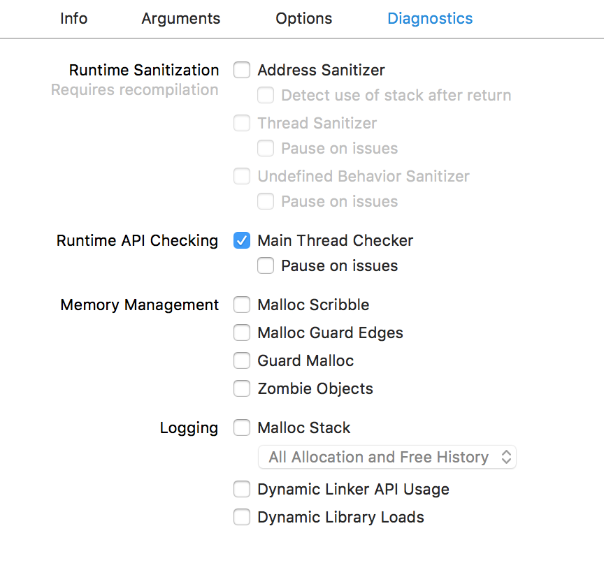
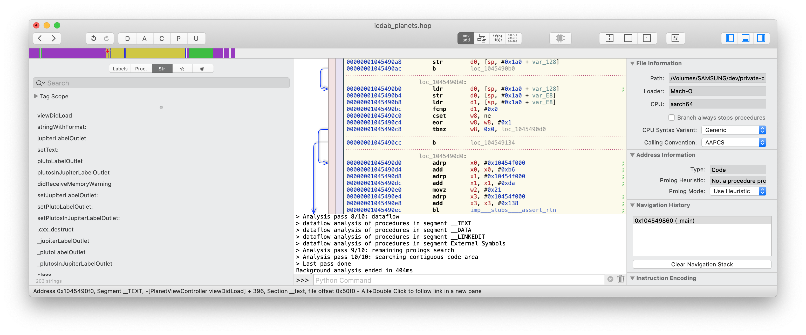
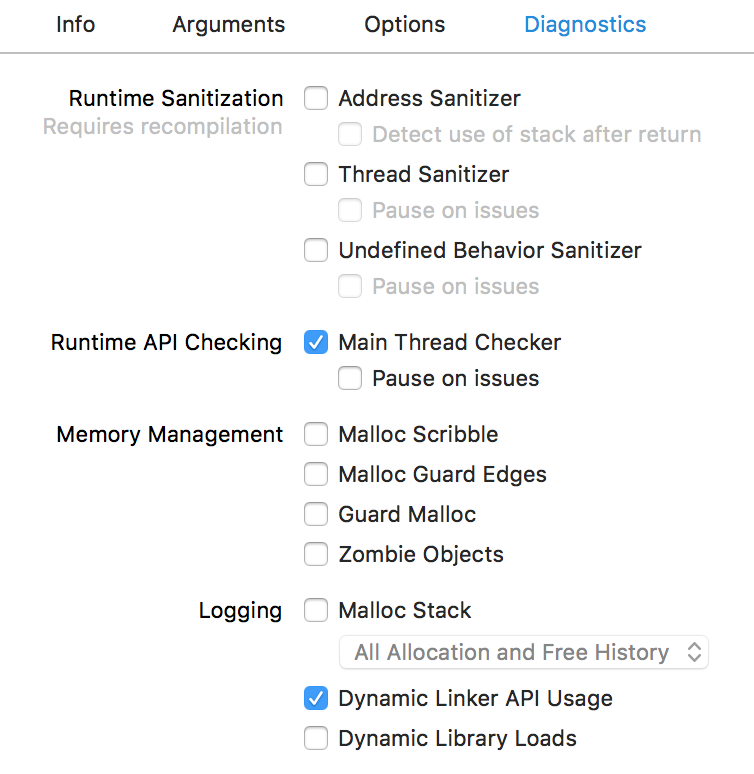
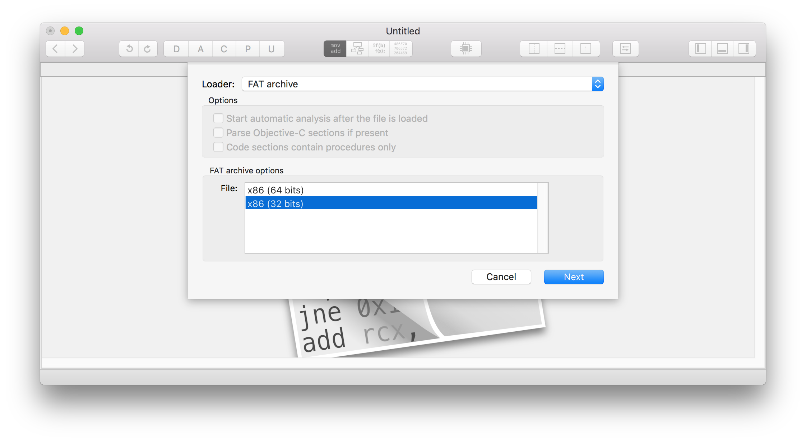
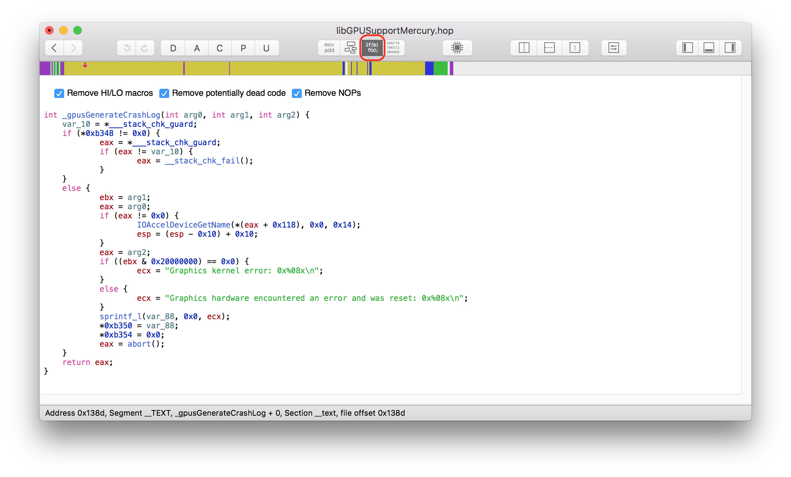

Copyright Faisal Memon 2018-2020. All Rights Reserved.
This publication is provided “as is” without warranty of any kind, either express or implied, including, but not limited to, the implied warranties of merchantability, fitness for a particular purpose, or non-infringement.
This publication could include technical inaccuracies or typographical errors. Changes are periodically added to the information herein. These changes will be incorporated in new editions of the publication.
Apple makes no explicit or implied endorsement of this work. Materials in this book have been determined from public information sources and binaries, or materials provided by the Apple Software Development Kits.
Positions held by the author, as an employee or contractor, at past or future companies and institutions makes no explicit or implied endorsement of this work by those entities.
Every effort has been made to identify trademark terms in this text. If there is an error or omission, please contact the author. We have thus far recognized the following trademarks:
ARM, Android, App Store, Apple, Apple Watch, BridgeOS, GitHub, Hopper, IDA Pro, Intel, Kepner-Tregoe, Kindle Create, MacBook Pro, Objective-C, Objective-C++, QuickEdit, Rosetta, Siri, Snapchat, Sun Microsystems, Swift, TestFlight, UNIX, Xcode, Xcode Instruments, iOS, iPad, iPhone, iPhone 11, iPhone XR, iPhone XS, iPhone XS Max, macOS, tvOS, watchOS.
This book grew from an inspiration gained back in the late 1990s.
It’s hard to overstate the euphoria of the moment. The Internet was the next Industrial Revolution. Investors saw it as the best place to put their money. Hardware, software and services were all experiencing a Cambrian explosion of diversity and innovation.
I found myself at the center of things. I was newly recruited to Sun Microsystems. At that time, if you had a great idea for a website and wanted to start serving your customers, Sun Microsystems computers were an essential purchase. These were servers that you would either house yourself or place with a co-location provider.
Computer technology was already well developed by then, but existing solutions were now being put to use in new scenarios, and at Internet-scale. What was a perfectly good implementation of Unix, SunOS, from the rarefied halls of Stanford University was now running on E-Bay and had to be up and running without a glitch.
We had an electronic board showing the status of our critical customers. Saudi Aramco was permanently lit in red to such an extent that we wondered if that was a fault on the board itself.
My first day was somewhat ignominious. I wasn’t even given my own cubicle. My desk looked like a school table. My keyboard had several faulty and inoperative keys. I sat in one corner of a vast cube-farm and actually forgot which corner it was at on the first day. After lunch, I returned to my desk after an extensive walk around the other corners.
One thing struck me was that there was a book sitting on the desk of about a quarter of the 500 odd engineers. It proudly said on the front cover, “Panic!” (Panic! Unix System Crash Dump Analysis 1995). It was a book on SunOS crash dump analysis.
After acquiring a proper cubicle and getting to know my colleagues, I noticed that the engineers with the “Panic!” book just seemed to have that extra edge in handling low-level issues reported by Customers. Collectively it lifted the problem solving IQ of the Answer Center where I worked.
At Sun, there was a deep culture of learning. We were given such extensive training, and support, it was often the case we’d be doing seven courses per year - each a week long.
All was good until one course came up. It was called Analytical Troubleshooting (ATS). This caused great controversy within the Answer Center. It was a formal methodology for solving problems. It could not tell you the answers, but it would ensure you were forced to ask the right questions. It turned out that on our hardest problems, we were missing asking the right questions.
This was a major step improvement in productivity. Nevertheless, some engineers, quite out of character, were loudly critical. It turned out that these techniques were just things experienced engineers had learnt as part of their craft and they didn’t want the magic to be laid bare for anyone to pick up cheaply.
One day Chris Drake was in town and popped into our office. He was the x86 architecture specialist that collaborated with Kimberley Brown to produce the “Panic!” book. They arranged a workshop to educate us on SunOS crashes on x86 architecture. It was something of a novelty at the time, prior to the remarkable rise of Linux and the GNU/Linux system.
I remember one time, as an undergraduate student, during an Operating Systems lecture, I looked across the room. I noticed it was full of Sun Microsystems equipment; I stared into the Sun logo and dreamed of one day working there. It came true. So in my workshop on x86 panics, I had another idea. One day I would write a book. It would be something quite focussed on a single technical problem. It would be something that would convey the experiences I had obtained in my career. It turns out that came true, as well, in the book you are reading now!
It has been a mere two years, but the pace of development of Apple Technologies is as fast as ever.
My professional journey has been most interesting during this period, as I was hired as a contractor (known as a vendor-on-site contractor) for Apple. Like many engineers before me, I was firmly of the opinion that getting through the hiring process was some kind of fluke, or mistake. Holding the Apple badge in my hand, it felt like it was a magical key; so clean, perfectly formed, and succinct, as any Apple product. As a matter of fact, I never worked on the secret stuff at Apple, but other people did. There was a running joke, however. “Have you found the secret room?” one engineer would ask the new hires. I puzzled about it during the first couple of weeks, and then found it hiding in plain sight! A cavern. At Apple, it was more a matter of being a master of the public APIs in your focus area, and working with other engineers to solve problems in those areas (my area was Accessibility). An intense, but interesting, two years.
This second edition of the book was prompted by a long-speculated addition to the Apple product line-up, Apple Silicon Macs.
I’ve updated the text, and modernized the examples, to reflect the latest OS versions and SDKs. As of the time of writing, these are iOS 12.2, macOS 11.0 Big Sur, and Xcode 12.2.
With respect to Crash Dump Analysis, the main new concept we see introduced is that the system can be running in a translation mode, translating X86-64 instructions on an ARM64 platform. I have also added a chapter on Pointer Authentication. Whilst this feature is mainly used to protect the kernel, it is an opt-in feature for user space programs, and may be of interest if you are writing security-sensitive software applications that are experiencing Pointer Authentication related crashes.
I’d like to acknowledge the help and support of my colleagues for writing this book.
I am indebted to the support of my Chinese-language translator, XiaWenqiang, for helping bring the Chinese edition of the book into fruition.
Putting together this work was only possible because it was built upon generously provided open source tools, in particular pandoc which made writing the text of the book a pleasure.
Lastly, I’d like to thank my supportive family whilst I was locked in my study, and largely absent. Thank you Junghyun, and Christopher.
This book fills a gap that has emerged between Application Developers and the platform they are developing for when a crash occurs. The mindset of the Application developer is largely understanding high-level concepts and abstractions. When a crash occurs, you can often feel rudely transported into a command line UNIX world of low level constructs, pointers and raw data.
We focus exclusively on the Apple ecosystem.
We cover iOS, macOS, tvOS, watchOS and BridgeOS platforms, ARM Assembly, and C (CoreFoundation), Objective-C, Objective-C++ and Swift programming languages. This is because the older languages are more prone to crash bugs. Real world applications tend to end up being a hybrid between the safer Swift language and older technologies.
We cover the newer developments of the Apple ecosystem. In particular, new issues arising from the use of Apple Silicon Macs.
We assume you have at least an introductory knowledge of iOS programming and software engineering, and have access to a Mac with Xcode.
The approach we take is to combine three different perspectives on the problem to give a rounded and robust view of the situation and how to resolve it.
Our first perspective is to deliver a HOW-TO guide for using the excellent tooling available from Apple.
Our second perspective is to provide a discussion of software engineering concepts tailored to preventing and resolving crashes.
Our third perspective is to offer a formal problem-solving approach but applied to crash analysis.
Programming literature comprehensively has documented software engineering concepts, and Apple has documented their crash dump tooling via Guides and WWDC videos.
Formal problem solving is less discussed in software engineering circles, perhaps because it’s considered a table stakes skill for an engineer. It is however a discipline of its own and when directly studied can only enhance the “natural” abilities that seem to mark out the “technically-minded” folks from the rest of the population.
Our goal is not the shy away from repeating knowledge we’ve probably seen or read elsewhere but instead we take the viewpoint of explaining the whole narrative in a cohesive manner. What makes crash dump analysis hard is that significant background knowledge is often assumed in order to make room to concentrate on the particulars of a specific tool or Crash Report. That causes a barrier to entry, which this book aims to overcome.
To complement the book, there is a website of resources which is intended to be used alongside the printed material so example projects can be setup and run by yourself and experimented with. All references in this book are collected into the Bibliography Chapter at the end of the book. There you will find URLs to resources, for example.
The GitHub website supporting the book is at (“IOS Crash Dump Analysis Book Github Resources” 2018)
When an application crash appears after a recent code change, it can be straightforward to reason about the crash and look at the relevant code changes. Often, crashes just appear due to a change in operating environment. Those can be the most annoying. For example, the app runs fine in the Office but crashes at the customer Site. We don’t have time to get into why, but need a quick fix or workaround. Another common problem scenario arises when a new project is being explored. This is where we have no prior experience with the code base but immediately face crash problems after compilation and running the app.
In this chapter, we explore possible reasons for crashing due to a change in operating environment. Many problems can be dealt with without getting into logical analysis of the specifics of the problem at hand. In reality sometimes we just need to make progress, whilst making a note to go back and address the root cause.
Sometimes our app crashes on startup due to a missing resource issue.
We should try compiling and running other Xcode targets within the same project. Sometimes a specific target is the one that sets up the needed environment as part of the build. If so, we can make a note to address that later.
Sometimes our app crashes on startup due to a binary compatibility issue.
If we’ve recently updated Xcode, or pulled code updates on top of a compiled project, we can perform an Option-Command-Shift-K clean which cleans the build area of intermediates, and then re-build as normal.
Sometimes our app crashes only on simulator.
Here we should try Simulator Hardware->Reset all content and settings. We can try iPad simulator instead of iPhone simulator or vice-versa. Sample projects are often used to explain a particular technology without regard to productization or generality.
Sometimes our app only crashes when at customer site.
We can check Wi-Fi settings or try hot-spotting our iPad to an iPhone. Sometimes network issues such as connectivity, or latency are overlooked when developing our app in the office/home environment. We should make a note to fix networking assumptions if that is the problem.
Sometimes our app only crashes when deployed onto a customer device.
If we cable up our laptop to the customer’s device, we’re probably doing a Debug release deployment. This means push notification tokens will be the development tokens not the production tokens. It also may mean that resource access grants (to Camera for example) are no longer valid as they may have been approved via a TestFlight or App Store version of the app previously (production version).
We should try switching deployment configuration via Command-<, selecting Run in the left panel, Info tab in the right panel, Build Configuration setting Release (not Debug). We should also manually check any resource access grants in the iPad/iPhone settings.
Sometimes deploying with the customer’s locale causes a crash.
Resource files might be absent in the wrong locale. Furthermore, locale handling is rife with undocumented special cases. We should try changing the locale temporarily to a known working one. Make a note to return to the issue when back in the office.
One take away lesson from the above examples is that we need to think of our code in a wider context. We should think of the operating environment of our app. This comprises:
As a first step in getting into the correct mindset to tackle app crashes, its worthwhile working through each of the above operating environment differences and trying to note down if such a difference ever resulted in a crash that we know about or suspect could happen. This teaches us that crashes are much more about environment than about source code. Another secondary insight is: the more able we are to produce a list of hypotheses, given a specific environment difference, the more easily and quickly we will be able to find the root cause of crashes. It may seem mysterious to other people, and almost magical, that we were able to come up with a suggestion of where the problem could be.
Here are some curious examples of crashes from the Information Technology folklore to whet our appetite, and get us thinking:
The Russian locale caused a crash during date processing.
This was because 1984-04-01 was being used as a sentinel date marker. However, in Russia, there is no such date/time because there is no midnight at that point in time. Daylight time started in Russia on that date with a +1 hour.
This was seen during development of the WecudosPro iPad app when it was tested in Russia
A computer was crashing each day at a different time.
The actual problem was the computer was near a window next to an estuary where ships passed by. At high tide, a military ship would sail past and its RADAR would disrupt the electronics and cause a crash.
This folklore story was told to Sun Microsystems Answer Center engineers in the UK during Kepner-Tregoe formal problem solving training.
When a computer was under both heavy network load, and disk load, the system would crash.
The crash was due to corruption on disk. There were zeroes every 64 bytes. It was the cache line size of the computer. The memory board was not wired up correctly causing noise at 64 byte boundaries picked up by the disk ribbon cable sitting next to it.
This was seen in an early prototype of a Sun Volume Systems Group computer.
Inside our computers is an Operating Environment. This comprises one or more running Operating Systems, and Application Software. Operating Systems and Application Software are distinguished by the fact that OS software runs with higher CPU privileges (kernel mode) than Application Software (user mode).
The basic conceptual model of our application software sitting on an Operating System which itself sits on hardware is normally sufficient. However, modern computer systems have multiple co-operating subsystems. For example, a MacBook Pro with TouchBar will have the main operating system, macOS, but also Bridge OS providing the TouchBar interface, disk encryption and “Hey Siri!” support. The multimedia and networking chips in our computers are advanced components and can have their own real-time Operating Systems running on them. Our Mac software will be just one of many applications running on macOS.
An application crash is something the Operating Environment does to our application in response to what we have done (or failed to do) in the Operating Environment that violates some policy of the platform we are running on.
When the Operating System detects a problem in the Operating System, it can crash itself. This is called a kernel panic.
The policies of the operating environment are there to ensure security, data safety, performance, and privacy of the environment to the user.
Newcomers to the Apple ecosystem are often surprised to learn that Objective-C allows us to message a nil object. It silently ignores the failed dispatch. For example, the following method runs ok.
- (void)nilDispatchDoesNothing
{
NSString *error = NULL;
assert([error length] == 0);
}The Objective-C runtime authors made a judgement call, and decided it was better for an application to ignore such problems.
However if we dereference a C pointer we get a crash.
void nullDereferenceCrash() {
char *nullPointer = NULL;
assert(strlen(nullPointer) == 0);
}The authors of the operating system have setup the system so access to this and other low memory addresses causes the hardware to trap on this illegal access and abort our program.
This area of memory is set aside by the operating system because it indicates a programming error of not setting up an object or data structure properly.
When things go wrong, we don’t always get a crash. Only if it is Operating Environment policy then we get a crash.
Consider the example of getting the MAC address of our iPhone. The Media Access Control (MAC) address is a unique code allocated to network cards to allow machines to talk to each other without duplication at the Data Link layer of the communication stack.
Prior to iOS 7, the MAC address was not considered a sensitive API. So requesting the MAC address using the sysctl API gave the real address. To see this in action, see the icdab_sample app (“IOS Crash Dump Analysis Book Github Resources” 2018).
Unfortunately, the API was abused as a way of tracking the user - a privacy violation. Therefore, Apple introduced a policy from iOS 7 where they would return a fixed MAC address always.
Apple could have chosen to crash our app when any call to sysctl was made. However, sysctl is a general-purpose low-level call which can be used for other valid purposes. Therefore the policy set by iOS was to return a fixed MAC address 02:00:00:00:00:00 whenever that was requested.
Now lets consider the case of taking a photo using the camera.
Introduced in iOS 10, when we want to access the Camera, a privacy sensitive feature, we need to define human readable text that is presented inside the system permission dialogue before access to the Camera is granted.
If we don’t define the text in our Info.plist for NSCameraUsageDescription we still see the following code evaluating true and then attempting to present the image picker.
func handlePickerButtonPressed() {
if UIImagePickerController.isCameraDeviceAvailable(.front) {
let imagePicker = UIImagePickerController()
imagePicker.delegate = self
imagePicker.sourceType = .camera
imagePicker.allowsEditing = true
self.present(imagePicker, animated: true, completion:
nil)
}
}However when we run the code, via Xcode 12.2, we see a crash with a descriptive console message:
2020-10-03 17:59:10.458176+0100 icdab_camera[6908:6483411]
[access] This app has crashed because it attempted to access
privacy-sensitive data without a usage description. The app's
Info.plist must contain an NSCameraUsageDescription key with a
string value explaining to the user how the app uses this data.
Message from debugger: Terminated due to signal 9Note the contrast here. In both cases there was a privacy sensitive API. However, in the camera case, Apple chose a policy of crashing our app instead of giving a warning, allowing a boilerplate standard explanation dialog, or returning a false value to indicate the source type was not available.
This seems like a harsh design choice. The API in question originates from iOS 4.0. When Xcode 10.0 was introduced (this delivers the iOS 12 SDK) the behavior of the API changed. It returns false if the camera is not available due to a missing privacy string in the application Info.plist However by Xcode 11.x (this delivers iOS 13.x SDK) logic had changed back to the original logic of returning true.
This underlies the point about there being two entities involved, the program and the operating environment (which includes its policies). Having correct source code does not guarantee crash free running. When we see a crash we need to think about the operating environment as much as the code itself.
The application we are writing can also request a crash. This is typically done via assert calls in our code. These calls ask the Operating Environment to terminate our app if any assert has failed. The Operating Environment then aborts our app. In the Crash Report we get a:
Exception Type: EXC_CRASH (SIGABRT)
to indicate it was the application that requested the crash in the first place.
We can apply similar standards as the Operating Environment for our crash policy.
If our code detects a data integrity issue, we could crash to prevent further data corruption.
If the problems have resulted directly from some IO problem (file or network access for example) or some human input problem (such as a bad date value) then we should not crash.
It’s our job as the application developer to shield the lower level parts of the system from unpredictability present in the real world. Such problems are better dealt with by logging, error handling, user alerts, and IO retries.
How should we guard against the privacy problems described above?
The thing to keep in mind is that any code that touches upon the policies the Operating Environment has guards for is a good candidate for automated testing.
In the icdab_sample project we have created Unit tests and UI tests.
Test cases always feel over-the-top when applied to trivial programs. But consider a large program that has an extensive Info.plist file. A new variant of the app is designed, so another Info.plist is created. Then keeping the privilege settings in sync between the different build targets becomes an issue. The UI test code shown here, which merely launches the camera, can catch such problems easily so has practical business value.
Similarly, if our app has a lot of low-level code and then is ported from iOS to tvOS, for example, how much of that OS-sensitive code is still applicable?
Unit testing a top level function comprehensively for different design concerns can pay off the effort invested in it before delving deeper and unit testing the underlying helper function calls in our code base. It’s a strategic play allowing us to get some confidence in our application and early feedback on problem areas when porting to other platforms within the Apple Ecosystem (and beyond).
The code to get the MAC address is not trivial. Therefore it merits some level of testing.
Here is a snippet from the Unit tests:
func getFirstOctectAsInt(_ macAddress: String) -> Int {
let firstOctect = macAddress.split(separator: ":").first!
let firstOctectAsNumber = Int(String(firstOctect))!
return firstOctectAsNumber
}
func testMacAddressNotNil() {
let macAddress = MacAddress().getMacAddress()
XCTAssertNotNil(macAddress)
}
func testMacAddressIsNotRandom() {
let macAddressFirst = MacAddress().getMacAddress()
let macAddressSecond = MacAddress().getMacAddress()
XCTAssert(macAddressFirst == macAddressSecond)
}
func testMacAddressIsUnicast() {
let macAddress = MacAddress().getMacAddress()!
let firstOctect = getFirstOctectAsInt(macAddress)
XCTAssert(0 == (firstOctect & 1))
}
func testMacAddressIsGloballyUnique() {
let macAddress = MacAddress().getMacAddress()!
let firstOctect = getFirstOctectAsInt(macAddress)
XCTAssert(0 == (firstOctect & 2))
}In fact, the last test fails because the OS returns a local address.
For testing camera access, we have written a simple UI test case which just presses the Choose Picture button.
func testTakePhoto() throws {
let app = XCUIApplication()
app.launch()
app.buttons["Choose Picture"].tap()
}This UI test code caused an immediate crash.
We have a rich set of tools available to assist crash dump analysis. When used properly they can save a huge amount of time.
One way to think about crash dump tools is to consider where along the software development and release cycle we are on.
At development time, we have static analysis tools in Xcode, and runtime metrics when running our app via Xcode. When running on device, we have crash reports that explain problems. We have Xcode diagnostics which can be switched on to instrument our app in an area of interest. There are third party tools which we can use to look inside (Reverse Engineer\index{software!reverse engineering) our app binary to help us understand what is happening. Furthermore, macOS also provides a lot of similar functionality from the command line. Note much of the code in our apps is either in first party frameworks, or third party libraries, for which we generally do not have the source code.
At beta time, we have the Xcode Organiser which can report on how our app is performing in the field. Xcode retrieves performance and crash information for those beta customers that have opted-in to such data collection. App Store Connect can also provide this information. Third party crash reporting tools and services can be employed to give further context to the problems. Introduced in iOS 14 diagnostics are provided through the MetricKit framework, and this provides a first party API to obtain crash information, and other diagnostics, from our app to such third party crash reporting services.
At release time, we have similiar facilities to what is available at beta time, but we generally have bigger scale - more users, and more crash report instances. This is usually where the more rare bugs, and unexpected user workflows, show up because we are one step further removed from our customer base. This is where the phased release option within App Store Connect comes in handy.
Xcode provides much help out of the box. However, using and comprehending the information Xcode tools provide is daunting. In later chapters, we go through examples showing the use of such tools.
Reverse engineering is where an already built binary (such as an application, library, or helper process daemon), is studied to determine how it works. For a specific Object, we might want to find out:
We generally do not want to know everything, only something specific to help build a hypothesis. Once we have a hypothesis, we will test it in relation to the crash dump we are dealing with.
How far should we go with reverse engineering, and how much money and time to invest in it is a good question. We offer the following recommendation:
One of the great things about the Objective-C runtime is that it carries lots of rich program structure information in its built binaries. These allow the dynamic aspects of the language to work. In fact, its flexibility of dynamic dispatch is a source for many crashes.
We recommend installing the class-dump tool right away because we shall reference its usage in later chapters. See Nygard (2018)
The class dump tool allows us to look at what Objective C classes, methods and properties are present in a given program.
The Apple Crash Reporter tool and supporting infrastructure in App Store Connect is excellent but has some room for improvement.
A formidable piece of Open Source software, plcrashreporter, has been written by Landon Fuller, of Plausible Labs. (“Plausible Labs Crash Reporter” 2018)
The idea is to make our app handle all the possible signals and exceptions that can occur that would otherwise be unimplemented by the app and thus lead to the underlying Operating System to handle the crash.
With this solution, the crash data can be recorded, and then later communicated to a server of our own choice.
There are two benefits. Firstly, the crash handler can be fixed to handle edge cases not already handled by the Apple ReportCrash tool. Secondly, a more comprehensive server side solution can be employed.
For those wanting to explore, and understand, the Operating System, and low-level application code, plcrashreporter provides an excellent opportunity to study a well-engineered piece of system software.
When a company has many apps, many app variants, and has apps based on competitor platforms such as Android, a more powerful multi-platform solution is needed. Handling crash reports soon becomes a management problem. Which crash is the most serious? How many customers are affected? What are the metrics for quality and stability saying?
A number of commercial solutions are available, largely based upon the above Open Source project.
The Mobile Software Development field has grown into a big industry over the last few years. Many specialist companies serve App Developers as their customers. The field is very active in terms of mergers and acquisitions. Therefore, we cannot name the competitors in the Crash Reporting space in this book, as the list would be constantly changing.
A good place to start is the rollout.io blog posting that reviewed different players in the market. (“IOS Crash Reporting Tools” 2017)
We expect the pace of development to continue in this space because since iOS 14 there has been a substantial improvement in first party support for diagnostics reporting. Firstly, there is the MetricKit framework which allows apps in their beta or release phase to report diagnostic information to our app. We think of this as a well-defined conduit, whose data we would be passed onto a web service to further analyze the crash, or diagnostic condition. This will place third party crash reporting services on an official API footing. Secondly, the App Store Connect website overall has been made available as a web service with a public API. This provides equivalent functionality but improves the developer workflow by allowing continuous integration systems to more deeply embed the true end-to-end lifecycle of app development. As a hypothetical example, a CI system could detect a high crash rate and push out an emergency update based on an earlier release. This would reduce the pressure on the engineering staff to conduct an analysis of why a bad release was made, and the appropriate fix for the problem.
Xcode provides significant help to developers in understanding and preventing crashes.
We think of Xcode in layers of sophistication, where at the lowest layer of sophistication Xcode directly tells us the common error it has seen with suggested corrections, up to the highest level were Xcode is telling the raw information, but we need Operating Systems knowledge to interpret the information ourselves.
We shall revisit Xcode configuration, setup and tooling many times. Nevertheless, let us first start off with the simple but high value assistance Xcode provides.
By opening the project icdab_sample (“IOS Crash Dump Analysis Book Github Resources” 2018) and looking at the Scheme definition and then highlighting the Diagnostics tab we see the following options:

If we have a crash that is reproducible from our own developer environment and source code, then a methodology for finding the cause of the crash is to switch on the appropriate diagnostic setting, and then re-run our application.
As we become familiar with each diagnostic, we will know which option to switch on. We shall work through different scenarios so we understand when to use each. But when we are just starting out its worth just going through each one-by-one to get a feel for what is available. The basic approach is:
Another complementary approach for analyzing and proactively avoiding crashes is to run the Code Analyzer. This is invoked using Command-Shift-B
In the sample app icdab_sample the Analyzer reports:
.../source/icdab_sample/icdab_sample/macAddress.m:22:12:
warning: Null pointer argument in call to string length function
assert(strlen(nullPointer) == 0);and conveniently marks up our source code
This can be switched on for whenever the project is built, either in shallow or deep mode according to how we feel the tradeoff should be done between slower more thorough analysis versus quicker build times with less analysis. It is in the Build Settings tab for the Xcode project file.

For a large project that has never had an Analysis report done, the output can be overwhelming. There will be some noise in the report but it generally does a good job. There will be duplication in the report because certain classes of error will repeat throughout the code.
If we are developing code using the Agile software methodology, then it is possible to frame the report as potential backlog items that can be worked upon during the time allocated for refactoring and maintenance.
In a large software project refactoring and maintenance should be around 20% of the work in a Sprint. Different viewpoints arise in this area. The author recommends doing such work alongside the normal development activities so long as no high-risk changes are amongst the work being done. For risky changes, leave that until after a major update of the app has been done. There is usually a lull where planning and strategy is developed following a release, which allows a convenient software engineering window to tackle such matters.
Where the analyzer identifies potential crashes, from an economic point of view, it is a good investment to fix the problem. For example in the case of the QuickEdit iOS App, about 1 million lines of Objective-C, with 70 000 daily active users, the analyzer was run and found 13 clear crashing issues. We created one engineering story (“Fix top analyzer errors”). All 13 issues were fixed in the same day with testing taking two more days. Crashes are a top complaint from customers. Bugs found in the field typically are 20 times the effort and cost compared to those found in development. With a large population of users, potentially experiencing a severe crash bug, the cost of those 13 bugs could be 20 * 3 days = 60 days wasted effort.
QuickEdit due to its age only used manual reference counting in Objective-C. Despite this, it had a reliability of 99.5% based on app analytics. Only about 5% of engineering effort was needed to maintain this stability over time once the initial issues had been addressed.
One way to drive out crashes from our app, particularly when we are in a large organization, is to factor it in our software development process.
When a developer proposes a code change in a pull request, get the developer to ensure no new analyzer warnings are introduced. We might consider the analyzer report as a robotically generated code review available to us for free. That is particularly helpful if we are working alone on a project with no peer to review our code.
When code is committed to a feature branch, have the automated tests run on it, with different diagnostics settings set. This can shake out problems automatically.
Before each release, schedule time to run some specific user cases under the memory profiler to look at memory usage or other key metrics. Record the highlights such as the peak memory usage as well as the profile file. Then when the following release is made we have a yardstick to see how things have changed both quantitatively and qualitatively.
Most software developers know what they “should” be doing; clean code, proper tests, code reviews, etc.
We recommend taking a measured approach. There is a time for hacking together a sample app to understand a concept. There is a time to write a prototype that just needs to prove a business use case. There is a time to write heavily trusted code used by many people.
We take the view that maximizing economic impact is the goal that matters the most because most developers are involved in professional software development. Alternatively, if we are working on non-commercial projects or hobby projects, the economic impact is really our personal free time which we will want to use most effectively.
We recommend:
We have seen that Xcode offers many automatic facilities for crash dump analysis and crash avoidance. However, these cannot get us all the answers we need. A complementary design oriented viewpoint is needed.
In this chapter, we shall look at a sample app icdab_planets that uses hybrid of programming languages and paradigms. It shows an example of why design insights must also be considered.
The icdab_planets sample app uses a mixture of C++, and Objective-C++. It relies on both STL data structures and traditional Objective-C data structures. (“IOS Crash Dump Analysis Book Github Resources” 2018)
The model layer of the app is written in C++. The controller layer of the app is written in Objective-C++.
The purpose of the app is to tell us how many Pluto sized planets would fit inside Jupiter.
Recall earlier we demonstrated that:
Here we show how the C++ Standard Template Library has a back-fill strategy.
In the STL map abstraction (a Hash Table) when we query for an entry that does not exist, the STL will insert a new entry in the table for the key being queried, and then return that entry instead of returning an error or returning a nil.
In our sample app, which crashes upon launch, we have an assert that gets triggered.
double pluto_volume = pluto.get_volume();
assert(pluto_volume != 0.0);
double plutos_to_fill_jupiter
= jupiter.get_volume() / pluto_volume;Enabling code Analysis will not find any issue or warning.
The assert is in place to avoid a division by zero. The fact that it is triggered is good because we know where to start debugging the problem.
Pluto’s volume is 0.0 because the code
planet pluto = planet::get_planet_with_name("Pluto");returns a planet with zero diameter.
From the file planet_data.hpp we see the API that we rely upon is:
static planet get_planet_with_name(string name);Therefore, whatever name we pass in, we should always get a planet in response; never a NULL.
The problem is that this API has not been thought deeply about. It has just been put together as a thin wrapper around the underlying abstractions that do the work.
We have
planet planet::get_planet_with_name(string name) {
if (!database.loaded_data) {
database.load_data();
}
return database.planets[name];
}At first glance, it might be that the database failed to load data properly. In fact, the database is missing the entry for Pluto due to it no longer being considered a planet:
void planet_database::load_data() {
planet planet_Mercury =
planet("Mercury", 4878.0, 57.9 * millionKm);
planets["Mercury"] = planet_Mercury;
planet planet_Venus =
planet("Venus", 12104, 108.2 * millionKm);
planets["Venus"] = planet_Venus;
planet planet_Earth =
planet("Earth", 12756, 149.6 * millionKm);
planets["Earth"] = planet_Earth;
planet planet_Mars =
planet("Mars", 6792, 227.9 * millionKm);
planets["Mars"] = planet_Mars;
planet planet_Jupiter =
planet("Jupiter", 142984, 778 * millionKm);
planets["Jupiter"] = planet_Jupiter;
planet planet_Saturn =
planet("Saturn", 120536, 1427 * millionKm);
planets["Saturn"] = planet_Saturn;
planet planet_Uranus =
planet("Uranus", 51118, 2870 * millionKm);
planets["Uranus"] = planet_Uranus;
planet planet_Neptune =
planet("Neptune", 49532, 4497 * millionKm);
planets["Neptune"] = planet_Neptune;
// No longer considered a planet but instead a dwarf planet
// planet planet_Pluto =
// planet("Pluto", 2370, 7375 * millionKm);
// planets["Pluto"] = planet_Pluto;
loaded_data = true;
}The problem indirectly is because database.planets[name] discovered that there was no entry for Pluto so created one via the no-arg constructor as this is the behavior for STL map data structures.
planet::planet() {
this->name = "";
this->diameter = 0.0;
this->distance_from_sun = 0.0;
}We see the constructor makes the diameter zero in this case.
We see that the problem is not applying the paradigms of each framework and language properly and when we have a mixture of paradigms, those different assumptions get masked by each layer of abstraction.
In STL, we expect a find operation to be done, instead of the indexing operator. This allows the abstraction to flag the absence of the item being found.
In Objective-C we expect the lookup API to be a function which returns an index given the lookup name. In addition, the index would be NSNotFound when the operation failed.
In this code example, each layer of abstraction assumes the other side will re-map the edge case into an appropriate form.
We have a variant of the code which does things “properly” from an STL point of view. (“IOS Crash Dump Analysis Book Github Resources” 2018) It is icdab_planets_stl/icdab_planets. On the consumer side, we have a helper method:
- (BOOL)loadPlanetData {
auto pluto_by_find = planet::find_planet_named("Pluto");
auto jupiter_by_find = planet::find_planet_named("Jupiter");
if (planet::isEnd(jupiter_by_find) ||
planet::isEnd(pluto_by_find)) {
return NO;
}
pluto = pluto_by_find->second;
jupiter = jupiter_by_find->second;
return YES;
}This is hard to parse if we are mainly an Objective-C programmer. If the project is mainly a C++ project, with a thin platform-specific layer, then perhaps that is acceptable. If the code base just leverages C++ code from elsewhere, then a better solution is to confine the paradigms to their own files and apply the facade design pattern to give a version of the API following Objective-C paradigms on the platform-specific code side.
Then Objective-C++ can be dispensed with in the ViewController code; it can be made an Objective-C file instead.
Here is a facade implementation icdab_planets_facade/icdab_planets that overcomes the mixing of paradigms problem.
The facade is:
@implementation PlanetModel
- (id)init {
self = [super init];
NSString *testSupportAddPluto =
[[[NSProcessInfo processInfo] environment]
objectForKey:@"AddPluto"];
if ([testSupportAddPluto isEqualToString:@"YES"]) {
planet::add_planet(
planet("Pluto", 2370, 7375 * millionKm));
}
if (self) {
_planetDict = [[NSMutableDictionary alloc] init];
auto pluto_by_find =
planet::find_planet_named("Pluto");
auto jupiter_by_find =
planet::find_planet_named("Jupiter");
if (planet::isEnd(jupiter_by_find) ||
planet::isEnd(pluto_by_find)) {
return nil;
}
auto pluto = pluto_by_find->second;
auto jupiter = jupiter_by_find->second;
PlanetInfo *plutoPlanet = [[PlanetInfo alloc] init];
plutoPlanet.diameter = pluto.get_diameter();
plutoPlanet.distanceFromSun =
pluto.get_distance_from_sun();
plutoPlanet.volume = pluto.get_volume();
assert (plutoPlanet.volume != 0.0);
[_planetDict setObject:plutoPlanet forKey:@"Pluto"];
PlanetInfo *jupiterPlanet = [[PlanetInfo alloc] init];
jupiterPlanet.diameter = jupiter.get_diameter();
jupiterPlanet.distanceFromSun =
jupiter.get_distance_from_sun();
jupiterPlanet.volume = jupiter.get_volume();
assert (jupiterPlanet.volume != 0.0);
[_planetDict setObject:jupiterPlanet forKey:@"Jupiter"];
}
return self;
}
@endThe consumer then becomes a purely Objective-C class:
- (void)viewDidLoad {
[super viewDidLoad];
self.planetModel = [[PlanetModel alloc] init];
if (self.planetModel == nil) {
return;
}
double pluto_diameter =
self.planetModel.planetDict[@"Pluto"].diameter;
double jupiter_diameter =
self.planetModel.planetDict[@"Jupiter"].diameter;
double plutoVolume =
self.planetModel.planetDict[@"Pluto"].volume;
double jupiterVolume =
self.planetModel.planetDict[@"Jupiter"].volume;
double plutosInJupiter = jupiterVolume/plutoVolume;
self.plutosInJupiterLabelOutlet.text =
[NSString stringWithFormat:
@"Number of Plutos that fit inside Jupiter = %f",
plutosInJupiter];
self.jupiterLabelOutlet.text =
[NSString stringWithFormat:
@"Diameter of Jupiter (km) = %f",
jupiter_diameter];
self.plutoLabelOutlet.text =
[NSString stringWithFormat:
@"Diameter of Pluto (km) = %f",
pluto_diameter];
}The lesson here is that crashes can arise from special case handling. Since different languages and frameworks deal with special cases in their own idiomatic manner, it is safer to separate out our code and use a Facade if possible to keep each paradigm cleanly separated.
This chapter explains crash dump symbolification. Symbolification is the process of mapping machine addresses into symbolic addresses meaningful to the programmer possessing the source code. Instead of seeing machine addresses, we want to see function names (plus any offset).
We use the icdab_planets sample app to demonstrate a crash. (“IOS Crash Dump Analysis Book Github Resources” 2018)
When dealing with real world crashes, a number of different entities are involved. These can be the end user device, the settings allowing the Crash Report to be sent back to Apple, the symbols held by Apple and our local development environment setup to mirror such a configuration.
In order to understand how things all fit together it is best to start from first principles and do the data conversion tasks ourselves so if we have to diagnose symbolification issues, we have some experience with the technologies at hand.
Normally when we develop an app, we are deploying the Debug version of our app onto our device. When we are deploying our app for testers, app review, or app store release, we are deploying the Release version of our app.
By default for Release builds, debug information from the .o object files is placed into a separate directory structure. It is called our_app_name.DSYM
The debugger can use debugging information when it sees a crash to help us understand where the program has gone wrong.
When a user sees our program crash, there is no debugger. Instead, a crash report is generated. This comprises the machine addresses where the problem was seen. Symbolification can convert these addresses into meaningful source code references.
In order for symbolification to occur, appropriate DSYM files must exist.
Xcode is by default setup so that only DSYM files are generated for Release builds, and not for Debug builds.
From Xcode, in our build settings, searching for “Debug Information Format” we see the following settings:
| Setting | Meaning | Usually set for target |
|---|---|---|
| DWARF | Debugging information is in .o files only |
Debug |
| DWARF with dSYM File | As before but also collates the debug information into a DSYM file | Release |
In the default setup, if we run our debug binary on our device, launching it from the app icon itself then if it were to crash we would not have any symbols in the Crash Report. This confuses many people.
The problem is that the UUID of the binary and the DSYM need to match.
To avoid this problem, the sample app icdab_planets has been configured to have DWARF with dSYM File set for both debug and release targets. Then symbolification will work, because there will be a matching DSYM on our Mac.
The icdab_planets program is designed to crash upon launch due to an assertion.
If the DWARF with dSYM File setting had not been made, we would get a partially symbolicated crash.
The Crash Report, seen from Window->Devices and Simulators->View Device Logs, would look like this (truncated for ease of demonstration)
Thread 0 Crashed:
0 libsystem_kernel.dylib 0x0000000186388d88
__pthread_kill + 8
1 libsystem_pthread.dylib 0x00000001862a11e8
pthread_kill$VARIANT$mp + 136
2 libsystem_c.dylib 0x00000001861f4934 abort
+ 100
3 libsystem_c.dylib 0x00000001861f3d54 err +
0
4 icdab_planets 0x00000001045490f0
0x104544000 + 20720
5 UIKitCore 0x0000000189ff2750
-[UIViewController
_sendViewDidLoadWithAppearanceProxyObjectTaggingEnabled] + 100
6 UIKitCore 0x0000000189ff71e0
-[UIViewController loadViewIfRequired] + 936However, with the setting in place, a crash would instead be reported as:
Thread 0 Crashed:
0 libsystem_kernel.dylib 0x0000000186388d88
__pthread_kill + 8
1 libsystem_pthread.dylib 0x00000001862a11e8
pthread_kill$VARIANT$mp + 136
2 libsystem_c.dylib 0x00000001861f4934 abort
+ 100
3 libsystem_c.dylib 0x00000001861f3d54 err +
0
4 icdab_planets 0x00000001048290f0
-[PlanetViewController viewDidLoad] + 20720
(PlanetViewController.mm:33)
5 UIKitCore 0x0000000189ff2750
-[UIViewController
_sendViewDidLoadWithAppearanceProxyObjectTaggingEnabled] + 100
6 UIKitCore 0x0000000189ff71e0
-[UIViewController loadViewIfRequired] + 936Lines 0, 1, 2, 5 are the same in both cases because our developer environment will have the symbols for the iOS release under test. In the second case, Xcode will look up the DSYM file to clarify line 4. It tells us this is line 33 in file PlanetViewController.mm. This is:
assert(pluto_volume != 0.0);The DSYM file is strictly speaking a directory hierarchy:
icdab_planets.app.dSYM
icdab_planets.app.dSYM/Contents
icdab_planets.app.dSYM/Contents/Resources
icdab_planets.app.dSYM/Contents/Resources/DWARF
icdab_planets.app.dSYM/Contents/Resources/DWARF/icdab_planets
icdab_planets.app.dSYM/Contents/Info.plistIt is just the DWARF data normally put into the intermediate .o files but copied into a separate file.
From looking at our build log, we can see how the DSYM was generated. It is effectively just dsymutil path_to_app_binary -o output_symbols_dir.dSYM
In order to help us get comfortable with crash dump reports, we can demonstrate how the symbolification actually works. In the first crash dump, we want to understand:
4 icdab_planets 0x00000001045490f0
0x104544000 + 20720The first number is the place where we were executing, the second number is the base address of the binary we were executing. The third number is the offset from the base address to reach the place of execution.
If we knew accurately the version of our code at the time of the crash, we can recompile our program, but with the DSYM setting switched on, and then get a DSYM file after the original crash. It should line up almost exactly.
The crash dump program tells us where the program was loaded, in memory, at the time of the problem. That tells us the master base offset from which all other address (TEXT) locations are relative to.
Running the lookup command atos symbolicates the line of interest:
# atos -arch arm64 -o
icdab_planets.app.dSYM/Contents/Resources/DWARF/icdab_planets -l
0x104544000 0x00000001045490f0
-[PlanetViewController viewDidLoad] (in icdab_planets)
(PlanetViewController.mm:33)The Crash Reporter tool fundamentally just uses atos to symbolicate the Crash Report, as well as providing other system related information.
Symbolification is described further by an Apple Tech-note in case we want to get into it in more detail. (“CrashReport Technote 2123” 2004)
In the above example we have the source code, and symbols, for the crash dump so can do Symbolification.
Sometimes we may have included a third party binary framework in our project for which we do not have the source code. It is good practice for the vendor to supply symbol information for their framework to allow crash dump analysis. When symbol information is not available, it is still possible to make progress by applying some reverse engineering.
When working with third parties there is typically a much larger turnaround time for diagnostics and troubleshooting. We find that well written and specific bug reports can speed up things a lot. The following approach can help provide the kind of specific information needed.
We shall demonstrate our approach using the Hopper tool mentioned in the Tooling chapter.
Launching hopper, we choose File->Read Executable to Disassemble. The binary in our case is examples/assert_crash_ios/icdab_planets
We need to “rebase” our disassembly so the addresses it shows mirror those of the program when it crashed. We choose Modify->Change File Base Address. As before, we supply 0x104544000.
Now we can visit the code that crashed. The address 0x00000001045490f0 is actually the address the device would return to after performing the function call in the stack trace. Nevertheless, it puts us in the right part of the file. We choose Navigate->Go To Address or Symbol and supply 0x00000001045490f0
The overall view we see is

Zooming in on the code line, we have

This indeed shows the return address for the assert method. Further up, we see the test for Pluto’s volume being non-zero. This is just a very basic Hopper example. We shall revisit Hopper later to demonstrate its most interesting feature - that of being able to generate pseudocode from assembly code. This lowers the mental load of comprehending crashes. Most developers rarely look at assembly code nowadays so this feature is worth the cost of the software itself!
Now at least for the current problem, we could formulate a bug report that said the code was crashing because Pluto’s volume was zero. That may be enough to unlock the problem from the framework vendor’s point of view.
In a more complex case, imagine we were using an image conversion library that was crashing.
There can be many pixel formats for images. An assert might lead us to notice it was the particular format that was asserting. Therefore, we could just try a different pixel format.
Another example would be a security library. Security code often gives back generic error codes, not specific fault codes to allow for future code enhancement and avoid leaking internal details (a security risk). A crash dump in a security library might point out exactly the kind of security issue, and help us correct some data structure passed into the library much earlier on.
In this chapter, we get into the details of what comprises a Crash Report. Our main focus is the iOS Crash Report. We also cover the macOS Crash Report, which carries a slightly different structure but serves the same purpose.
Note, it is possible for an app to install crash handlers from third parties, either to get enhanced crash reporting diagnostics, or to link application crashes to a web-based service for managing Crash Reports across a potentially large population of users. In this chapter we assume the app has not done this, and therefore the Apple CrashReport tool comes into play.
When a crash occurs the ReportCrash program extracts information from the crashing process from the Operating System. The result is a text file with a .crash extension.
When symbol information is available, Xcode will symbolicate the Crash Report to show symbolic names instead of machine addresses. This improves the comprehensibility of the report.
Apple has produced a detailed document explaining the anatomy of a crash dump. (“Apple Crash Dump Technote 2151” 2018)
Crash Reports are just one part of a much bigger diagnostic reporting story.
Ordinarily as application developers, we don’t need to look much further. However, if our problems are potentially triggered by an unexplained series of events or a more complex system interaction with hardware or Apple provided system services, then not only do we need to look at our Crash Reports, we need to study the system diagnostics.
When understanding the environment that gave rise to our crash, we may need to install Mobile Device Management Profiles (to switch on certain debugging subsystems), or create virtual network interfaces (for network sniffing). Apple provides a great web page covering each scenario. (“Diagnostic Profiles and Logs” 2018)
On iOS, the basic idea is that we install a profile, which alters our device to produce more logging, and then we reproduce the crash (or get the customer to do that). Then we press a special key sequence on the device (for example, both volume buttons and the side button). The system vibrates briefly to indicate it is running a program, sysdiagnose, which extracts many log files. This can take 10 minutes to process, and produces a large file (compressed tar file) Then we share our local sysdiagnose file with our Mac. We go into menu Settings > Privacy > Analytics and Improvements > Analytics Data. Scroll down looking for a file beginning with sysdiagnose_YEAR.MONTH.DAY_*. When this file is selected we get a blank screen but that is not a problem. We click on the Share icon in the top toolbar, and select an appropriate sharing destination. Inside this archive file are many system and subsystem logs, so we can see whenever crashes occur, the context that gave rise to them.
An equivalent approach is available on macOS as well.
Here we go through each section of an iOS Crash Report and explain the fields. (“Apple Crash Dump Technote 2151” 2018)
tvOS and watchOS may be just considered subsets of iOS for our purposes and have similar Crash Reports.
Note here we use the term “iOS Crash Report” to mean a Crash Report that came from a physical target device. After a crash, apps are often debugged on the Simulator. The exception code may be different in that case because the Simulator uses different methodology to cause the app to stop under the debugger.
A Crash Report starts with the following header:
Incident Identifier: 692E5696-6994-4FB3-B42D-C9317D956EE7
CrashReporter Key: 1f2cdb7448d354584634e8576c1e5257634fc0cd
Hardware Model: iPhone12,1
Process: get [1737]
Path:
/private/var/containers/Bundle/Application/2BF678BB-7CC6-4CAC-BF
49-0298B611F1BA/get.app/get
Identifier:
com.soul.merge.cat.cute.simulator.adventure.get
Version: 44 (1.4.4)
AppStoreTools: 11C29
AppVariant: 1:iPhone12,1:13
Code Type: ARM-64 (Native)
Role: Foreground
Parent Process: launchd [1]
Coalition:
com.soul.merge.cat.cute.simulator.adventure.get [757]These items are explained by the following table:
| Entry | Meaning |
|---|---|
| Incident Identifier | Unique report number of crash |
| Beta Identifier | Unique identifer scoped to the software author and client device in TestFlight builds |
| CrashReporter Key | Unique identifier for the device that crashed |
| Hardware Model | Apple Hardware Model (“List of iOS Devices” 2018) |
| Process | Process name (number) that crashed |
| Path | Full pathname of crashing program on the device file system |
| Identifier | Bundle identifier from Info.plist |
| Version | CFBundleVersion; also CFBundleVersionString in brackets |
| AppStoreTools | The version of Xcode the app author used to build the app for when bitcode was enabled |
| AppVariant | The variant of the app produced by app thinning by the App Store before it was deployed to the device |
| Beta | YES if the crash was TestFlight beta software otherwise absent |
| Code Type | Target architecture of the process that crashed |
| Role | The process task_role. An indicator if we were in the background, foreground, or was a console app. Mainly affects the scheduling priority of the process. |
| Parent Process | Parent of the crashing process. launchd is a process launcher and is often the parent. |
| Coalition | Tasks are grouped into coalitions so they can pool together their consumption of resources (“Resource Management” 2015) |
The AppVariant field, when present, is explained by internalVersion:nameOfVariantClass:osVersionVariant.
| Field | Meaning |
|---|---|
| internalVersion | Private field used in the Apple implementation |
| nameOfVariantClass | Usually a product name or something that characterises a type of hardware device class |
| osVersionVariant | Variant introduced from a given version of the OS |
The first thing to look at is the version. Typically, if we are a small team or an individual, we will not have the resources to diagnose crashes in older versions of our app, so the first thing might be to get the customer to install the latest version.
If we have many crashes then a pattern may emerge. It could be one customer (common CrashReporter key seen), or many customers (different CrashReporter keys seen). This may affect how we rank the priority of the crash.
The hardware model could be interesting. Is it iPad only devices, or iPhone only, or both? Maybe our code has less testing or unique code paths for a given platform. The hardware model might indicate an older device, which we have not tested on.
Whether the app crashed in the Foreground or Background (the Role) is interesting because most applications are not tested whilst they are in the background. For example, we might receive a phone call, or have task switched between apps.
The Code Type (target architecture) is now mostly 64-bit ARM. However, we might see ARM being reported - the original 32-bit ARM.
A Crash Report will continue with date and version information:
Date/Time: 2018-07-16 10:15:31.4746 +0100
Launch Time: 2018-07-16 10:15:31.3763 +0100
OS Version: iPhone OS 11.3 (15E216)
Baseband Version: n/a
Report Version: 104These items are explained by the following table:
| Entry | Meaning |
|---|---|
| Date/Time | When the crash occurred |
| Launch Time | When the process was originally launched before crashing |
| OS Version | Operating System Version (Build number). (“IOS Version History” 2018) |
| Release Type | Beta when the OS was Beta software |
| Baseband Version | Version number of the firmware of the cellular modem (used for phone calls) or n/a if the device has no cellular modem (most iPads, iPod Touch, etc.) |
| Report Version | The version of ReportCrash used to produce the report |
The first thing to check is the OS Version. Is it newer or older than we’ve tested? Is it a beta version of the operating system?
The next thing to check is the difference between the launch time and the time of the crash. Did the app crash immediately or after a long time? Early start crashes can sometimes be a packaging and deployment problem. We shall visit some techniques to tackle those later on.
Is the date a sensible value? Sometimes a device is set back or forwards in time, perhaps to trigger date checks on security certificates or license keys. Make sure the date is a realistic looking one.
Normally the baseband version is not interesting. The presence of the baseband means we could be interrupted by a phone call (of course there is VOIP calling as well in any case). iPad software is generally written to assume we’re not going to get a phone call but iPads can be purchased with a cellular modem option.
A Crash Report will next have exception information:
Exception Type: EXC_CRASH (SIGABRT)
Exception Codes: 0x0000000000000000, 0x0000000000000000
Exception Note: EXC_CORPSE_NOTIFY
Triggered by Thread: 0or it may have a more detailed exception information:
Exception Type: EXC_CRASH (SIGKILL)
Exception Codes: 0x0000000000000000, 0x0000000000000000
Exception Note: EXC_CORPSE_NOTIFY
Termination Reason: Namespace <0xF>, Code 0xdead10cc
Triggered by Thread: 0What has happened is that the MachOS kernel has raised an Operating System Exception on the problematic process, which terminates the process. The ReportCrash program then retrieves from the OS the details of such an exception.
These items are explained by the following table:
| Entry | Meaning |
|---|---|
| Exception Type | The type of exception in Mach OS. (“Mach Exception Types” 2018) |
| Exception Codes | These codes encode the kind of exception, such as trying to access an invalid address, and supporting information. (“Mach Exception Types” 2018) |
| Exception Note | Either this says SIMULATED (this is NOT a crash) because the process was killed by the watchdog timer, or it says EXC_CORPSE_NOTIFY because the process crashed |
| Termination Reason | Optionally present, this gives a Namespace (number or subsystem name) and a magic number Code (normally a hex number that looks like a English word). See below for details on each Termination Code. |
| Triggered by Thread | The thread in the process that caused the crash |
In this section, the most important item is the exception type.
| Exception Type | Meaning |
|---|---|
EXC_CRASH (SIGABRT) |
Our program raised a programming language exception such as a failed assertion and this caused the OS to Abort our app |
EXC_CRASH (SIGQUIT) |
A process received a quit signal from another process that is managing it. Typically, this means a Keyboard extension took too long or used up too much memory. App extensions are given only limited amounts of memory. |
EXC_CRASH (SIGKILL) |
The system killed our app (or app extension), usually because some resource limit had been reached. The Termination Reason needs to be looked at to work out what policy violation was the reason for termination. |
EXC_BAD_ACCESS (SIGSEGV) or EXC_BAD_ACCESS (SIGBUS) |
Our program most likely tried to access a bad memory location or the address was good but we did not have the privilege to access it. The memory might have been deallocated due to memory pressure. The pointer to memory we used might have become changed and thus become invalid due to Pointer Authentication |
EXC_BREAKPOINT (SIGTRAP) |
This is due to an NSException being raised (possibly by a library on our behalf) or _NSLockError or objc_exception_throw being called. For example, this can be the Swift environment detecting an anomaly such as force unwrapping a nil optional |
EXC_BAD_INSTRUCTION (SIGILL) |
This is when the program code itself is faulty, not the memory it might be accessing. This should be rare on iOS devices; perhaps a compiler or optimizer bug, or faulty hand written assembly code. On Simulator, it is a different story as using an undefined opcode is a technique used by the Swift runtime to stop on access to zombie objects (deallocated objects). Furthermore, for Apple Silicon Macs running an app in Rosetta Translation mode, this may suggest an unsupported instruction. |
EXC_GUARD |
This is when the program closed a file descriptor that was guarded. An example is the SQLite database used by the system. |
EXC_RESOURCE |
This is when the system killed the app because too much of a resource, such as CPU usage, was consumed. In more recent crash reports, this information is replaced with an Event information section. |
When Termination Reason is present, we can look up the Code as follows:
| Termination Code | Meaning |
|---|---|
0xdead10cc |
We held a file lock or sqlite database lock before suspending. We should release locks before suspending. |
0xbaaaaaad |
A stackshot was done of the entire system via the side and both volume buttons. See earlier section on System Diagnostics |
0xbad22222 |
VOIP was terminated as it resumed too frequently. Also seen with code using networking whilst in the background. If our TCP connection is woken up too many times (say 15 wakes in 300 seconds) we get this crash. |
0x8badf00d |
Our app took too long to perform a state change (starting up, shutting down, handling system message, etc.). The watchdog timer noticed the policy violation and caused the termination. The most common culprit is doing synchronous networking on the main thread. |
0xc00010ff |
The system detected a thermal event and killed off our app. If it’s just on one device it could be a hardware issue, not a software problem in our app. If it happens on other devices, check our app’s power usage using Instruments. |
0x2bad45ec |
There was a security violation. If the Termination Description says, “Process detected doing insecure drawing while in secure mode” it means our app tried to write to the screen when it was not allowed because for example the Lock Screen was being shown. |
With a certain geek humor, the termination codes, when discussed, are spoken as follows:
| Magic Number | Spoken Phrase |
|---|---|
0xdead10cc |
Deadlock |
0xbaaaaaad |
Bad |
0xbad22222 |
Bad too (two) many times |
0x8badf00d |
Ate (eight) bad food |
0xc00010ff |
Cool Off |
0x2bad45ec |
Too bad for security |
When we have a SIGABRT, we should look for what exceptions and assertions are present in our code from the stack trace of the crashed thread.
When we have a memory issue, EXC_BAD_ACCESS, with SIGSEGV or SIGBUS, the faulty memory reference is the second number of the Exception Codes number pair. For this type of problem, the diagnostics settings within Xcode for the target scheme is relevant. The address sanitizer should be switched on to see if it could spot the error.
If Xcode shows a lot of memory is being used by the app, then it might be that memory we were relying upon has been freed by the system. For this, switch on the Malloc Stack logging option, selecting All Allocation and Free History. Then at some point during the app, the MemGraph button can be clicked, and then the allocation history of objects explored.
For more details, see the Memory Diagnostics Chapter.
When we have a EXC_BREAKPOINT it can seem confusing. The program may have been running standalone without a debugger so where did the breakpoint come from? Typically, we are running NSException code. This will make the system signal the process with the trace trap signal and this makes any available debugger attach to the process to aid debugging. So in the case where we were running the app under the debugger, even with breakpoints switched off, we would breakpoint in here so we can find out why there was a runtime exception. In the case of normal app running, there is no debugger so we would just crash the app.
When we have a EXC_BAD_INSTRUCTION, the exception codes (second number) will be the problematic assembly code. This should be a rare condition. It is worthwhile adjusting the optimization level of the code at fault in the Build Settings because higher level optimizations can cause more exotic instructions to be emitted during build time, and hence a bigger chance for a compiler bug. Alternatively, the problem might be a lower level library that has hand assembly optimizations in it - such as a multimedia library. Handwritten assembly can be the cause of bad instructions.
Certain files descriptors on the system are specially protected because they are used by the Operating System. When such file descriptors are closed (or otherwise modified) we can get a EXC_GUARD exception.
An example is:
Exception Type: EXC_GUARD
Exception Codes: 0x0000000100000000, 0x08fd4dbfade2dead
Crashed Thread: 5The exception code 0x08fd4dbfade2dead indicates a database related file descriptor was modified (in our example it was closed). The hex string could be read as “Ate (8) File Descriptor (fd) for (4) Database (db)” in “hex speak”.
When such problems occur, we look at the file operation of the crashed thread. In our example:
Thread 5 name: Dispatch queue: com.apple.root.default-priority
Thread 5 Crashed:
0 libsystem_kernel.dylib 0x3a287294 close + 8
1 ExternalAccessory
0x32951be2 -[EASession dealloc] + 226Here a close operation was performed.
If we have code talking to file descriptors, we should always check the return value for the close operation in particular.
It is possible to infer the file operation from the first of the exception codes. It is a 64-bit flag, specified as follows:
| Bit Range | Meaning |
|---|---|
| 63:61 | Guard Type where 0x2 means file descriptor |
| 60:32 | Flavor |
| 31:00 | File descriptor number |
From observation, we think the Guard type is not used.
The Flavor is a further bit vector:
| Flavor Bit | Meaning |
|---|---|
| 0 | close() attempted |
| 1 | dup(), dup2() or fcntl() |
| 2 | sendmsg() attempted via a socket |
| 4 | write() attempted |
The Crash Report continues with the syslog section:
Filtered syslog:
None foundThis is an anomalous section because it is supposed to look at the process ID of the crashed process and then look to see if there are any syslog (System Log) entries for that process. We have never seen filtered entries in a crash, and only see None found reported.
In later versions of the iOS Crash Report, this section has been removed.
When our app has detected a problem and has asked the Operating System to terminate the app, we get an Exception Backtrace section of the report. This covers the cases of calling abort, NSException, _NSLockError, or objc_exception_throw either ourselves or indirectly through the Swift, Objective-C or C runtime support libraries.
What we don’t get is the text of the actual assertion that had occurred. One presumes that the prior section for filtered syslog information was supposed to do that job. Nevertheless, Window->Devices and Simulators->Open Console will allow us to recover that information.
When we see an Exception Backtrace in a customer Crash Report, we should ask for the device console log of the crashing device.
We would for example see:
default 13:36:58.000000 +0000 icdab_nsdata
My data is <> - ok since we can handle a nil
default 13:36:58.000000 +0100 icdab_nsdata
-[__NSCFConstantString _isDispatchData]:
unrecognized selector sent to instance 0x3f054
default 13:36:58.000000 +0100 icdab_nsdata
*** Terminating app due to
uncaught exception 'NSInvalidArgumentException', reason:
'-[__NSCFConstantString _isDispatchData]:
unrecognized selector sent to
instance 0x3f054'
*** First throw call stack:
(0x25aa391b 0x2523ee17 0x25aa92b5 0x25aa6ee1 0x259d2238
0x2627e9a5 0x3d997
0x2a093785 0x2a2bb2d1 0x2a2bf285 0x2a2d383d 0x2a2bc7b3
0x27146c07
0x27146ab9 0x27146db9 0x25a65dff 0x25a659ed 0x25a63d5b
0x259b3229
0x259b3015 0x2a08cc3d 0x2a087189 0x3d80d 0x2565b873)
default 13:36:58.000000 +0100 SpringBoard Application
'UIKitApplication:www.perivalebluebell.icdab-nsdata[0x51b9]'
crashed.
default 13:36:58.000000 +0100 UserEventAgent
2769630555571:
id=www.perivalebluebell.icdab-nsdata pid=386, state=0
default 13:36:58.000000 +0000 ReportCrash Formulating
report for corpse[386] icdab_nsdata
default 13:36:58.000000 +0000 ReportCrash Saved type
'109(109_icdab_nsdata)'
report (2 of max 25) at
/var/mobile/Library/Logs/CrashReporter/
icdab_nsdata-2018-07-27-133658.ipsThe line of interest is:
'-[__NSCFConstantString _isDispatchData]:
unrecognized selector sent to instance 0x3f054'This means the NSString class was sent the _isDispatchData method. No such method exists.
The matching exception backtrace seen in the Crash Report is:
Last Exception Backtrace:
0 CoreFoundation
0x25aa3916 __exceptionPreprocess + 122
1 libobjc.A.dylib
0x2523ee12 objc_exception_throw + 33
2 CoreFoundation 0x25aa92b0
-[NSObject+ 1045168 (NSObject) doesNotRecognizeSelector:] + 183
3 CoreFoundation
0x25aa6edc ___forwarding___ + 695
4 CoreFoundation
0x259d2234 _CF_forwarding_prep_0 + 19
5 Foundation 0x2627e9a0
-[_NSPlaceholderData initWithData:] + 123
6 icdab_nsdata 0x000f89ba
-[AppDelegate application:didFinishLaunchingWithOptions:]
+ 27066 (AppDelegate.m:26)
7 UIKit 0x2a093780
-[UIApplication
_handleDelegateCallbacksWithOptions:isSuspended:restoreState:]
+ 387
8 UIKit 0x2a2bb2cc
-[UIApplication
_callInitializationDelegatesForMainScene:transitionContext:]
+ 3075
9 UIKit 0x2a2bf280
-[UIApplication
_runWithMainScene:transitionContext:completion:] + 1583
10 UIKit 0x2a2d3838
__84-[UIApplication
_handleApplicationActivationWithScene:transitionContext:
completion:]_block_invoke3286 + 31
11 UIKit 0x2a2bc7ae
-[UIApplication workspaceDidEndTransaction:] + 129
12 FrontBoardServices 0x27146c02
__FBSSERIALQUEUE_IS_CALLING_OUT_TO_A_BLOCK__ + 13
13 FrontBoardServices 0x27146ab4
-[FBSSerialQueue _performNext] + 219
14 FrontBoardServices 0x27146db4
-[FBSSerialQueue _performNextFromRunLoopSource] + 43
15 CoreFoundation 0x25a65dfa
__CFRUNLOOP_IS_CALLING_OUT_TO_A_SOURCE0_PERFORM_FUNCTION__ + 9
16 CoreFoundation
0x25a659e8 __CFRunLoopDoSources0 + 447
17 CoreFoundation
0x25a63d56 __CFRunLoopRun + 789
18 CoreFoundation
0x259b3224 CFRunLoopRunSpecific + 515
19 CoreFoundation
0x259b3010 CFRunLoopRunInMode + 103
20 UIKit
0x2a08cc38 -[UIApplication _run] + 519
21 UIKit
0x2a087184 UIApplicationMain + 139
22 icdab_nsdata
0x000f8830 main + 26672 (main.m:14)
23 libdyld.dylib
0x2565b86e tlv_get_addr + 41The format of this backtrace is the same as the thread backtrace, described later.
The purpose of the exception back trace section is to give more detail than that provided by the crashing thread.
The crashing thread in the above scenario had the thread backtrace:
Thread 0 name: Dispatch queue: com.apple.main-thread
Thread 0 Crashed:
0 libsystem_kernel.dylib 0x2572ec5c __pthread_kill
+ 8
1 libsystem_pthread.dylib 0x257d8732 pthread_kill +
62
2 libsystem_c.dylib 0x256c30ac abort + 108
3 libc++abi.dylib 0x2521aae4 __cxa_bad_cast
+ 0
4 libc++abi.dylib 0x2523369e
default_terminate_handler+ 104094 () + 266
5 libobjc.A.dylib 0x2523f0b0
_objc_terminate+ 28848 () + 192
6 libc++abi.dylib 0x25230e16
std::__terminate(void (*)+ 93718 ()) + 78
7 libc++abi.dylib 0x252308f8
__cxa_increment_exception_refcount + 0
8 libobjc.A.dylib
0x2523ef5e objc_exception_rethrow + 42
9 CoreFoundation
0x259b32ae CFRunLoopRunSpecific + 654
10 CoreFoundation
0x259b3014 CFRunLoopRunInMode + 108
11 UIKit
0x2a08cc3c -[UIApplication _run] + 524
12 UIKit
0x2a087188 UIApplicationMain + 144
13 icdab_nsdata
0x000f8834 main + 26676 (main.m:14)
14 libdyld.dylib
0x2565b872 start + 2If we only had the thread backtrace, we would know there was a casting problem __cxa_bad_cast but not much more.
A little bit of Internet searching reveals that NSData has a private helper class _NSPlaceholderData
What has happened here is that an NSString object was provided where an NSData object was expected.
The Crash Report continues with a dump of the thread backtraces as follows (formatted for ease of demonstration)
Thread 0 name: Dispatch queue: com.apple.main-thread
Thread 0 Crashed:
0 libsystem_kernel.dylib 0x0000000183a012ec
__pthread_kill + 8
1 libsystem_pthread.dylib 0x0000000183ba2288
pthread_kill$VARIANT$mp + 376
2 libsystem_c.dylib 0x000000018396fd0c
abort + 140
3 libsystem_c.dylib 0x0000000183944000
basename_r + 0
4 icdab_planets
0x0000000104e145bc
-[PlanetViewController viewDidLoad] + 17852
(PlanetViewController.mm:33)
5 UIKit 0x000000018db56ee0
-[UIViewController loadViewIfRequired] + 1020
6 UIKit 0x000000018db56acc
-[UIViewController view] + 28
7 UIKit 0x000000018db47d60
-[UIWindow addRootViewControllerViewIfPossible] + 136
8 UIKit 0x000000018db46b94
-[UIWindow _setHidden:forced:] + 272
9 UIKit 0x000000018dbd46a8
-[UIWindow makeKeyAndVisible] + 48
10 UIKit 0x000000018db4a2f0
-[UIApplication
_callInitializationDelegatesForMainScene:transitionContext:]
+ 3660
11 UIKit 0x000000018db1765c
-[UIApplication
_runWithMainScene:transitionContext:completion:] + 1680
12 UIKit 0x000000018e147a0c
__111-[__UICanvasLifecycleMonitor_Compatability
_scheduleFirstCommitForScene:transition:firstActivation:
completion:]_block_invoke + 784
13 UIKit 0x000000018db16e4c
+[_UICanvas _enqueuePostSettingUpdateTransactionBlock:] + 160
14 UIKit 0x000000018db16ce8
-[__UICanvasLifecycleMonitor_Compatability
_scheduleFirstCommitForScene:transition:
firstActivation:completion:] + 240
15 UIKit 0x000000018db15b78
-[__UICanvasLifecycleMonitor_Compatability
activateEventsOnly:withContext:completion:] + 724
16 UIKit 0x000000018e7ab72c
__82-[_UIApplicationCanvas
_transitionLifecycleStateWithTransitionContext:
completion:]_block_invoke + 296
17 UIKit 0x000000018db15268
-[_UIApplicationCanvas
_transitionLifecycleStateWithTransitionContext:
completion:] + 432
18 UIKit 0x000000018e5909b8
__125-[_UICanvasLifecycleSettingsDiffAction
performActionsForCanvas:
withUpdatedScene:settingsDiff:fromSettings:
transitionContext:]_block_invoke + 220
19 UIKit 0x000000018e6deae8
_performActionsWithDelayForTransitionContext + 112
20 UIKit 0x000000018db14c88
-[_UICanvasLifecycleSettingsDiffAction performActionsForCanvas:
withUpdatedScene:settingsDiff:fromSettings:
transitionContext:] + 248
21 UIKit 0x000000018db14624
-[_UICanvas
scene:didUpdateWithDiff:transitionContext:completion:] + 368
22 UIKit 0x000000018db1165c
-[UIApplication workspace:didCreateScene:withTransitionContext:
completion:] + 540
23 UIKit 0x000000018db113ac
-[UIApplicationSceneClientAgent scene:didInitializeWithEvent:
completion:] + 364
24 FrontBoardServices 0x0000000186778470
-[FBSSceneImpl
_didCreateWithTransitionContext:completion:] + 364
25 FrontBoardServices 0x0000000186780d6c
__56-[FBSWorkspace client:handleCreateScene:withCompletion:]
_block_invoke_2 + 224
26 libdispatch.dylib 0x000000018386cae4
_dispatch_client_callout + 16
27 libdispatch.dylib 0x00000001838741f4
_dispatch_block_invoke_direct$VARIANT$mp + 224
28 FrontBoardServices 0x00000001867ac878
__FBSSERIALQUEUE_IS_CALLING_OUT_TO_A_BLOCK__ + 36
29 FrontBoardServices 0x00000001867ac51c
-[FBSSerialQueue _performNext] + 404
30 FrontBoardServices 0x00000001867acab8
-[FBSSerialQueue _performNextFromRunLoopSource] + 56
31 CoreFoundation 0x0000000183f23404
__CFRUNLOOP_IS_CALLING_OUT_TO_A_SOURCE0_PERFORM_FUNCTION__ + 24
32 CoreFoundation 0x0000000183f22c2c
__CFRunLoopDoSources0 + 276
33 CoreFoundation 0x0000000183f2079c
__CFRunLoopRun + 1204
34 CoreFoundation 0x0000000183e40da8
CFRunLoopRunSpecific + 552
35 GraphicsServices 0x0000000185e23020
GSEventRunModal + 100
36 UIKit 0x000000018de2178c
UIApplicationMain + 236
37 icdab_planets 0x0000000104e14c94
main + 19604 (main.m:14)
38 libdyld.dylib 0x00000001838d1fc0
start + 4
Thread 1:
0 libsystem_pthread.dylib 0x0000000183b9fb04
start_wqthread + 0
Thread 2:
0 libsystem_kernel.dylib 0x0000000183a01d84
__workq_kernreturn + 8
1 libsystem_pthread.dylib 0x0000000183b9feb4
_pthread_wqthread + 928
2 libsystem_pthread.dylib 0x0000000183b9fb08
start_wqthread + 4
Thread 3:
0 libsystem_pthread.dylib 0x0000000183b9fb04
start_wqthread + 0
Thread 4:
0 libsystem_kernel.dylib 0x0000000183a01d84
__workq_kernreturn + 8
1 libsystem_pthread.dylib 0x0000000183b9feb4
_pthread_wqthread + 928
2 libsystem_pthread.dylib 0x0000000183b9fb08
start_wqthread + 4
Thread 5:
0 libsystem_kernel.dylib 0x0000000183a01d84
__workq_kernreturn + 8
1 libsystem_pthread.dylib 0x0000000183b9feb4
_pthread_wqthread + 928
2 libsystem_pthread.dylib 0x0000000183b9fb08
start_wqthread + 4
Thread 6 name: com.apple.uikit.eventfetch-thread
Thread 6:
0 libsystem_kernel.dylib 0x00000001839dfe08
mach_msg_trap + 8
1 libsystem_kernel.dylib 0x00000001839dfc80
mach_msg + 72
2 CoreFoundation 0x0000000183f22e40
__CFRunLoopServiceMachPort + 196
3 CoreFoundation 0x0000000183f20908
__CFRunLoopRun + 1568
4 CoreFoundation 0x0000000183e40da8
CFRunLoopRunSpecific + 552
5 Foundation 0x00000001848b5674
-[NSRunLoop+ 34420 (NSRunLoop) runMode:beforeDate:] + 304
6 Foundation 0x00000001848b551c
-[NSRunLoop+ 34076 (NSRunLoop) runUntilDate:] + 148
7 UIKit 0x000000018db067e4
-[UIEventFetcher threadMain] + 136
8 Foundation 0x00000001849c5efc
__NSThread__start__ + 1040
9 libsystem_pthread.dylib 0x0000000183ba1220
_pthread_body + 272
10 libsystem_pthread.dylib 0x0000000183ba1110
_pthread_body + 0
11 libsystem_pthread.dylib 0x0000000183b9fb10
thread_start + 4
Thread 7:
0 libsystem_pthread.dylib 0x0000000183b9fb04
start_wqthread + 0The Crash Report will explicitly tell us which thread crashed.
Thread 0 Crashed:Threads are numbered, and if they have a name, we are told this:
Thread 0 name: Dispatch queue: com.apple.main-threadMost of our focus should be on the crashed thread; it is often thread 0. Take note of the thread name. Note no long duration tasks such as networking may be done on the main thread, com.apple.main-thread, because that thread is used to handle user interactions.
The references to __workq_kernreturn just indicate a thread waiting for work so can be ignored unless there are a huge number of them.
Similarly, the references to mach_msg_trap just indicate the thread is waiting for a message to come in.
When looking at stack backtraces, stack frame 0, the top of the stack, comes first, and then calling frames are listed. Therefore, the last thing being done is in frame 0.
Let us now focus on backtrace items for each thread. For example:
20 UIKit 0x000000018db14c88
-[_UICanvasLifecycleSettingsDiffAction
performActionsForCanvas:
withUpdatedScene:settingsDiff:fromSettings:
transitionContext:] + 248| Column | Meaning |
|---|---|
| 1 | Stack frame number, with 0 the most recently executed. |
| 2 | Binary file executing. |
| 3 | Execution position (frame 0), or return position (frame 1 onwards) |
| 4+ | Symbolic function name or address with offset within the function |
The frame numbers, as they count upwards takes us backwards in time in terms of program execution order. The top of stack, or most recently run code, is in frame 0. One reason for writing code with meaningful function names is that the call stack describes what is going on conceptually. Using small single-purpose functions is good practice. It serves the needs of both diagnostics and maintainability.
The second column in a back trace is the binary file. We focus on our own binary mostly because framework code from Apple is generally very reliable. Faults usually occur either directly in our code, or by faults caused by incorrect usage of Apple APIs. Just because the code crashed in Apple provided code does not mean the fault is in Apple code.
The third column, the execution position, is slightly tricky. If it is for frame 0, it is the actual position in the code that was running. If it is for any later frame, it is the position in the code we shall resume from once the child functions have returned.
The fourth column is the site at which the code is running (for frame 0), or the site that is making a function call (for later frames). For symbolicated crashes, we will see the symbolic form for the address. This will include a positional offset from the start of a function to reach the code calling the child function. If we have only short functions, this offset will be a small value. It means much less stepping through code, or much less reading assembly code when performing diagnosis. That is another reason for keeping our functions short. If our crash is not symbolicated then we shall just see a memory address value.
Therefore, with the example stack frame we have:
0x000000018db14c88 return address after frames 0 - 19 return.performActionsForCanvas_UICanvasLifecycleSettingsDiffActioniOS Crash Reports will be either from ARM-64 binaries (most common) or legacy ARM 32 bit binaries.
In each case, we get similar looking information describing the state of the ARM registers.
One thing to look out for is the special hex code, 0xbaddc0dedeadbead which means a non-initialized pointer.However, newer versions of the Swift runtime don’t make use of this.
Thread 0 crashed with ARM Thread State (32-bit):
r0: 0x00000000 r1: 0x00000000 r2: 0x00000000
r3: 0x00000000
r4: 0x00000006 r5: 0x3c42f000 r6: 0x3b66d304
r7: 0x002054c8
r8: 0x14d5f480 r9: 0x252348fd r10: 0x90eecad7
r11: 0x14d5f4a4
ip: 0x00000148 sp: 0x002054bc lr: 0x257d8733
pc: 0x2572ec5c
cpsr: 0x00000010Thread 0 crashed with ARM Thread State (64-bit):
x0: 0x0000000000000028 x1: 0x0000000000000029
x2: 0x0000000000000008
x3: 0x0000000183a4906c
x4: 0x0000000104440260 x5: 0x0000000000000047
x6: 0x000000000000000a
x7: 0x0000000138819df0
x8: 0x0000000000000000 x9: 0x0000000000000000
x10: 0x0000000000000003
x11: 0xbaddc0dedeadbead
x12: 0x0000000000000012 x13: 0x0000000000000002
x14: 0x0000000000000000
x15: 0x0000010000000100
x16: 0x0000000183b9b8cc x17: 0x0000000000000100
x18: 0x0000000000000000
x19: 0x00000001b5c241c8
x20: 0x00000001c0071b00 x21: 0x0000000000000018
x22: 0x000000018e89b27a
x23: 0x0000000000000000
x24: 0x00000001c4033d60 x25: 0x0000000000000001
x26: 0x0000000000000288
x27: 0x00000000000000e0
x28: 0x0000000000000010 fp: 0x000000016bde54b0
lr: 0x000000010401ca04
sp: 0x000000016bde53e0 pc: 0x000000010401c6c8
cpsr: 0x80000000Thread 0 crashed with ARM Thread State (64-bit):
x0: 0x00000001005f0000 x1: 0x000000028041e980
x2: 0x0000000000000007 x3: 0x00000001a3688d84
x4: 0x0000000000000000 x5: 0x0000000000000013
x6: 0x0000000000000020 x7: 0x00000000000003f8
x8: 0x000000009de24040 x9: 0x000000000000007f
x10: 0x0000000000000054 x11: 0x00000000000007fb
x12: 0x00000000000007fd x13: 0x0000000000000000
x14: 0x000000009e024800 x15: 0x0000000000000049
x16: 0x0000000080000000 x17: 0x000000001e000000
x18: 0x0000000000000000 x19: 0x000000000000002d
x20: 0x0000000000000000 x21: 0x0000000000000002
x22: 0x0000000000000002 x23: 0x0000000000000044
x24: 0x00000001005a7010 x25: 0x0000000283f31c00
x26: 0x000000010086d920 x27: 0x00000000000020ff
x28: 0x00000001005a6f6a fp: 0x000000016f8668f0
lr: 0x00000001b0e53d70
sp: 0x000000016f8668d0 pc: 0x00000001b0e53d70
cpsr: 0x60000000
esr: 0xf2000001 Address size faultHere we see that for a ARM64 crash, we no longer get 0xbaddc0dedeadbead set in x11. Instead, we get a new entry esr:. This means “Exception Syndrome Register”. (“Exception Syndrome Register” 2020).
| Bit Range | Meaning |
|---|---|
| 31:26 | Exception Class |
| 25 | Instruction Length |
| 15:0 | Comment |
In this instance bits [31:26] value 0b111100 means a BRK instruction was executed. Bit 25 whose value is 1 means in our case a A64 BRK instruction was supplied. The bottom bits [15:0] value 1 means 1 when supplied when BRK was invoked. (“ARM Breakpoint Instruction” 2020)
The Crash Report has a section enumerating all the binary images loaded by the process that crashed. It is usually a long list. It highlights the fact that there are many supporting frameworks for our apps. Most frameworks are private frameworks. The iOS development kit might seem a huge set of APIs, but that is just the tip of the iceberg.
Here is an example list, edited for ease of demonstration:
Binary Images:
0x104018000 - 0x10401ffff icdab_as arm64
<b82579f401603481990d1c1c9a42b773>
/var/containers/Bundle/Application/
1A05BC59-491C-4D0A-B4F6-8A98A804F74D/icdab_as.app/icdab_as
0x104030000 - 0x104037fff libswiftCoreFoundation.dylib arm64
<81f66e04bab133feb3369b4162a68afc>
/var/containers/Bundle/Application/
1A05BC59-491C-4D0A-B4F6-8A98A804F74D/icdab_as.app/
Frameworks/libswiftCoreFoundation.dylib
0x104044000 - 0x104057fff libswiftCoreGraphics.dylib arm64
<f1f2287fb5153a28beea12ec2d547bf8>
/var/containers/Bundle/Application/
1A05BC59-491C-4D0A-B4F6-8A98A804F74D/icdab_as.app/
Frameworks/libswiftCoreGraphics.dylib
0x104078000 - 0x10407ffff libswiftCoreImage.dylib arm64
<9433fc53f72630dc8c53851703dd440b>
/var/containers/Bundle/Application/
1A05BC59-491C-4D0A-B4F6-8A98A804F74D/icdab_as.app/
Frameworks/libswiftCoreImage.dylib
0x104094000 - 0x1040cffff dyld arm64
<06dc98224ae03573bf72c78810c81a78> /usr/lib/dyldThe first part is where the image has been loaded into memory. Here icdab_as has been loaded into the range 0x104018000 - 0x10401ffff
The second part is the name of the binary. Here it is icdab_as.
The third part is the architecture slice within the binary that was loaded. We generally expect to just see arm64 here (ARM 64-bit).
The fourth part is the UUID of the binary. Here icdab_as has UUID b82579f401603481990d1c1c9a42b773
Symbolification will fail if our DSYM file UUID does not match the binary.
Here is an example of corresponding UUIDs seen in DSYM and application binaries using the dwarfdump command:
$ dwarfdump --uuid icdab_as.app/icdab_as
icdab_as.app.dSYM/Contents/Resources/DWARF/icdab_as
UUID: 25BCB4EC-21DE-3CE6-97A8-B759F31501B7
(arm64) icdab_as.app/icdab_as
UUID: 25BCB4EC-21DE-3CE6-97A8-B759F31501B7
(arm64)
icdab_as.app.dSYM/Contents/Resources/DWARF/icdab_asThe fifth part is the path to the binary as it appears on the device.
Most of the binaries have a self-explanatory name. The dyld binary is the dynamic loader. It is seen at the bottom of all stack backtraces because it is responsible for commencing the loading of binaries before their execution.
The dynamic loader does many tasks in preparing our binary for execution. If our binary references libraries, it will load them. If there are absent, it will fail to load our app. This is why it is possible to crash even before any code in main.m is called. Later on, we shall study how to diagnose such problems.
The macOS Crash Report is similar to an iOS Crash Report even though macOS CrashReport and iOS CrashReport are distinctly different programs. To avoid repetition, we just highlight notable differences from iOS.
Traditionally Mac computers only used the Intel CPU but that has changed with the introduction of Apple Silicon. So we can now see both ARM-64 and X86-64 crashes on Mac hardware.
A number of subtle issues can arise because Apple Silicon Macs can translate X86-64 instructions as well as running native ARM-64 binaries. Therefore we shall focus on Intel X86-64 crashes in this chapter, and leave Apple Silicon Mac crashes to their own chapter.
The crash dump starts with the header:
Process: SiriNCService [1045]
Path: /System/Library/CoreServices/Siri.app/
Contents/XPCServices/SiriNCService.xpc/
Contents/MacOS/SiriNCService
Identifier: com.apple.SiriNCService
Version: 146.4.5.1 (146.4.5.1)
Build Info: AssistantUIX-146004005001000~1
Code Type: X86-64 (Native)
Parent Process: ??? [1]
Responsible: Siri [863]
User ID: 501Here we see familiar information describing the binary at fault. The process that crashed was SiriNCService, and the process responsible for that was Siri. There was a cross process communication at the time of the crash (XPC) between Siri and SiriNCService.
Whilst iOS is a system that runs the user experience as one user, the macOS system exposes the fact that there are multiple User IDs in the system.
We continue with version information:
Date/Time: 2018-06-24 09:52:01.419 +0100
OS Version: Mac OS X 10.13.5 (17F77)
Report Version: 12
Anonymous UUID: 00CC683B-425F-ABF0-515A-3ED73BACDDB5
Sleep/Wake UUID: 10AE8838-17A9-4405-B03D-B680DDC84436
The Anonymous UUID will uniquely identify the computer. The Sleep/Wake UUID is used to match up sleep and wake events. Failed wakeup is a common cause of a system crash (in contrast to the application crashes we have been discussing). Further information can be obtained using the pmset power management command.
The macOS Crash Report shows how soon the application crash occurred.
Time Awake Since Boot: 100000 seconds
Time Since Wake: 2000 secondsWe use this as a broad indication only because the numbers seen always rounded to a convenient number.
System Integrity Protection: enabledModern macOS by default runs as “rootless”. This means that even if we are logged in as the superuser we cannot change system binaries. Those are protected with the help of firmware. It is possible to boot macOS with System Integrity Protection disabled. If we only get crashes where SIP is disabled, then we need to ask why SIP is off and what changes were made to the Operating System.
We next get an exceptions section.
Crashed Thread: 0 Dispatch queue: com.apple.main-thread
Exception Type: EXC_BAD_ACCESS (SIGSEGV)
Exception Codes: KERN_INVALID_ADDRESS at 0x0000000000000018
Exception Note: EXC_CORPSE_NOTIFY
Termination Signal: Segmentation fault: 11
Termination Reason: Namespace SIGNAL, Code 0xb
Terminating Process: exc handler [0]
VM Regions Near 0x18:
-->
__TEXT 0000000100238000-0000000100247000
[ 60K] r-x/rwx SM=COW
/System/Library/CoreServices/Siri.app/
Contents/XPCServices/SiriNCService.xpc/Contents/MacOS/
SiriNCService
Application Specific Information:
objc_msgSend() selector name: didUnlockScreen:This is similar to iOS. However, we should note that if we are reproducing an iOS crash on the simulator, then the simulator might model the same programming error differently. We can get a different exception on x86 hardware than its ARM counterpart.
Consider the following code, setup with legacy manual reference counting (MRC) instead of automatic reference counting (ARC)
void use_sema() {
dispatch_semaphore_t aSemaphore =
dispatch_semaphore_create(1);
dispatch_semaphore_wait(aSemaphore, DISPATCH_TIME_FOREVER);
dispatch_release(aSemaphore);
}This code causes a crash because a semaphore was manually released whilst we were waiting on it.
When it runs on iOS on ARM hardware we get the crash,
Exception Type: EXC_BREAKPOINT (SIGTRAP)
Exception Codes: 0x0000000000000001, 0x00000001814076b8
Termination Signal: Trace/BPT trap: 5
Termination Reason: Namespace SIGNAL, Code 0x5
Terminating Process: exc handler [0]
Triggered by Thread: 0
Application Specific Information:
BUG IN CLIENT OF LIBDISPATCH: Semaphore object deallocated while
in use
Abort Cause 1When it runs on the iOS simulator, we get the debugger attaching with
Thread 1: EXC_BAD_INSTRUCTION (code=EXC_I386_INVOP, subcode=0x0)The simulator uses a bad assembly instruction to trigger the crash.
Furthermore, if we write a macOS app that runs the same code, we get the crash:
Crashed Thread: 0 Dispatch queue: com.apple.main-thread
Exception Type: EXC_BAD_INSTRUCTION (SIGILL)
Exception Codes: 0x0000000000000001, 0x0000000000000000
Exception Note: EXC_CORPSE_NOTIFY
Termination Signal: Illegal instruction: 4
Termination Reason: Namespace SIGNAL, Code 0x4
Terminating Process: exc handler [0]
Application Specific Information:
BUG IN CLIENT OF LIBDISPATCH:
Semaphore object deallocated while in useThe take away message is when iOS ARM crashes are being reproduced on x86 hardware, either via the Simulator or via equivalent macOS code, expect the runtime environment to be different and cause a slightly different looking crash.
Fortunately, here it is clear that a semaphore was deallocated whilst it was in use in both Crash Reports.
We next have the thread section. This is similar to iOS.
Here is an example thread in a macOS Crash Report:
Thread 0 Crashed:: Dispatch queue: com.apple.main-thread
0 libobjc.A.dylib
0x00007fff69feae9d objc_msgSend + 29
1 com.apple.CoreFoundation 0x00007fff42e19f2c
__CFNOTIFICATIONCENTER_IS_CALLING_OUT_TO_AN_OBSERVER__ + 12
2 com.apple.CoreFoundation 0x00007fff42e19eaf
___CFXRegistrationPost_block_invoke + 63
3 com.apple.CoreFoundation 0x00007fff42e228cc
__CFRUNLOOP_IS_CALLING_OUT_TO_A_BLOCK__ + 12
4 com.apple.CoreFoundation 0x00007fff42e052a3
__CFRunLoopDoBlocks + 275
5 com.apple.CoreFoundation 0x00007fff42e0492e
__CFRunLoopRun + 1278
6 com.apple.CoreFoundation 0x00007fff42e041a3
CFRunLoopRunSpecific + 483
7 com.apple.HIToolbox 0x00007fff420ead96
RunCurrentEventLoopInMode + 286
8 com.apple.HIToolbox 0x00007fff420eab06
ReceiveNextEventCommon + 613
9 com.apple.HIToolbox 0x00007fff420ea884
_BlockUntilNextEventMatchingListInModeWithFilter + 64
10 com.apple.AppKit 0x00007fff4039ca73
_DPSNextEvent + 2085
11 com.apple.AppKit 0x00007fff40b32e34
-[NSApplication(NSEvent) _nextEventMatchingEventMask:
untilDate:inMode:dequeue:] + 3044
12 com.apple.ViewBridge 0x00007fff67859df0
-[NSViewServiceApplication nextEventMatchingMask:
untilDate:inMode:dequeue:] + 92
13 com.apple.AppKit 0x00007fff40391885
-[NSApplication run] + 764
14 com.apple.AppKit 0x00007fff40360a72
NSApplicationMain + 804
15 libxpc.dylib 0x00007fff6af6cdc7
_xpc_objc_main + 580
16 libxpc.dylib 0x00007fff6af6ba1a
xpc_main + 433
17 com.apple.ViewBridge 0x00007fff67859c15
-[NSXPCSharedListener resume] + 16
18 com.apple.ViewBridge 0x00007fff67857abe
NSViewServiceApplicationMain + 2903
19 com.apple.SiriNCService 0x00000001002396e0
main + 180
20 libdyld.dylib 0x00007fff6ac12015
start + 1The macOS Crash Report shows details of the X86 registers in the crashed thread.
Thread 0 crashed with X86 Thread State (64-bit):
rax: 0x0000600000249bd0 rbx: 0x0000600000869ac0
rcx: 0x00007fe798f55320
rdx: 0x0000600000249bd0
rdi: 0x00007fe798f55320 rsi: 0x00007fff642de919
rbp: 0x00007ffeef9c6220
rsp: 0x00007ffeef9c6218
r8: 0x0000000000000000 r9: 0x21eb0d26c23ae422
r10: 0x0000000000000000
r11: 0x00007fff642de919
r12: 0x00006080001e8700 r13: 0x0000600000869ac0
r14: 0x0000600000448910
r15: 0x0000600000222e60
rip: 0x00007fff69feae9d rfl: 0x0000000000010246
cr2: 0x0000000000000018
Logical CPU: 2
Error Code: 0x00000004
Trap Number: 14In addition to the iOS equivalent, we get further information about the CPU that was running the thread. The trap number can be looked up in the Darwin XNU source code if needed.
A convenient mirror of the Darwin XNU source code is hosted by GitHub: https://github.com/apple/darwin-xnu
The traps can be searched for. Here we have osfmk/x86_64/idt_table.h indicating Trap 14 is a page fault. The Error Code is a bit vector, used to describe the mach error code. (“Making Sense of I/O Kit Error Codes” 2018)
Next, we have the binary images loaded by the crashing app.
Here is an example of the first few binaries in a Crash Report, truncated for ease of demonstration:
Binary Images:
0x100238000 - 0x1ß00246fff
com.apple.SiriNCService (146.4.5.1 - 146.4.5.1)
<5730AE18-4DF0-3D47-B4F7-EAA84456A9F7>
/System/Library/CoreServices/Siri.app/Contents/
XPCServices/SiriNCService.xpc/Contents/MacOS/
SiriNCService
0x101106000 - 0x10110affb
com.apple.audio.AppleHDAHALPlugIn (281.52 - 281.52)
<23C7DDE6-A44B-3BE4-B47C-EB3045B267D9>
/System/Library/Extensions/AppleHDA.kext/Contents/
PlugIns/AppleHDAHALPlugIn.bundle/Contents/MacOS/
AppleHDAHALPlugInWhen a plus sign appears next to the binary it is meant to mean the binary is part of the OS. However, we see examples of the plus sign present in third party binaries and absent in system binaries, so the plus sign is not a reliable indicator (last tested on OS X 10.13.6).
Next, we have a section describing any external modifications to our crashed process:
External Modification Summary:
Calls made by other processes targeting this process:
task_for_pid: 184
thread_create: 0
thread_set_state: 0
Calls made by this process:
task_for_pid: 0
thread_create: 0
thread_set_state: 0
Calls made by all processes on this machine:
task_for_pid: 72970
thread_create: 0
thread_set_state: 0macOS is a more open platform than iOS. This permits under certain conditions modification of our process. We need to know if such a thing happened because it can invalidate any design assumption in the code because registers can be modified of the process and thus a crash can be induced.
Ordinarily the above snapshot would be seen. Notably thread_set_state is zero in all cases. This means no process has directly attached to the process to change the state of a register. Such actions would be acceptable for implementations of managed runtimes, or debuggers. Outside of these scenarios, such actions would be suspicious and need further investigation.
In the following example, we see that the thread state had been changed by an external process on one occasion, in addition to 200 task_for_pid calls.
External Modification Summary:
Calls made by other processes targeting this process:
task_for_pid: 201
thread_create: 0
thread_set_state: 1
Calls made by this process:
task_for_pid: 0
thread_create: 0
thread_set_state: 0
Calls made by all processes on this machine:
task_for_pid: 6184
thread_create: 0
thread_set_state: 1Such data would normally make us suspicious of the environment the program ran in, before crashing.
Ordinarily only first party (Apple provided) programs have privilege to perform the above modifications. It is possible to install software that also does this.
The requirements for accessing process modification APIs are:
SecTaskAccess set to allowed and debugThe example code tfpexample demonstrates this. (“IOS Crash Dump Analysis Book Github Resources” 2018)
The next section of the Crash Report is the virtual memory summary and region type breakdown. If we have a graphics heavy app that renders pages of a document, we might look at how big the CoreUI image data region is, for example. Virtual memory statistics are only meaningful when the app has already been studied in the Xcode Instruments memory profiler because then we can get a feel for the dynamic usage of memory in the app, and thus begin to spot when things look numerically wrong.
Here is an example of the VM Region Section of the report:
VM Region Summary:
ReadOnly portion of Libraries: Total=544.2M resident=0K(0%)
swapped_out_or_unallocated=544.2M(100%)
Writable regions: Total=157.9M written=0K(0%) resident=0K(0%)
swapped_out=0K(0%) unallocated=157.9M(100%)
VIRTUAL REGION
REGION TYPE SIZE COUNT (non-coalesced)
=========== ======= =======
Accelerate framework 128K 2
Activity Tracing 256K 2
CoreAnimation 700K 16
CoreGraphics 8K 2
CoreImage 20K 4
CoreServices 11.9M 3
CoreUI image data 764K 6
CoreUI image file 364K 8
Foundation 24K 3
IOKit 7940K 2
Image IO 144K 2
Kernel Alloc Once 8K 2
MALLOC 133.1M 36
MALLOC guard page 48K 13
Memory Tag 242 12K 2
Memory Tag 251 16K 2
OpenGL GLSL 256K 4
SQLite page cache 64K 2
STACK GUARD 56.0M 6
Stack 10.0M 8
VM_ALLOCATE 640K 8
__DATA 58.3M 514
__FONT_DATA 4K 2
__GLSLBUILTINS 2588K 2
__LINKEDIT 194.0M 26
__TEXT 350.2M 516
__UNICODE 560K 2
mapped file 78.2M 29
shared memory 2824K 11
=========== ======= =======
TOTAL 908.7M 1206The next part of the Crash Report is a summary of the hardware in place:
System Profile:
Network Service: Wi-Fi, AirPort, en1
Thunderbolt Bus: iMac, Apple Inc., 26.1
Boot Volume File System Type: apfs
Memory Module: BANK 0/DIMM0, 8 GB, DDR3, 1600 MHz, 0x802C,
0x31364B544631473634485A2D314736453220
Memory Module: BANK 1/DIMM0, 8 GB, DDR3, 1600 MHz, 0x802C,
0x31364B544631473634485A2D314736453220
USB Device: USB 3.0 Bus
USB Device: BRCM20702 Hub
USB Device: Bluetooth USB Host Controller
USB Device: FaceTime HD Camera (Built-in)
USB Device: iPod
USB Device: USB Keyboard
Serial ATA Device: APPLE SSD SM0512F, 500.28 GB
Model: iMac15,1, BootROM IM151.0217.B00, 4 processors,
Intel Core i5, 3.5 GHz, 16 GB, SMC 2.22f16
Graphics: AMD Radeon R9 M290X, AMD Radeon R9 M290X, PCIe
AirPort: spairport_wireless_card_type_airport_extreme
(0x14E4, 0x142), Broadcom BCM43xx 1.0 (7.77.37.31.1a9)
Bluetooth: Version 6.0.6f2, 3 services, 27 devices,
1 incoming serial portsSometimes our app closely interacts with a hardware peripheral, and if that is via a standards based interface such as USB, then a lot of variability is possible. Consider disk drives. Many vendors provide disk drives, and they may be directly powered, or independently powered. They may be directly attached, attached via a USB cable, or via a USB hub.
Sometimes newer hardware, such as a new type of MacBook Pro comes with its own hardware issues, so crashes unrelated to our app can be seen.
The key to understanding whether the hardware environment comes into play is to see a number of crashes to look for patterns.
As application developers, we only see crashes in our app. If we have contact with the user who has provided a crash, we can ask if any other apps are crashing, or if any system stability issues are present.
Another interesting aspect is that not all hardware is actively used by the system all the time. For example, when a MacBook Pro is connected to an external display, different graphics RAM is used and a different graphics card is used (external versus an internal GPU). If our app does something special, when connected to an external display, the fault may be in the hardware instead of our code due to it triggering a latent fault in the hardware.
Running system diagnostics and looking to see if the problems are appearing against only specific Anonymous UUID Crash Reports are ways to try and understand if we have a machine specific hardware issue.
In this chapter we look at crashes on Apple Silicon Macs, and crashes arising from the use of the Rosetta translation system. Furthermore we look at new types of crashes that are possible from multi-architecture code that supports both ARM and Intel CPUs.
Rosetta is an instruction translator present on Apple Silicon Macs. When presented an Application with Intel instructions as part of the binary, it can translate those to ARM instructions, and then run them. Think of it as a Ahead Of Time (AOT) compiler. (“About the Rosetta Translation Environment” 2020) The origins of the technology come from an earlier era when Macs were transitioning from the PowerPC chip to Intel chips. Apple was assisted by technology from Transitive Technologies Ltd. to produce Rosetta version 1. (“Heroes of Software Engineering - the Men and Women at Transitive” 2020) (“The Brains Behind Apple’s Rosetta: Transitive” 2020) In Rosetta version 2, we have a system allowing on a per process basis, Intel instructions to be pre-translated to ARM instructions, and then run at native speed.
On Apple Silicon Macs, the Rosetta software resides in
/Library/Apple/usr/libexec/oahWithin this directory is the runtime engine, runtime_t8027, the translator oahd-helper, a command line tool translate_tool, and other artefacts. Its operation is largely transparent to end users apart from a small startup delay or slightly lower performance. From a crash dump perspective, we see its presence in terms of memory footprint, exception helper and runtime helpers.
Rosetta is a powerful system but it has some limitations. These concern mainly high performance multimedia applications and Operating System virtualization solutions.
Excluded from Rosetta are:
x86_64 virtualization support instructionsInterestingly, Rosetta does support Just-In-Time compilation apps. These applications are special because they generate their own code and then execute them. Most applications have fixed read-only code (the program text) which is then executed, and only have their data as mutable (but not executable). Presumably this was because JIT is a common technology for the JavaScript runtime.
Apple advise checking for optional hardware features before calling code that utilizes such functionality. To determine what optional hardware support is present on our platform, we can run sysctl hw | grep optional. In code, we have the sysctlbyname function to achieve the same thing.
If we accept the standard build architecture options for our program, which are Build Active Architecture Only set to Yes for Debug builds, and No for Release builds, then when running under the Debugger, we shall only see Native binaries. That is because in the Debug case, we do not want to waste time building an architecture not relevant to the machine we are testing on.
If we do an archive build, Product > Archive, and then select Distribute App we end up with a Release Build. With default settings, this will be a Fat Binary File offering x86 and arm64 within the multi-architecture binary.
Once we have a Fat binary we can use Finder app, right-click File info to set Rosetta to perform translation of our binary so that on an Apple Silicon Mac, the Intel instructions are translated from the Fat binary.

Our working example in this chapter is the icdab_thread program; it is available on the web. (“IOS Crash Dump Analysis Book Github Resources” 2018) This program attempts to call thread_set_state and then deliberately crashes 60 seconds later using abort. It is not able to actually do this because of recent security enhancements in macOS to prevent the use of such an API; it was an attack vector for malware. Nevertheless, this program is interesting because of a closely related artifact upon crashing, the number of times task_for_pid had been called.
We have adapted the command line executable program icdab_thread into an application which merely calls the same underlying code. The application is called icdab_rosetta_thread. The reason for this is because UNIX command line executables are not eligible for running Translated but Applications are.
icdab_rosetta_thread Lipo InformationThe following command shows our application supports both ARM and Intel instructions.
# lipo -archs
icdab_rosetta_thread.app/Contents/MacOS/icdab_rosetta_thread
x86_64 arm64If we run the icdab_rosetta_thread application, clicking on Start Threads Test, after one minute we have a crash. Comparing the crash dump between Native and Translated cases, we see differences in the Crash Report.
Code Type: ARM-64 (Native)when running natively, becomes under translation,
Code Type: X86-64 (Translated)The crashed thread (and others) look similar, apart from the pointers are based much higher in the Translated case.
For the native crash we have:
Thread 1 Crashed:: Dispatch queue: com.apple.root.default-qos
0 libsystem_kernel.dylib 0x00000001de3015d8
__pthread_kill + 8
1 libsystem_pthread.dylib 0x00000001de3accbc
pthread_kill + 292
2 libsystem_c.dylib 0x00000001de274904 abort
+ 104
3 perivalebluebell.com.icdab-rosetta-thread
0x00000001002cd478 start_threads + 244
4 perivalebluebell.com.icdab-rosetta-thread
0x00000001002cd858 thunk for @escaping @callee_guaranteed () ->
() + 20
5 libdispatch.dylib 0x00000001de139658
_dispatch_call_block_and_release + 32
6 libdispatch.dylib 0x00000001de13b150
_dispatch_client_callout + 20
7 libdispatch.dylib 0x00000001de13e090
_dispatch_queue_override_invoke + 692
8 libdispatch.dylib 0x00000001de14b774
_dispatch_root_queue_drain + 356
9 libdispatch.dylib 0x00000001de14bf6c
_dispatch_worker_thread2 + 116
10 libsystem_pthread.dylib 0x00000001de3a9110
_pthread_wqthread + 216
11 libsystem_pthread.dylib 0x00000001de3a7e80
start_wqthread + 8For the translated crash we have:
Thread 1 Crashed:: Dispatch queue: com.apple.root.default-qos
0 ??? 0x00007fff0144ff40 ???
1 libsystem_kernel.dylib 0x00007fff6bdc4812
__pthread_kill + 10
2 libsystem_c.dylib 0x00007fff6bd377f0 abort
+ 120
3 perivalebluebell.com.icdab-rosetta-thread
0x0000000100d1c5ab start_threads + 259
4 perivalebluebell.com.icdab-rosetta-thread
0x0000000100d1ca1e thunk for @escaping @callee_guaranteed () ->
() + 14
5 libdispatch.dylib 0x00007fff6bbf753d
_dispatch_call_block_and_release + 12
6 libdispatch.dylib 0x00007fff6bbf8727
_dispatch_client_callout + 8
7 libdispatch.dylib 0x00007fff6bbfad7c
_dispatch_queue_override_invoke + 777
8 libdispatch.dylib 0x00007fff6bc077a5
_dispatch_root_queue_drain + 326
9 libdispatch.dylib 0x00007fff6bc07f06
_dispatch_worker_thread2 + 92
10 libsystem_pthread.dylib 0x00007fff6be8c4ac
_pthread_wqthread + 244
11 libsystem_pthread.dylib 0x00007fff6be8b4c3
start_wqthread + 15Note the actual line of code in thread stack 0 is ??? in the translated case. Presumably this is the actual translated code that is synthesized by Rosetta.
Furthermore we have an additional two threads in the translated case, the exception server, and the runtime environment:
Thread 3:: com.apple.rosetta.exceptionserver
0 runtime_t8027 0x00007ffdfff76af8
0x7ffdfff74000 + 11000
1 runtime_t8027 0x00007ffdfff803cc
0x7ffdfff74000 + 50124
2 runtime_t8027 0x00007ffdfff82738
0x7ffdfff74000 + 59192
Thread 4:
0 runtime_t8027 0x00007ffdfffce8ac
0x7ffdfff74000 + 370860In the native case, we get thread state registers:
Thread 1 crashed with ARM Thread State (64-bit):
x0: 0x0000000000000000 x1: 0x0000000000000000 x2:
0x0000000000000000 x3: 0x0000000000000000
x4: 0x000000000000003c x5: 0x0000000000000000 x6:
0x0000000000000000 x7: 0x0000000000000000
x8: 0x00000000000005b9 x9: 0xb91ed5337c66d7ee x10:
0x0000000000003ffe x11: 0x0000000206c1fa22
x12: 0x0000000206c1fa22 x13: 0x000000000000001e x14:
0x0000000000000881 x15: 0x000000008000001f
x16: 0x0000000000000148 x17: 0x0000000200e28528 x18:
0x0000000000000000 x19: 0x0000000000000006
x20: 0x000000016fbbb000 x21: 0x0000000000001707 x22:
0x000000016fbbb0e0 x23: 0x0000000000000114
x24: 0x000000016fbbb0e0 x25: 0x000000020252d184 x26:
0x00000000000005ff x27: 0x000000020252d6c0
x28: 0x0000000002ffffff fp: 0x000000016fbbab70 lr:
0x00000001de3accbc
sp: 0x000000016fbbab50 pc: 0x00000001de3015d8 cpsr:
0x40000000
far: 0x0000000100ff8000 esr: 0x56000080In the translated case, we get thread state registers:
Thread 1 crashed with X86 Thread State (64-bit):
rax: 0x0000000000000000 rbx: 0x000000030600b000 rcx:
0x0000000000000000 rdx: 0x0000000000000000
rdi: 0x0000000000000000 rsi: 0x0000000000000003 rbp:
0x0000000000000000 rsp: 0x000000000000003c
r8: 0x000000030600ad40 r9: 0x0000000000000000 r10:
0x000000030600b000 r11: 0x00007fff6bd37778
r12: 0x0000000000003d03 r13: 0x0000000000000000 r14:
0x0000000000000006 r15: 0x0000000000000016
rip: <unavailable> rfl: 0x0000000000000287In the translated case, we get extra information, presumably useful for those engineers that work on debugging Rosetta:
Translated Code Information:
tmp0: 0xffffffffffffffff tmp1: 0x00007fff0144ff14 tmp2:
0x00007fff6bdc4808In the native case, we saw:
External Modification Summary:
Calls made by other processes targeting this process:
task_for_pid: 0
thread_create: 0
thread_set_state: 0
Calls made by this process:
task_for_pid: 0
thread_create: 0
thread_set_state: 0
Calls made by all processes on this machine:
task_for_pid: 914636
thread_create: 0
thread_set_state: 804Our code had attempted to call thread_set_state but was not able to (under any platform configuration due to macOS restrictions).
Looking that the translated case,
External Modification Summary:
Calls made by other processes targeting this process:
task_for_pid: 1
thread_create: 0
thread_set_state: 0
Calls made by this process:
task_for_pid: 0
thread_create: 0
thread_set_state: 0
Calls made by all processes on this machine:
task_for_pid: 915091
thread_create: 0
thread_set_state: 804We see almost the same statistics, but interestingly we have task_for_pid set to 1. So the translation environment only did a minimal observation/modification of the actual process under translation.
The translated version of the program runs a bit heavier on RAM usage than the native version.
In the native case, we have:
VIRTUAL REGION
REGION TYPE SIZE COUNT (non-coalesced)
=========== ======= =======
TOTAL 1.7G 2053
TOTAL, minus reserved VM space 1.3G 2053versus the translated case:
REGION TYPE SIZE COUNT (non-coalesced)
=========== ======= =======
TOTAL 5.4G 1512
TOTAL, minus reserved VM space 5.1G 1512Note in the translated case we have additional Virtual Memory regions for Rosetta:
Rosetta Arena 2048K 1
Rosetta Generic 864K 19
Rosetta IndirectBranch 512K 1
Rosetta JIT 128.0M 1
Rosetta Return Stack 192K 12
Rosetta Thread Context 192K 12Rosetta is a powerful translation system. But it does not translate all X86-64 instructions. Vector instructions, as an example, cannot be translated and generate a crash when encountered. (“About the Rosetta Translation Environment” 2020)
Before diagnosing specific problems, it is worth familiarizing ourselves with the Porting Guide from Apple because this can help us develop a reasonable hypothesis for why our program may be crashing. (“Porting Your macOS Apps to Apple Silicon” 2020)
icdab_avx vector instruction crashWhen an Intel AVX vector instruction is encountered on a Apple Silicon Mac running the app using translation, we get a crash. We have a sample application, icdab_avx, that demonstrates this.
The crash Code Type will be:
Code Type: X86-64 (Translated)The crash type will be EXC_BAD_INSTRUCTION as follows:
Exception Type: EXC_BAD_INSTRUCTION (SIGILL)
Exception Codes: 0x0000000000000001, 0x0000000000000000
Exception Note: EXC_CORPSE_NOTIFY
Termination Signal: Illegal instruction: 4
Termination Reason: Namespace SIGNAL, Code 0x4
Terminating Process: exc handler [26823]The thread state upon crash in our case is:
Thread 0 crashed with X86 Thread State (64-bit):
rax: 0x0000000000000001 rbx: 0x0000600001fcf5c0 rcx:
0x00007f87d143f8c0 rdx: 0x00007f87d143f8c0
rdi: 0x00000001047d6fa0 rsi: 0x00000001047d770a rbp:
0x000000030d132ab0 rsp: 0x000000030d132ab0
r8: 0x0000000000000003 r9: 0x0000000104b0e000 r10:
0x00000001047dc702 r11: 0x00000001047d57d0
r12: 0x00006000012d5100 r13: 0x00007fff6a9d4000 r14:
0x00007f87d143f8c0 r15: 0x00000001047d770a
rip: 0x00000001047d56cb rfl: 0x0000000000000206The application binary (program text) is loaded as follows:
Binary Images:
0x1047d4000 - 0x1047d7fff
+perivalebluebell.com.icdab-avx (1.0 - 1)
<3D9E0DED-2C66-30EE-AC6C-7C426246332E>
/Users/USER/Desktop/*/icdab_avx.app/Contents/MacOS/icdab_avxIf we see that an Apple Silicon Mac has crashed our app in this way, we could quickly search for any vector instructions if we have such a suspicion.
# objdump -d icdab_avx.app/Contents/MacOS/icdab_avx | grep vmov |
head
100004527: c5 fa 10 84 24 a4 00 00 00 vmovss 164(%rsp),
%xmm0
100004530: c5 fa 10 8c 24 a0 00 00 00 vmovss 160(%rsp),
%xmm1
10000453f: c5 fa 10 8c 24 a8 00 00 00 vmovss 168(%rsp),
%xmm1
10000454e: c5 fa 10 8c 24 ac 00 00 00 vmovss 172(%rsp),
%xmm1
10000455d: c5 fa 10 8c 24 b4 00 00 00 vmovss 180(%rsp),
%xmm1
100004566: c5 fa 10 94 24 b0 00 00 00 vmovss 176(%rsp),
%xmm2
100004575: c5 fa 10 94 24 b8 00 00 00 vmovss 184(%rsp),
%xmm2
100004584: c5 fa 10 94 24 bc 00 00 00 vmovss 188(%rsp),
%xmm2
100004593: c5 f8 29 8c 24 90 00 00 00 vmovaps %xmm1,
144(%rsp)
10000459c: c5 f8 29 84 24 80 00 00 00 vmovaps %xmm0,
128(%rsp)However, to be more precise, we can make use of the instruction pointer at the time of the crash. We see that from the crashed thread state, we have:
rip: 0x00000001047d56cb rfl: 0x0000000000000206and we see from Binary Images, the program was loaded at address 0x1047d4000.
Using the techniques we explored in the Symbolification chapter, we can load up the icdab_avx binary in Hopper, change the base address of the binary to 0x1047d4000 and then goto the instruction pointer, rip, address 0x00000001047d56cb.
We then see the assembly dump:
_compute_delta:
push rbp ; CODE
XREF=_$s9icdab_avx14ViewControllerC31runVectorOperationsButtonAc
tionyySo12NSButtonCellCF+32
mov rbp, rsp
and rsp, 0xffffffffffffffe0
sub rsp, 0x160
mov dword [rsp+0x160+var_A4], 0x40000000
mov dword [rsp+0x160+var_A8], 0x40800000
mov dword [rsp+0x160+var_AC], 0x40c00000
mov dword [rsp+0x160+var_B0], 0x41000000
mov dword [rsp+0x160+var_B4], 0x41200000
mov dword [rsp+0x160+var_B8], 0x41400000
mov dword [rsp+0x160+var_BC], 0x41600000
mov dword [rsp+0x160+var_C0], 0x41800000
vmovss xmm0, dword [rsp+0x160+var_BC]
vmovss xmm1, dword [rsp+0x160+var_C0]So we didn’t land on the exact instruction that failed, but we did land on the function at fault, compute_delta, which looks to have been inlined in this Release binary due to it being within the runVectorOperationsButtonAction method. Nevertheless, we’ve been given enough help to be able to explore the binary in the relevant area and establish confirmation that the vector operation, vmovss was called. This is not supported by Rosetta.
Our original code that caused the issue was:
void
compute_delta() {
/* Initialize the two argument vectors */
__m256 evens = _mm256_set_ps(2.0, 4.0, 6.0, 8.0, 10.0, 12.0,
14.0, 16.0);
__m256 odds = _mm256_set_ps(1.0, 3.0, 5.0, 7.0, 9.0, 11.0,
13.0, 15.0);
/* Compute the difference between the two vectors */
__m256 result = _mm256_sub_ps(evens, odds);
/* Display the elements of the result vector */
float* f = (float*)&result;
printf("%f %f %f %f %f %f %f %f\n",
f[0], f[1], f[2], f[3], f[4], f[5], f[6], f[7]);
return;
}In order to avoid the problem we should have used a utility function to detect if the environment supported AVX, as follows:
bool
avx_v1_supported() {
int ret = 0;
size_t size = sizeof(ret);
if (sysctlbyname("hw.optional.avx1_0", &ret, &size, NULL, 0)
== -1)
{
if (errno == ENOENT)
return false;
return false;
}
bool supported = (ret != 0);
return supported;
}This function returns true is AVX version 1 is supported (and there was no error in retrieving the information).
In this chapter we shall examine Pointer Authentication, and related crashes.
Devices using the Apple A12 chip, or later, utilise a security feature known as Pointer Authentication as part of the ARMv8.3-A architecture. For example, iPhone XS, iPhone XS Max, and iPhone XR use the A12 chip. The basic idea is that there are unused bits in a 64-bit pointer because it can already address such a vast range of addresses, only 40 bits are allocated to such purposes. (“Examining Pointer Authentication on the iPhone Xs” 2019) The remaining bits can therefore be used to store a hash value computed after combining the intended pointer address with a context value and a secret key. Then if the pointer address were to be changed, either because of a bug or malicious action, the pointer would be known to be invalid and would eventually cause a SIGSEGV if it were to be used to change the control flow of a program.
In actual fact, Pointer Authentication is used in a number of scenarios, such as ensuring C++ virtual dispatch tables have not been tampered with. But we shall look only at the simple case of an incorrectly manipulated jump address.
Pointer Authentication is enabled by Apple in the kernel on Devices using the A12 chip, and newer. For user space code, Pointer Authentication is an opt-in feature. It can be enabled via the Build Settings for the project as seen here in Figure Enable Pointer Authentication for icdab_ptr (“IOS Crash Dump Analysis Book Github Resources” 2018) We add Architecture arm64e to the Architectures setting.

Let us consider the following program which manipulates pointers, albeit in an artificial way, to expose some of the ideas behind pointer authentication.
#import "ViewController.h"
#include "ptrauth.h"
@interface ViewController ()
@end
@implementation ViewController
typedef void(*ptrFn)(void);
static void interestingJumpToFunc(void) {
NSLog(@"Simple interestingJumpToFunc\n");
}
// this function's address is where we will be jumping to
static void nextInterestingJumpToFunc(void) {
NSLog(@"Simple nextInterestingJumpToFunc\n");
}
- (void)viewDidLoad {
[super viewDidLoad];
ptrFn result = [self generatePtrToFn];
NSLog(@"ptrFn result is %p\n", result);
result(); // will crash; deferences a pointer with a bad PAC
}
- (ptrFn)generatePtrToFn {
uintptr_t a1 = (uintptr_t)interestingJumpToFunc;
uintptr_t a2 = (uintptr_t)nextInterestingJumpToFunc;
NSLog(@"ptr addresses as uintptr_t are 0x%lx 0x%lx\n",
a1, a2);
ptrdiff_t delta = a2 - a1;
ptrdiff_t clean_delta =
ptrauth_strip(&nextInterestingJumpToFunc,
ptrauth_key_asia) -
ptrauth_strip(&interestingJumpToFunc,
ptrauth_key_asia);
NSLog(@"delta is 0x%lx clean_delta is 0x%tx\n", delta,
clean_delta);
ptrFn func = interestingJumpToFunc;
func += clean_delta; // correct offset but neglects PAC
component
return func;
}If we run the above program, we get a crash. The logging output of the program is:
ptr addresses as uintptr_t are 0x2946180102c55dd8
0x22b810102c55df8
delta is 0xd8e5690000000020 clean_delta is 0x20
ptrFn result is 0x2946180102c55df8We see that when a pointer to function, interestingJumpToFunc, is obtained, and then stored in an integer big enough to hold a pointer address, we get a large value, 0x2946180102c55dd8. That is because the top 24 bits of the address are the Pointer Authentication Code (PAC). The PAC in this instance is 0x294618 and the effective pointer is 0x0102c55dd8.
The next pointer, which is physically adjacent, nextInterestingJumpToFunc is 0x22b810102c55df8; clearly it shares a similar effective address, 0x0102c55df8, but has an entirely different PAC, 0x22b81.
When we compute the delta between the pointers, we will clearly get a nonsense address because of the PAC portion of the value of the pointers. In order to correctly calculate the delta between the effective address of the pointers, we need to use the ptrauth_strip utility function. This is implemented as a built-in macro assembly instruction.
After macro preprocessing, the code is:
ptrdiff_t clean_delta =
__builtin_ptrauth_strip(&nextInterestingJumpToFunc,
ptrauth_key_asia) -
__builtin_ptrauth_strip(&interestingJumpToFunc,
ptrauth_key_asia);The assembly instructions produced are of the form:
xpaci x9when the __builtin_ptrauth_strip strip function is used. This removes the PAC from a register, in this case x9.
The benefit of using the strip functions was that we are able to correctly determine the distance between the two functions of interest. It is 0x20. Our function generatePtrToFn essentially just adds the delta onto the address of interestingJumpToFunc to calculate the address of nextInterestingJumpToFunc, but it does it erroneously; it leaves the PAC for interestingJumpToFunc in the address it has calculated.
Notice none of this pointer manipulation causes a crash. The time of checking the pointer is when it is used for changing the link register. That is, when we act upon the pointer value to change the control flow of the program.
In the function viewDidLoad() when have the code
result(); // will crash; deferences a pointer with a bad PACThe pointer used is our bad pointer 0x2946180102c55df8. The bad pointer is detected by the assembly instruction
blraaz x8This is Branch with Link to Register, with pointer authentication using Instruction Key A.
Note that when we were stripping the pointer, we used ptrauth_key_asia to remove Instruction Key A. However, we do not have access to the special values needed to do the reverse, to sign a pointer with Instruction Key A with the appropriate “salt” values to get a contextually correct signed pointer.
Now that we have examined our faulty code, let us look what happens when it crashes.
icdab_ptr PAC crashOn an iPhone 11, which has an A13 Bionic chip, we see the following crash when running the icdab_ptr program. (“IOS Crash Dump Analysis Book Github Resources” 2018)
Incident Identifier: DA9FE0C7-6127-4660-A214-5DF5D432DBD9
CrashReporter Key: d3e622273dd1296e8599964c99f70e07d25c8ddc
Hardware Model: iPhone12,1
Process: icdab_ptr [2125]
Path:
/private/var/containers/Bundle/Application/32E9356D-AF19-4F30-BB
87-E4C056468063/icdab_ptr.app/icdab_ptr
Identifier: perivalebluebell.com.icdab-ptr
Version: 1 (1.0)
Code Type: ARM-64 (Native)
Role: Foreground
Parent Process: launchd [1]
Coalition: perivalebluebell.com.icdab-ptr [1288]
Date/Time: 2020-10-14 23:09:20.9645 +0100
Launch Time: 2020-10-14 23:09:20.6958 +0100
OS Version: iPhone OS 14.2 (18B5061e)
Release Type: Beta
Baseband Version: 2.02.00
Report Version: 104
Exception Type: EXC_BAD_ACCESS (SIGSEGV)
Exception Subtype: KERN_INVALID_ADDRESS at 0x2000000100ae9df8 ->
0x0000000100ae9df8 (possible pointer authentication failure)
VM Region Info: 0x100ae9df8 is in 0x100ae4000-0x100aec000; bytes
after start: 24056 bytes before end: 8711
REGION TYPE START - END [ VSIZE]
PRT/MAX SHRMOD REGION DETAIL
UNUSED SPACE AT START
---> __TEXT 100ae4000-100aec000 [ 32K]
r-x/r-x SM=COW ...app/icdab_ptr
__DATA_CONST 100aec000-100af0000 [ 16K]
r--/rw- SM=COW ...app/icdab_ptr
Termination Signal: Segmentation fault: 11
Termination Reason: Namespace SIGNAL, Code 0xb
Terminating Process: exc handler [2125]
Triggered by Thread: 0
Thread 0 name: Dispatch queue: com.apple.main-thread
Thread 0 Crashed:
0 icdab_ptr 0x0000000100ae9df8
nextInterestingJumpToFunc + 24056 (ViewController.m:26)
1 icdab_ptr 0x0000000100ae9cf0
-[ViewController viewDidLoad] + 23792 (ViewController.m:35)
2 UIKitCore 0x00000001aca4cda0
-[UIViewController
_sendViewDidLoadWithAppearanceProxyObjectTaggingEnabled] + 108
3 UIKitCore 0x00000001aca515fc
-[UIViewController loadViewIfRequired] + 956
4 UIKitCore 0x00000001aca519c0
-[UIViewController view] + 32
.
.
Thread 0 crashed with ARM Thread State (64-bit):
x0: 0x0000000103809718 x1: 0x0000000103809718 x2:
0x0000000000000000 x3: 0x00000000000036c8
x4: 0x00000000000062dc x5: 0x000000016f319b20 x6:
0x0000000000000031 x7: 0x0000000000000700
x8: 0x045d340100ae9df8 x9: 0x786bdebd0a110081 x10:
0x0000000103809718 x11: 0x00000000000007fd
x12: 0x0000000000000001 x13: 0x00000000d14208c1 x14:
0x00000000d1621000 x15: 0x0000000000000042
x16: 0xe16d9e01bf21b57c x17: 0x00000002057e0758 x18:
0x0000000000000000 x19: 0x0000000102109620
x20: 0x0000000000000000 x21: 0x0000000209717000 x22:
0x00000001f615ffcb x23: 0x0000000000000001
x24: 0x0000000000000001 x25: 0x00000001ffac7000 x26:
0x0000000282c599a0 x27: 0x00000002057a44a8
x28: 0x00000001f5cfa024 fp: 0x000000016f319dd0 lr:
0x0000000100ae9cf0
sp: 0x000000016f319da0 pc: 0x0000000100ae9df8 cpsr:
0x60000000
esr: 0x82000004 (Instruction Abort) Translation fault
Binary Images:
0x100ae4000 - 0x100aebfff icdab_ptr arm64e
<83e44566e30039258fd14db647344501>
/var/containers/Bundle/Application/32E9356D-AF19-4F30-BB87-E4C05
6468063/icdab_ptr.app/icdab_ptrFirstly, we notice that the point at which we crashed was ViewController.m:26 from
0 icdab_ptr 0x0000000100ae9df8
nextInterestingJumpToFunc + 24056 (ViewController.m:26)Our source code has:
24 // this function's address is where we will be jumping to
25 static void nextInterestingJumpToFunc(void) {
26 NSLog(@"Simple nextInterestingJumpToFunc\n");
27 }The purpose of the program was to calculate the address of the nextInterestingJumpToFunc function by means of pointer arithmetic and then jump to it. It managed to do so but then crashed. We know from the previous section that this was because we deliberately used the function address PAC borrowed from the interestingJumpToFunc function.
The crash reporting system demangles the pointer understanding what the effective pointer address is given the faulty pointer. We have:
Exception Type: EXC_BAD_ACCESS (SIGSEGV)
Exception Subtype: KERN_INVALID_ADDRESS at 0x2000000100ae9df8 ->
0x0000000100ae9df8 (possible pointer authentication failure)
VM Region Info: 0x100ae9df8 is in 0x100ae4000-0x100aec000; bytes
after start: 24056 bytes before end: 8711
REGION TYPE START - END [ VSIZE]
PRT/MAX SHRMOD REGION DETAIL
UNUSED SPACE AT START
---> __TEXT 100ae4000-100aec000 [ 32K]
r-x/r-x SM=COW ...app/icdab_ptr
__DATA_CONST 100aec000-100af0000 [ 16K]
r--/rw- SM=COW ...app/icdab_ptrOur pointer, 0x2000000100ae9df8 points to the text region of the program at 0x0000000100ae9df8 but the upper 24 bits of the pointer are incorrect, hence the message (possible pointer authentication failure) and this results in the SIGSEGV. Notice the PAC is a special value 0x200000 which presumably the value representing invalid PAC.
From the previous section, we know that the code which checks the PAC in our program is:
blraaz x8Our x8 register was 0x045d340100ae9df8 so presumably the faulty PAC was 0x045d34.
In this section we point out some differences when running the debugger on a Architecture armv8e target. We also show how to match a crash report to a debugging session.
When we print out pointers, we get the pointer with the PAC value stripped out. For example, for a pointer 0x36f93010201ddf8, our result variable, we would get:
(lldb) po result
(actual=0x000000010201ddf8 icdab_ptr`nextInterestingJumpToFunc at
ViewController.m:25)This value is from the execution that produced the following output
ptr addresses as uintptr_t are 0x36f93010201ddd8
0xc7777b010201ddf8
delta is 0xc407e80000000020 clean_delta is 0x20
ptrFn result is 0x36f93010201ddf8Whilst we are attached via the debugger, we don’t see the crash dump report. However, if we detach our debugger:
(lldb) detachthe system will continue on, and perform a crash, and then generate a report.
Exception Type: EXC_BAD_ACCESS (SIGSEGV)
Exception Subtype: KERN_INVALID_ADDRESS at 0x200000010201ddf8 ->
0x000000010201ddf8 (possible pointer authentication failure)
VM Region Info: 0x10201ddf8 is in 0x10201c000-0x102020000; bytes
after start: 7672 bytes before end: 8711
REGION TYPE START - END [ VSIZE]
PRT/MAX SHRMOD REGION DETAIL
__TEXT 102018000-10201c000 [ 16K]
r-x/r-x SM=COW ...app/icdab_ptr
---> __TEXT 10201c000-102020000 [ 16K]
r-x/rwx SM=COW ...app/icdab_ptr
__DATA_CONST 102020000-102024000 [ 16K]
r--/rw- SM=COW ...app/icdab_ptr
Termination Signal: Segmentation fault: 11
Termination Reason: Namespace SIGNAL, Code 0xb
Terminating Process: exc handler [2477]
Triggered by Thread: 0
Thread 0 name: Dispatch queue: com.apple.main-thread
Thread 0 Crashed:
0 icdab_ptr 0x000000010201ddf8
nextInterestingJumpToFunc + 24056 (ViewController.m:25)
1 icdab_ptr 0x000000010201dcf0
-[ViewController viewDidLoad] + 23792 (ViewController.m:34)
2 UIKitCore 0x00000001aca4cda0
-[UIViewController
_sendViewDidLoadWithAppearanceProxyObjectTaggingEnabled] + 108
3 UIKitCore 0x00000001aca515fc
-[UIViewController loadViewIfRequired] + 956
4 UIKitCore 0x00000001aca519c0
-[UIViewController view] + 32
.
.
Thread 0 crashed with ARM Thread State (64-bit):
x0: 0x000000010c80a738 x1: 0x000000010c80a738 x2:
0x000000000000000d x3: 0x0000000000000000
x4: 0x000000016dde59b8 x5: 0x0000000000000040 x6:
0x0000000000000033 x7: 0x0000000000000800
x8: 0x036f93010201ddf8 x9: 0xb179df14ab2900d1 x10:
0x000000010c80a738 x11: 0x00000000000007fd
x12: 0x0000000000000001 x13: 0x00000000b3e33897 x14:
0x00000000b4034000 x15: 0x0000000000000068
x16: 0x582bcd01bf21b57c x17: 0x00000002057e0758 x18:
0x0000000000000000 x19: 0x000000010be0d760
x20: 0x0000000000000000 x21: 0x0000000209717000 x22:
0x00000001f615ffcb x23: 0x0000000000000001
x24: 0x0000000000000001 x25: 0x00000001ffac7000 x26:
0x0000000280436140 x27: 0x00000002057a44a8
x28: 0x00000001f5cfa024 fp: 0x000000016dde5b60 lr:
0x000000010201dcf0
sp: 0x000000016dde5b30 pc: 0x000000010201ddf8 cpsr:
0x60000000
esr: 0x82000004 (Instruction Abort) Translation faultThis approach is handy because then we can directly correlate the crash dump report to our analysis in the debugger. Notice that the x8 register is exactly the result value we explored earlier.
This chapter discusses a formal technique for solving problems. The idea is to provide a framework that prompts the right questions to be asked.
There is a famous phrase cautioning us on taking an overzealous approach:
“Don’t use a sledgehammer to crack a nut.”
Most problems have a direct and obvious way forward to progress towards their resolution. As engineers, developers, and testers, we are well acquainted with such problem solving. This chapter does not concern those types of problems.
There is another less well-known phrase:
“When you hold a hammer, everything looks like a nail.”
A hammer is best for hammering in nails, and smashing things generally, but not useful for other types of task. A hammer is a solution to a restricted set of problems. Furthermore, our way of thinking about problems is framed by the available tools at our disposal. If we increase the available tools, we can start thinking about problems in different ways, one of which may lead to the answers we desire.
Suppose we had a spanner and a hacksaw in our toolbox. We wanted to remove an old bathroom fitting held in place with rusty bolts. Using the spanner might not work, due to the bolts not turning. However, using a hack saw to remove the bolt heads might be a workable next best solution. Observing an experienced plumber, or mechanic, reveals such tricks of the trade.
In this context, we introduce “Analytic Troubleshooting”. (“Analytic Troubleshooting” 2018) This will help us move forwards on problems when the obvious things have already been tried, and we are running out of ideas.
This methodology is a cut-down version of that taught by Kepner Tregoe.
If we are a sole developer of an app, perhaps with a few customers, and receive a Crash Report, it can feel like we are being offered a curious intellectual challenge.
In a professional software engineering context, the reality is starkly different. There is typically a team of people involved, we are some levels removed from the customer, and there are many different Crash Reports from different customers, for different products and product variants.
We have to prioritize which crash to work on. We can consider three different aspects of the problem: Seriousness, Urgency and Growth.
In many development teams, crashes are considered top-priority “P1” bugs because the customer can no longer do anything further with the app. To judge the seriousness of the bug, we need to assess the impact of the bug. What use cases were being done at the time of the problem?
If the customer is in the middle of doing an e-commerce purchase, then clearly revenue is at stake if the problem is not solved.
If whilst updating our privacy settings, we see a crash, we have a privacy issue. Depending on the type of market we are operating in, that could be a major problem.
One way to assess impact is to build analytics into our app. Then the set of steps, and more broadly, the customer use case, can be studied alongside the crash. Crashes from the most important use cases can then be identified as high impact bugs to fix. One advantage of third party crash reporting services is that they allow logs to be recorded that are delivered to the Crash Report server along with the crash.
The following are good places to introduce a log message:
To judge the urgency of a bug fix, we need to assess the deadline associated with the bug. Whenever Apple updates their product line, for example, historically iPhone is updated in September, then a natural product lifecycle cadence is seen in the market. New customers will come to the App Store to provision new apps. There will be a lot of discussion about Apple product features in the press. Consequently, it becomes a good market window to target. Any crash that prevents app store approval or app first time use issues becomes more important at this time. Occasionally, Apple introduces a new app category, for example watch apps, or sticker packs. Being available on the first day provides a first-mover advantage, and the possibility of being featured as part of the Apple launch event.
The growth in the number of Crash Reports we see can be alarming, and needs to be assessed by analyzing the trend. We can see how many Crash Reports we get over time, and see if there is a spike, or an upward trend.
If our app crashes due to features in a new major release of iOS then the first people to experience the problem are early adopters of the beta releases of iOS. After that, iOS devices will start being automatically upgraded. Sometimes the new version of iOS is released in geographic staggered updates. We would expect to see this reflected in the trend we see amongst our Crash Reports.
If we see a spike (a sharp rise and then a sharp fall) in our Crash Reports, then there may be other factors of components of the system architecture in play. For example, if our app relies on a back-end server that is updated in a problematic way for our app, we could see crashes until the server has been fixed.
The timing of problems can be awkward. For example, when dealing with security credentials such as certificates, it is best to set their expiry date to not being during traditional vacation periods (such as Christmas or Chinese New Year) because when they expire, there might be few staff available to rectify the problem.
It is bad practice to release a major software update prior to a popular vacation period. If our market opportunity requires the product be released for a vacation period, staffing needs to be setup to accommodate potential problems.
Keeping an eye on trends allows us to schedule work to fix problems before they become widespread amongst our customers. Different apps have different risk profiles. For example, a Mobile Device Management API sensitive app should be tested with Beta versions of iOS because at the systems level, subtle changes can have dramatic impact and need to be picked up early. If we have a graphics sensitive app, then we should keep an eye on new hardware devices, hardware specification updates, and we should have a test suite that exercises the key APIs in the platform we depend upon, so a new OS version, or hardware platform, can be quickly assessed.
The Crash Report trend need not be adverse. If an unusual crash is seen only on older hardware, then we expect the trend to be downwards over time, so it might be possible to de-prioritize such crashes.
The information we have for a crash: the Crash Report, customer logs, analytic data etc. should be summarized into an OBJECT / DEFECT style short problem statement. This is often a critical first step in triaging a potentially large number of Crash Reports. This gives us a first level approximation of what is at hand and allows managers and other interested parties to get a feel for where we are with product quality, maturity, risks, etc.
First, we state the object of the problem. That is the app, or product, that is failing. Then, we state the defect. That is the “undesirable behavior” we see. It should be as simple as “CameraApp Lite crashes during the Apple Share button is used”. The problem should be tracked in a bug management system.
Specifying the problem is the most important step in the Analytic Troubleshooting methodology because here we see the gaps in our knowledge, and that prompts the questions that lead us forwards to a resolution.
We write out a large grid with four rows and two columns as follows:
| Item | IS | IS NOT |
|---|---|---|
| WHAT | Seen | Not Seen |
| WHERE | Seen | Not Seen |
| WHEN | Seen | Not Seen |
| EXTENT | Seen | Not Seen |
Analytical Troubleshooting works well in a team setting. By having some domain experts, together with people from other disciplines, and non-technical staff, makes for a good troubleshooting team. Experts sometimes overlook asking the basic questions, and less informed staff could ask good clarifying questions that further shake out implicit assumptions in the problem specification. Hot customer problems can cause anxiety, so having the team come together to troubleshoot can ease tensions and build morale. Sometimes our customer can be invited to participate; that can often speed up the process and shake out even more assumptions.
When troubleshooting as a team, we can just use a whiteboard divided up into a grid as above. Each person can be given a handout that enumerates the questions to ask for each box within the grid.
On the web site associated with this book are support materials and handouts for Analytic Troubleshooting. (“IOS Crash Dump Analysis Book Github Resources” 2018)
When troubleshooting on our own, having a print out of the questions and writing up a grid of answers is a good approach. Being away from our computer, and making a list of items to check is good because it can remove the immediate impulse to dive into details. Instead, once we have our list of items for follow up, we can prioritize our work.
We fill out details in the IS column first. Then we fill out the IS NOT column. Often we notice a big blank area in the grid where we have no data. That is a signal for us to go and collect more data or do research. The idea is to make relevant differences between the IS and IS NOT columns as small as possible. This allows us to develop a good hypothesis that we can test, or perhaps a number of hypotheses we can prioritize for testing.
Any potential solution to the problem must entirely explain all the IS and IS NOT parts of the problem specification. Often the first solution we think of only explains part of the pattern of defects seen in the problem specification. Spending a little more time thinking about potential causes, or doing a little more research can be a good investment of time particularly if it is difficult or time-consuming to try out different candidate solutions.
We will have an understanding of the system specification and its behavior when operating within those constraints. In practice, the system evolves over time with new software and hardware releases. Therefore, we must keep going back to primary information sources, and perform experimentation to refine this understanding. This allows us to discover good questions, and allows us to develop a hypothesis. There is normally a positive feedback loop here between asking questions, learning about our system, and then discovering new relevant questions.
The problem specification questions seem unusual at first, and awkwardly phrased. Looking at some practical examples helps explain things more clearly. Here will use different hypothetical examples to focus in on particular questions but we don’t do the full suite of questions on any given example, for the sake of brevity.
Consider the problem “The Camera App crashes when the customer presses the Apple Share Button”
To make progress we need to match up and tighten the IS and IS NOT answers. We look at the IS NOT section first as this is often the side of the grid that is fairly empty and requires some thought and inspiration to come up with extra IS NOT answers that are relevant to the IS section.
The obvious thing to find out is if app version 1.4.4 works on iOS 10.x.
iOS 10.x is a major update to iOS 9.3.5, so its specification and requirements on apps will differ. Therefore, the next thing to look at is the “What’s New” section in the Apple documentation to see at a high level what is new in iOS 10.x over 9.x. That will prompt us to ask clarifying questions.
If 10.x requires apps to have certain Info.plist settings then in our grid above we can explain any Info.plist differences in our Camera App, as well as Info.plist differences with other Apps known to work on iOS 10.x and 9.x that do sharing.
In this example the share button is broken. We could get some sample code that uses the share button and see if it crashes in a similar environment to our problem. We could test the code in a standalone app, as well as grafted into our Camera App to see if it works there.
In this example, we only said system pop ups did not appear. How about console messages? We might find that tell us the reason why the system is crashing our app.
A candidate solution would be “iOS 10.x requires different Info.plist settings in order for sharing to work otherwise the system is specified to crash our app as we have seen.”
Consider the problem “An iMac crashes regularly needing constant hardware repair.”
In this example, we have many items in the IS NOT column. Immediately it feels like we can think about good hypotheses consequently. Contrast this with the WHAT IS NOT section in the earlier example where we had to do a lot more research before suggesting a hypothesis.
We notice that only the iMac has a problem, not the printer. If we swap the location of the printer and the iMac, since they are both sensitive electronic products, we could get a good contrast between IS and IS NOT.
Electronic equipment can only operate within certain specified environmental conditions. Correct voltage, current, temperature, humidity, limited electromagnetic interference, etc. is needed. If we do a site survey with such a requirements specification in mind, we can discover what may be the reason for this location specific issue. We could also try with and without surge protectors since it is known that power spikes can damage electronic equipment.
Consider the problem “A database app crashes during app review”
This is clearly an app start up issue. This example highlights that sometimes questions in one area trigger questions and research in another area. How clean the environment is and what configuration state it is launched with are obvious questions for the WHAT IS / IS NOT section.
One clue is found in the WHEN IS NOT section. Database connection strings can be setup and re-configured. It could be that a null connection string, or absent setting, or first time use setup code is not being triggered. Maybe the code for debug builds has a hack to skip first time use workflows to speed up development of features but such features are not present in the release deployment of the app used for App Store review.
Consider the problem “AlienGame performance issue/crash during playing different game levels”
This example is harder to understand. We need an understanding of the architecture of the app to ask good questions. Some clues appear. There are 6 types of rendering thread, one of whom is fine. In addition, the main thread is fine. We need to explore the relevant differences between them.
When we have a problem that does not always happen, one strategy is to think about what we could do to make the problem worse, and thus happen more frequently. Then, when we have a candidate solution, we can set a confidence threshold (number of iterations without a failure seen) and test the fix against this threshold in the special environment which makes the problem more likely.
Another clue is that 25% of installs have the problem. If the problem was due to the population of different hardware and thus varying hardware capability, we could see that about 25% of users are on iPad versus iPhone. However, being strictly a 25% problem without it varying is a marker to tell us maybe something else in the environment is affecting the behavior of the app. Perhaps during installation, a server is picked in round-robin fashion amongst four servers that host the back-end for the game. Furthermore, during development, perhaps the server used is a special development server different from production servers used by our customers. Again, the IS NOT section provides the most revealing clues as to where to look for a potential solution.
If we did not do Analytic Troubleshooting, in this example the first instinct would be to check for memory leaks, memory pressure, hardware limitations, etc. That kind of analysis can easily consume a week of engineering effort. Whilst it is possible for such issues to result in dropped frames that would not fully explain the pattern of defects we see; they would not explain why exactly 25% of users hit the problem.
This section describes a problem with 2018 MacBook Pro computers that were crashing. The narrative has been built up from discussion group postings of affected users (“2018 Macbook Pros Bridge Os Error” 2018) and media reports (“Apple’s T2 Chip May Be Behind iMac Pro, Macbook Pro Crashes” 2018)
Problem Description: 2018 MacBook Pro computers crash during sleep with a Bridge OS Error.
panic: ANS2 Recoverable Panic - assert failedpanic: macOS watchdog detectedpanic: x86 global reset detectedpanic: x86 CPU CATERR detectedThe above information resembles what we often see in hard problems. There is a lot of data in the WHAT IS column.
The key first conclusion is that the problem must be the newer T2 chip used in iMac Pro and MacBook Pro. The pattern of defects and the actual panic (in Bridge OS that runs on the T2 chip) make this clear.
The second point is that the volume of failures is low. The iMac Pro is a low volume computer compared to the MacBook Pro so the problem most likely could have been seen during iMac Pro production but wasn’t due to it being a low probability failure.
We see the problem is never during boot up, orderly shutdown, or heavy usage. This is interesting because during hardware validation computers are generally stress tested to shake out problems. They are not normally left in a sleep state to see if they still perform wake up functions. Therefore, it is possible that there is a testing strategy gap.
Replacement hardware still has the same problem for customers. This is a helpful sign because it shows the stability of the defect. Over time, Apple will collect computers known to have the problem, so their faulty batch of computers, to do validation on, improves dramatically.
A major gap in the above data set is there are no pmset logs. These provide detailed sleep/wake behavior logs.
A potentially key data point is that a customer, using Safe Mode boot, never saw the problem. Is there something special about Safe Mode boot in respect of how Bridge OS behaves?
It seems that 30 minutes is a key figure in the sleep time. There may be a threshold at 30 minutes, perhaps to go into a deep sleep rather than a quick nap.
One strategy for understanding the problem is to make it occur more frequently. For example, it might be possible to make the computer very quickly go into deep sleep. That may make the problem appear after say 30 seconds, instead of randomly after 30 minutes of sleeping.
If the problem can be made more frequent then an automated system test could be written. Then any fix to the Bridge OS would have a robust test suite to validate it.
We do not have the source code of the Bridge OS. It would be interesting to discern the differences between the three crashes seen. For example, sometimes there is a case statement of 20 possible faults, and only one is being entered. This reveals something about WHERE IS NOT in the problem specification.
We do not have machine fault register information. When a low level problem occurs, the processor documentation will allow the system architect to look up exactly the kind of failure (timeouts, parity errors, etc.) In our problem specification, we need to be more precise WHERE the problem is. The BridgeOS may just be a canary telling us of a problem elsewhere. Some customers have received a full hardware replacement, but still see the problem. It indicates a software problem.
Intel have described an update in their architecture where a CATERR signal can be sent instead of IERR or MCERR. (“Debugging Processor Reorder Buffer Timeout: Guide” 2018) So an update in specification could mean system software is no longer aligned, and thus BridgeOS needs updating.
An approach would be to follow the Intel debugging guide (“Debugging Processor Reorder Buffer Timeout: Guide” 2018). It has many good suggestions. When BridgeOS sees a problem, it should be updated to print out the relevant diagnostic registers.
Here is an example of Siri crashing on a Mac. Note that binaries on a Mac are not encrypted. This means we can demonstrate the use of third party tools to explore the binaries at fault. Since only Apple has the source code for Siri, it adds to the challenge and forces us to think abstractly about the problem.
Here is the Crash Report, suitably truncated for ease of demonstration:
Process: SiriNCService [1045]
Path:
/System/Library/CoreServices/Siri.app/Contents/
XPCServices/SiriNCService.xpc/Contents/MacOS/SiriNCService
Identifier: com.apple.SiriNCService
Exception Type: EXC_BAD_ACCESS (SIGSEGV)
Exception Codes: KERN_INVALID_ADDRESS at 0x0000000000000018
Exception Note: EXC_CORPSE_NOTIFY
VM Regions Near 0x18:
-->
__TEXT 0000000100238000-0000000100247000
[ 60K] r-x/rwx SM=COW
/System/Library/CoreServices/Siri.app/Contents/
XPCServices/SiriNCService.xpc/Contents/MacOS/SiriNCService
Application Specific Information:
objc_msgSend() selector name: didUnlockScreen:
Thread 0 Crashed:: Dispatch queue: com.apple.main-thread
0 libobjc.A.dylib
0x00007fff69feae9d objc_msgSend + 29
1 com.apple.CoreFoundation 0x00007fff42e19f2c
__CFNOTIFICATIONCENTER_IS_CALLING_OUT_TO_AN_OBSERVER__ + 12
2 com.apple.CoreFoundation 0x00007fff42e19eaf
___CFXRegistrationPost_block_invoke + 63
3 com.apple.CoreFoundation 0x00007fff42e228cc
__CFRUNLOOP_IS_CALLING_OUT_TO_A_BLOCK__ + 12
4 com.apple.CoreFoundation 0x00007fff42e052a3
__CFRunLoopDoBlocks + 275
5 com.apple.CoreFoundation 0x00007fff42e0492e
__CFRunLoopRun + 1278
6 com.apple.CoreFoundation 0x00007fff42e041a3
CFRunLoopRunSpecific + 483
7 com.apple.HIToolbox 0x00007fff420ead96
RunCurrentEventLoopInMode + 286
8 com.apple.HIToolbox 0x00007fff420eab06
ReceiveNextEventCommon + 613
9 com.apple.HIToolbox 0x00007fff420ea884
_BlockUntilNextEventMatchingListInModeWithFilter + 64
10 com.apple.AppKit
0x00007fff4039ca73 _DPSNextEvent + 2085
11 com.apple.AppKit 0x00007fff40b32e34
-[NSApplication(NSEvent) _nextEventMatchingEventMask:
untilDate:inMode:dequeue:] + 3044
12 com.apple.ViewBridge 0x00007fff67859df0
-[NSViewServiceApplication nextEventMatchingMask:untilDate:
inMode:dequeue:] + 92
13 com.apple.AppKit 0x00007fff40391885
-[NSApplication run] + 764
14 com.apple.AppKit 0x00007fff40360a72
NSApplicationMain + 804
15 libxpc.dylib
0x00007fff6af6cdc7 _xpc_objc_main + 580
16 libxpc.dylib
0x00007fff6af6ba1a xpc_main + 433
17 com.apple.ViewBridge 0x00007fff67859c15
-[NSXPCSharedListener resume] + 16
18 com.apple.ViewBridge 0x00007fff67857abe
NSViewServiceApplicationMain + 2903
19 com.apple.SiriNCService
0x00000001002396e0 main + 180
20 libdyld.dylib
0x00007fff6ac12015 start + 1Looking at the 09:52 crash we see
Exception Type: EXC_BAD_ACCESS (SIGSEGV)
This means we are accessing memory which does not exist. The program that was running (known as the TEXT) was
/System/Library/CoreServices/Siri.app/Contents/
XPCServices/SiriNCService.xpc/Contents/MacOS/SiriNCServiceThis is interesting because normally it’s applications that crash. Here we see a software component crashing. The Siri service is a distributed app which uses cross process communication (xpc) to do its work. We see that from references to xpc as above.
What method were we trying to call on an object that no longer exists? Helpfully, the crash dump provides the answer:
Application Specific Information: objc_msgSend() selector name: didUnlockScreen:
Now we have to a first level approximation answered the what, where and when aspect of the crash. It was a Siri component that crashed, in SiriNCService when didUnlockScreen was called on a non-existent object.
Now to understand further we need to reach for the class-dump tool.
class-dump SiriNCService > SiriNCService.classdump.txt
Looking at a portion of the output is the following:
@property __weak SiriNCService *service;
// @synthesize service=_service;
- (void).cxx_destruct;
- (BOOL)isSiriListening;
- (void)_didUnlockScreen:(id)arg1;
- (void)_didLockScreen:(id)arg1;We see that there is indeed a method, didUnlockScreen, and we see that there is a service object which is owned weakly. This means that the object is not retained and could get freed. It typically means we a user of the SiriNCService but not the owner. We do not own the lifecycle of the object.
The underlying software engineering problem here is one of lifecycle. Part of the application has a object lifecycle we were not expecting. The consumer should have been written to detect the absence of the service as a robustness and defensive programming best practice. What can happen is that the software is maintained over time, and the lifecycles of objects grow more complex over time as new functionality is added but the old code using the objects is not updated in sync.
Taking one step further back we should ask what weak properties are used by this component? From that we can create some simple unit test cases which test the code whilst those objects are nil. Then we can go back and add robustness to the code paths that assumed the object were non-nil.
Taking a further step back, is there anything unusual in the design of this component that calls for integration testing?
grep -i heat SiriNCService.classdump.txt
@protocol SiriUXHeaterDelegate <NSObject>
- (void)heaterSuggestsPreheating:(SiriUXHeater *)arg1;
- (void)heaterSuggestsDefrosting:(SiriUXHeater *)arg1;
@interface SiriNCAlertViewController : NSViewController
<SiriUXHeaterDelegate, AFUISiriViewControllerDataSource,
AFUISiriViewControllerDelegate>
SiriUXHeater *_heater;
@property(readonly, nonatomic)
SiriUXHeater *heater; // @synthesize heater=_heater;
- (void)heaterSuggestsPreheating:(id)arg1;
- (void)heaterSuggestsDefrosting:(id)arg1;
@interface SiriUXHeater : NSObject
id <SiriUXHeaterDelegate> _delegate;
@property(nonatomic)
__weak id <SiriUXHeaterDelegate> delegate;
// @synthesize delegate=_delegate;
- (void)_suggestPreheat;It seems that this component can be prepared and made ready and has a variety of levels of initialization and de-initialization. Maybe this complexity is to make the user interface responsive. But it sends us a message that this component needs an integration test suite that codifies the state machine so we know the lifecycle of the service.
We went from using HOWTO knowledge (understanding the Crash Report) to using tooling to get a baseline level of knowledge. Then we started to apply Software Engineering experiences, and then we started reasoning about the actual design of the component to ask how we got here and what should be done to avoid the problem. This journey from looking at the artefacts of a problem to getting to the root of what needs to be done is a common theme during crash dump analysis. It cannot be achieved by just focusing on the HOWTO of comprehending crash reports. We need to switch hats and see things from different perspectives in order to really make progress.
In this chapter, we show examples of where the runtime libraries have detected a problem and have caused a crash.
These crashes are distinguished by reporting Exception Type, EXC_BREAKPOINT (SIGTRAP), in their Crash Report.
We consider two examples. Our first example shows how the runtime handles force unwrapping a nil optional. Our second example shows how the runtime handles releasing a semaphore that is being waited on.
The Swift Programming Language is a significant step forward towards writing safe-by-default code.
A central concept within Swift is explicitly handling optionality. In type declarations, a trailing ? indicates the value could be absent, as represented by nil. These types need explicit unwrapping to access the value they store.
When a value is not available at object initialization time, but later in the lifecycle of the object, then a trailing ! is used for types that hold the value. This means the value can be treated in code without the need for explicit unwrapping. It is called an implicitly unwrapped optional. Note, from Swift 4.2, at the implementation level, it is an optional, with an annotation that indicates it can be used without explicit unwrapping.
We use the icdab_wrap example program to demonstrate crashes that can arise through the faulty use of optionals. (“IOS Crash Dump Analysis Book Github Resources” 2018)
It is a standard paradigm to use a storyboard to declare the User Interface, and associate UIViews with UIViewControllers.
When the user interface updates, such as when launching our app, or performing a segue between scenes, the storyboard instantiates supporting UIViewControllers and sets up fields in our UIViewController objects to UIViews that have been created.
We will have a field declaration automatically generated when we link the storyboard to our controller code such as:
@IBOutlet weak var planetImageOutlet: UIImageView!If we did not explicitly create an object, and we did not have ownership passed to us, we should not shorten the lifecycle of the object we are passed.
In our icdab_wrap example we have a parent screen, and we can tap into a child screen that has a large image of Pluto.
The image is downloaded from the Internet. When that screen is left, and the original screen is visited the code tries to reduce memory by letting go of the memory associated with the image.
There is a separate argument about whether such an image clean up strategy is helpful or desirable. A profiling tool should be used to inform us when to try to economize our memory footprint.
Our code has a bug:
override func viewWillDisappear(_ animated: Bool) {
planetImageOutlet = nil
// BUG; should be planetImageOutlet.image = nil
}Instead of setting the image of the image view to nil, we set the image view itself to nil
This means when we re-visit the Pluto scene, we crash when trying to store the downloaded image since our planetImageOutlet is nil
func imageDownloaded(_ image: UIImage) {
self.planetImageOutlet.image = image
}This code will crash, since it implicitly unwraps the optional, which has been set to nil.
When we get a crash from the swift runtime force unwrapping a nil optional we see:
Exception Type: EXC_BREAKPOINT (SIGTRAP)
Exception Codes: 0x0000000000000001, 0x00000001ae3bbbb4
Termination Signal: Trace/BPT trap: 5
Termination Reason: Namespace SIGNAL, Code 0x5
Terminating Process: exc handler [623]
Triggered by Thread: 0The item to notice is the Exception Type, EXC_BREAKPOINT (SIGTRAP)
We see that the runtime environment raised a breakpoint exception because it saw a problem. This is identified by seeing the swift core library at the top of the stack.
Thread 0 name: Dispatch queue: com.apple.main-thread
Thread 0 Crashed:
0 libswiftCore.dylib 0x00000001ae3bbbb4
closure #1 in closure #1 in closure #1 in _assertionFailure+
228276 (_:_:file:line:flags:) + 384
1 libswiftCore.dylib 0x00000001ae3bbbb4
closure #1 in closure #1 in closure #1 in _assertionFailure+
228276 (_:_:file:line:flags:) + 384
2 libswiftCore.dylib 0x00000001ae3bb090
_assertionFailure+ 225424 (_:_:file:line:flags:) + 472
3 icdab_wrap 0x00000001046a7da4
PlanetViewController.imageDownloaded(_:) + 48548
(PlanetViewController.swift:0)Older versions of the Swift Runtime, perhaps through the underlying C++ compiler technology, would place a special value 0xbaddc0dedeadbead to indicate an uninitialized pointer, such as in the following register dump.
Thread 0 crashed with ARM Thread State (64-bit):
x0: 0x0000000100ecc100 x1: 0x00000001c005b9f0
x2: 0x0000000000000008
x3: 0x0000000183a4906c
x4: 0x0000000000000080 x5: 0x0000000000000020
x6: 0x0048000004210103
x7: 0x00000000000010ff
x8: 0x00000001c00577f0 x9: 0x0000000000000000
x10: 0x0000000000000002
x11: 0xbaddc0dedeadbead
x12: 0x0000000000000001 x13: 0x0000000000000002
x14: 0x0000000000000000
x15: 0x000a65756c617620
x16: 0x0000000183b9b8cc x17: 0x0000000000000000
x18: 0x0000000000000000
x19: 0x0000000000000000
x20: 0x0000000000000002 x21: 0x0000000000000039
x22: 0x0000000100d3f3d0
x23: 0x0000000000000002
x24: 0x000000000000000b x25: 0x0000000100d3f40a
x26: 0x0000000000000014
x27: 0x0000000000000000
x28: 0x0000000002ffffff fp: 0x000000016f0ca8e0
lr: 0x00000001011f7ff8
sp: 0x000000016f0ca8a0 pc: 0x00000001011f7ff8
cpsr: 0x60000000However, modern register dumps, and in our unwrapped nil case, show:
Thread 0 crashed with ARM Thread State (64-bit):
x0: 0x0000000104708000 x1: 0x00000002820a3800 x2:
0x0000000000000007 x3: 0x00000001ba034cf0
x4: 0x00000000000062dc x5: 0x0000000000000013 x6:
0x0000000000000020 x7: 0x0000000000000001
x8: 0x000000000000007f x9: 0x0000000000000071 x10:
0x00000000000007fb x11: 0x00000000000007fd
x12: 0x0000000000000001 x13: 0x00000000c6609046 x14:
0x00000000c6809800 x15: 0x0000000000000013
x16: 0x0000000080000000 x17: 0x0000000046800000 x18:
0x0000000000000000 x19: 0x000000000000002d
x20: 0x0000000000000000 x21: 0x0000000000000002 x22:
0x0000000000000002 x23: 0x0000000000000044
x24: 0x00000001046ab200 x25: 0x00000001047f79a0 x26:
0x00000000000020ff x27: 0x0000000000000114
x28: 0x00000001046ab19a fp: 0x000000016b762830 lr:
0x465a8e01ae3bbbb4
sp: 0x000000016b762810 pc: 0x00000001ae3bbbb4 cpsr:
0x60000000
esr: 0xf2000001 Address size faultThe libdispatch library has support for identifying runtime issues. When such problems arise, the app is crashed with Exception Type, EXC_BREAKPOINT (SIGTRAP)
We use the icdab_sema example program to demonstrate a crash detected by libdispatch for the faulty use of semaphores. (“IOS Crash Dump Analysis Book Github Resources” 2018)
The libdispatch library is the operating system library for managing concurrency (known as Grand Central Dispatch or GCD). The library is available as Open Source from Apple. (“Libdispatch Open Source” 2018)
The library abstracts away the details of how the Operating System provides access to multi-core CPU resources. During a crash, it supplies extra information to the Crash Report. This means that if we wish to do so, we can find the code that detected the runtime issue.
The icdab_sema example program results in a crash upon launch. The Crash Report is as follows (truncated for ease of demonstration):
Exception Type: EXC_BREAKPOINT (SIGTRAP)
Exception Codes: 0x0000000000000001, 0x00000001aa3f4788
Termination Signal: Trace/BPT trap: 5
Termination Reason: Namespace SIGNAL, Code 0x5
Terminating Process: exc handler [738]
Triggered by Thread: 0
Application Specific Information:
BUG IN CLIENT OF LIBDISPATCH:
Semaphore object deallocated while in use
Abort Cause 1
Thread 0 name: Dispatch queue: com.apple.main-thread
Thread 0 Crashed:
0 libdispatch.dylib 0x00000001aa3f4788
_dispatch_semaphore_dispose.cold.1 + 40
1 libdispatch.dylib 0x00000001aa3c1954
_dispatch_semaphore_signal_slow + 0
2 libdispatch.dylib 0x00000001aa3bfc58
_dispatch_dispose + 188
3 icdab_sema_ios 0x000000010010e810
use_sema + 26640 (main.m:17)
4 icdab_sema_ios 0x000000010010e840 main +
26688 (main.m:23)
5 libdyld.dylib 0x00000001aa4016c0 start
+ 4
Thread 0 crashed with ARM Thread State (64-bit):
x0: 0x000000028243c120 x1: 0x0000000000000001 x2:
0x0000000000000000 x3: 0x000000028243c100
x4: 0x000000028243c140 x5: 0x0000000000000000 x6:
0x0000000000000000 x7: 0x0000000000000000
x8: 0x0000000000000001 x9: 0x0000000000000000 x10:
0x00000002096b02c0 x11: 0x000000000000000f
x12: 0x0000000000f86e00 x13: 0x00000000c000000f x14:
0x0000000000000005 x15: 0x00000002096af268
x16: 0x0000000000000000 x17: 0x00000001aa3c04d4 x18:
0x0000000000000000 x19: 0x000000028243c0f0
x20: 0x0000000000000000 x21: 0x0000000000000000 x22:
0x00000002096b02c0 x23: 0x0000000000000000
x24: 0x0000000000000000 x25: 0x0000000000000000 x26:
0x0000000000000000 x27: 0x0000000000000000
x28: 0x000000016fcf7ac0 fp: 0x000000016fcf79f0 lr:
0x00000001aa3c1954
sp: 0x000000016fcf79f0 pc: 0x00000001aa3f4788 cpsr:
0x80000000
esr: 0xf2000001 Address size faultThe code to reproduce the semaphore problem is based upon an Xcode project that uses Manual Reference Counting (MRC). This is a legacy setting but one that can be encountered whilst integrating with legacy code bases. At the project level, it is option “Objective-C Automatic Reference Counting” set to NO. This allows us to then make direct calls to the dispatch_release API.
The code is as follows:
#import <Foundation/Foundation.h>
void use_sema() {
dispatch_semaphore_t aSemaphore =
dispatch_semaphore_create(1);
dispatch_semaphore_wait(aSemaphore,
DISPATCH_TIME_FOREVER);
// dispatch_semaphore_signal(aSemaphore);
dispatch_release(aSemaphore);
}
int main(int argc, const char * argv[]) {
@autoreleasepool {
use_sema();
}
return 0;
}In our example, the Application Specific Information section of the Crash Report directly explains the problem.
BUG IN CLIENT OF LIBDISPATCH:
Semaphore object deallocated while in useWe just need to signal the semaphore to avoid the problem.
If we had a more unusual problem or wanted to understand it at a deeper level, we could look up the source code of the library and find the diagnostic message in the code.
Here is the relevant library code:
void
_dispatch_semaphore_dispose(dispatch_object_t dou,
DISPATCH_UNUSED bool *allow_free)
{
dispatch_semaphore_t dsema = dou._dsema;
if (dsema->dsema_value < dsema->dsema_orig) {
DISPATCH_CLIENT_CRASH(
dsema->dsema_orig - dsema->dsema_value,
"Semaphore object deallocated
while in use"
);
}
_dispatch_sema4_dispose(&dsema->dsema_sema,
_DSEMA4_POLICY_FIFO);
}Here we can see the library causing a crash through the DISPATCH_CLIENT_CRASH macro.
Manual Reference Counting should be avoided in modern application code.
When crashes occur via runtime libraries, we need to go back to the API specification to find out how we are violating the API contract that resulted in a crash. The Application Specific Information in the Crash Report should help focus our attention when re-reading the API document, studying working sample code, and looking into the detail level of the source code of the runtime library (when available).
Where MRC code has been carried forwards from a legacy code base, a design pattern should be used to wrap the code that is MRC based, and offer a clean API into it. Then the rest of the program can use Automatic Reference Counting (ARC). This will contain the problem, and allow the new code to benefit from ARC. It is possible also to mark specific files as being MRC. The compiler flag option, -fno-objc-arc, needs to be set for the file. It is found within Build Phases -> Compile Sources area of Xcode.
If the legacy code does not need enhancement, it is best to leave it alone, and just wrap it with a facade API. We can then write some test cases for that API. Code that is not actively updated tends to only give rise to bugs when it is used in new ways. Sometimes the staff with knowledge of legacy code has left the project, so making updates can be risky by less knowledgeable staff.
It is great if legacy code can be replaced over time. Normally a business justification is needed. One strategy is to break down a legacy module into smaller pieces. If this is done strategically, then one of the smaller pieces can be re-worked, with modern coding practices. It becomes a win-win when such a module is enhanced to solve a new customer need as well.
In this chapter, we study bad memory crashes.
These crashes are distinguished by reporting Exception Type, EXC_BAD_ACCESS (SIGSEGV), or EXC_BAD_ACCESS (SIGBUS) in their Crash Report.
We look at a range of crashes obtained by searching the Internet.
In operating systems, memory is managed by first collating contiguous memory into memory pages, and then collating pages into segments. This allows metadata properties to be assigned to a segment that applies to all pages within the segment. This allows the code of our program (the program TEXT) to be set to read only but executable. This improves performance and security.
SIGBUS (bus error) means the memory address is correctly mapped into the address space of the process, but the process is not allowed to access the memory.
SIGSEGV (segment violation) means the memory address is not even mapped into the process address space.
The fud program is an undocumented process within the private framework MobileAccessoryUpdater. From looking at the binary it appears to be a firmware update program.
Here we show the Crash Report of process fud on macOS, truncated for ease of demonstration:
Process: fud [84641]
Path: /System/Library/PrivateFrameworks/
MobileAccessoryUpdater.framework/Support/fud
Identifier: fud
Version: 106.50.4
Code Type: X86-64 (Native)
Parent Process: launchd [1]
Responsible: fud [84641]
User ID: 0
Date/Time: 2018-06-12 08:34:15.054 +0100
OS Version: Mac OS X 10.13.4 (17E199)
Report Version: 12
Anonymous UUID: 6C1D2091-02B7-47C4-5BF9-E99AD5C45875
Sleep/Wake UUID: 369D13CB-F0D3-414B-A177-38B1E560EEC7
Time Awake Since Boot: 240000 seconds
Time Since Wake: 47 seconds
System Integrity Protection: enabled
Crashed Thread: 1
Dispatch queue: com.apple.fud.processing.queue
Exception Type: EXC_BAD_ACCESS (SIGSEGV)
Exception Codes: EXC_I386_GPFLT
Exception Note: EXC_CORPSE_NOTIFY
Termination Signal: Segmentation fault: 11
Termination Reason: Namespace SIGNAL, Code 0xb
Terminating Process: exc handler [0]
Thread 1 Crashed:: Dispatch queue:
com.apple.fud.processing.queue
0 libdispatch.dylib 0x00007fff67fc6cbd
_dispatch_continuation_push + 4
1 fud 0x0000000101d3ce57
__38-[FudController handleXPCStreamEvent:]_block_invoke + 593
2 libdispatch.dylib 0x00007fff67fbb64a
_dispatch_call_block_and_release + 12
3 libdispatch.dylib 0x00007fff67fb3e08
_dispatch_client_callout + 8
4 libdispatch.dylib 0x00007fff67fc8377
_dispatch_queue_serial_drain + 907
5 libdispatch.dylib 0x00007fff67fbb1b6
_dispatch_queue_invoke + 373
6 libdispatch.dylib 0x00007fff67fc8f5d
_dispatch_root_queue_drain_deferred_wlh + 332
7 libdispatch.dylib 0x00007fff67fccd71
_dispatch_workloop_worker_thread + 880
8 libsystem_pthread.dylib 0x00007fff68304fd2
_pthread_wqthread + 980
9 libsystem_pthread.dylib 0x00007fff68304be9
start_wqthread + 13
Thread 1 crashed with X86 Thread State (64-bit):
rax: 0xe00007f80bd22039 rbx: 0x00007f80bd2202e0
rcx: 0x7fffffffffffffff
rdx: 0x011d800101d66da1
rdi: 0x00007f80bd21a250 rsi: 0x0000000102c01000
rbp: 0x0000700007e096c0
rsp: 0x0000700007e09670
r8: 0x0000000102c00010 r9: 0x0000000000000001
r10: 0x0000000102c01000
r11: 0x00000f80b5300430
r12: 0x00007f80ba70c670 r13: 0x00007fff673c8e80
r14: 0x00007f80bd201e00
r15: 0x00007f80ba70cf30
rip: 0x00007fff67fc6cbd rfl: 0x0000000000010202
cr2: 0x00007fff9b2f11b8
Logical CPU: 3
Error Code: 0x00000004
Trap Number: 14We clearly have a bad memory issue, since we have a EXC_BAD_ACCESS (SIGSEGV) exception. The Trap Number we see is 14, which from https://github.com/apple/darwin-xnu is a Page Fault.
We can even look up the function that triggered the crash since libdispatch is Apple Open Source. (“Libdispatch Open Source” 2018)
We see:
#define dx_push(x, y, z) dx_vtable(x)->do_push(x, y, z)
DISPATCH_NOINLINE
static void
_dispatch_continuation_push(dispatch_queue_t dq,
dispatch_continuation_t dc)
{
dx_push(dq, dc, _dispatch_continuation_override_qos(dq,
dc));
}We are dereferencing memory from a data structure that has a bad memory location.
We can disassemble the macOS binary, /usr/lib/system/libdispatch.dylib for the problem call site.
Here we use the Hopper tool to do the disassembly:
__dispatch_continuation_push:
0000000000014c69 push rbx
; CODE XREF=__dispatch_async_f2+112,
j___dispatch_continuation_push
0000000000014c6a mov rax, qword [rdi]
0000000000014c6d mov r8, qword [rax+0x40]
0000000000014c71 mov rax, qword [rsi+8]
0000000000014c75 mov edx, eax
0000000000014c77 shr edx, 0x8
0000000000014c7a and edx, 0x3fff
0000000000014c80 mov ebx, dword [rdi+0x58]
0000000000014c83 movzx ecx, bh
0000000000014c86 je loc_14ca3There seems to be a problem with the rdi register value, address 0x00007f80bd21a250
We need to take a step back, and understand why we have a memory access problem.
Looking at the stack backtrace we can see that this program uses cross process communication (XPC) to do its work. It has a handleXPCStreamEvent function.
It is a common programming problem that when we receive a data payload, there is a problem unpacking the payload and interpreting the data. We speculate that there is a bug in the deserialization code. That would give us a potentially bad data structure which we dereference causing a crash.
If we were the authors of the fud program we could update it to check the XPC data it gets and ensure best practices are followed for serialization/deserialization of data, such as using interface definition layer generators.
The LeakAgent program is provided by Apple as part of its memory diagnostics tools. It is used in Xcode Instruments.
Here is a Crash Report where it has crashed, truncated for ease of demonstration:
Incident Identifier: 11ED1987-1BC9-4F44-900C-AD07EE6F7E26
CrashReporter Key: b544a32d592996e0efdd7f5eaafd1f4164a2e13c
Hardware Model: iPad6,3
Process: LeakAgent [3434]
Path: /Developer/Library/PrivateFrameworks/
DVTInstrumentsFoundation.framework/LeakAgent
Identifier: LeakAgent
Version: ???
Code Type: ARM-64 (Native)
Role: Unspecified
Parent Process: DTServiceHub [1592]
Coalition: com.apple.instruments.deviceservice
[463]
Date/Time: 2018-07-19 14:16:57.6977 +0100
Launch Time: 2018-07-19 14:16:56.7734 +0100
OS Version: iPhone OS 11.3 (15E216)
Baseband Version: n/a
Report Version: 104
Exception Type: EXC_BAD_ACCESS (SIGSEGV)
Exception Subtype: KERN_INVALID_ADDRESS at
0x0000000000000000
VM Region Info: 0 is not in any region.
Bytes before following region: 4371873792
REGION TYPE START - END
[ VSIZE] PRT/MAX SHRMOD REGION DETAIL
UNUSED SPACE AT START
--->
__TEXT 0000000104958000-0000000104964000
[ 48K] r-x/r-x SM=COW ...ork/LeakAgent
Termination Signal: Segmentation fault: 11
Termination Reason: Namespace SIGNAL, Code 0xb
Terminating Process: exc handler [0]
Triggered by Thread: 4
Thread 4 name: Dispatch queue:
DTXChannel serializer queue [x1.c0]
Thread 4 Crashed:
0 libswiftDemangle.dylib
0x0000000104f871dc 0x104f70000 + 94684
1 libswiftDemangle.dylib
0x0000000104f8717c 0x104f70000 + 94588
2 libswiftDemangle.dylib
0x0000000104f86200 0x104f70000 + 90624
3 libswiftDemangle.dylib
0x0000000104f84948 0x104f70000 + 84296
4 libswiftDemangle.dylib
0x0000000104f833a4 0x104f70000 + 78756
5 libswiftDemangle.dylib
0x0000000104f73290 0x104f70000 + 12944
6 CoreSymbolication
0x000000019241d638 demangle + 112
7 CoreSymbolication
0x00000001923d16cc
TRawSymbol<Pointer64>::name+ 54988 () + 72
8 CoreSymbolication
0x0000000192404ff4
TRawSymbolOwnerData<Pointer64>::
symbols_for_name(CSCppSymbolOwner*, char const*,
void + 266228 (_CSTypeRef) block_pointer) + 156
9 CoreSymbolication
0x00000001923d9734
CSSymbolOwnerGetSymbolWithName + 116
10 Symbolication
0x000000019bb2e7f4
-[VMUObjectIdentifier _targetProcessSwiftReflectionVersion]
+ 120
11 Symbolication
0x000000019bb2f9d8
-[VMUObjectIdentifier loadSwiftReflectionLibrary] + 36
12 Symbolication
0x000000019bb29ff0
-[VMUObjectIdentifier initWithTask:symbolicator:scanner:]
+ 436
13 Symbolication
0x000000019baede10
-[VMUTaskMemoryScanner _initWithTask:options:] + 2292
14 Symbolication
0x000000019baee304
-[VMUTaskMemoryScanner initWithTask:options:] + 72
15 LeakAgent
0x000000010495b270 0x104958000 + 12912
16 CoreFoundation
0x0000000183f82580 __invoking___ + 144
17 CoreFoundation 0x0000000183e61748
-[NSInvocation invoke] + 284
18 DTXConnectionServices
0x000000010499f230 0x104980000 + 127536
19 DTXConnectionServices
0x00000001049947a4 0x104980000 + 83876
20 libdispatch.dylib 0x000000018386cb24
_dispatch_call_block_and_release + 24
21 libdispatch.dylib 0x000000018386cae4
_dispatch_client_callout + 16
22 libdispatch.dylib 0x0000000183876a38
_dispatch_queue_serial_drain$VARIANT$mp + 608
23 libdispatch.dylib 0x0000000183877380
_dispatch_queue_invoke$VARIANT$mp + 336
24 libdispatch.dylib 0x0000000183877d4c
_dispatch_root_queue_drain_deferred_wlh$VARIANT$mp + 340
25 libdispatch.dylib 0x000000018388011c
_dispatch_workloop_worker_thread$VARIANT$mp + 668
26 libsystem_pthread.dylib 0x0000000183b9fe70
_pthread_wqthread + 860
27 libsystem_pthread.dylib
0x0000000183b9fb08 start_wqthread + 4
Thread 4 crashed with ARM Thread State (64-bit):
x0: 0x0000000000000000 x1: 0x0000000000000000
x2: 0xfffffffffffffff6
x3: 0x0000000000000041
x4: 0x0000000000000000 x5: 0x0000000104f97950
x6: 0x0000000000000006
x7: 0x00000000ffffffff
x8: 0x00000001050589d0 x9: 0x0000000104f840d8
x10: 0xffffffffffffd544
x11: 0x0000000000000a74
x12: 0x0000000000000002 x13: 0x00000000000002aa
x14: 0x00000000000002aa
x15: 0x00000000000003ff
x16: 0x0000000183b96360 x17: 0x0000000000200000
x18: 0x0000000000000000
x19: 0x000000016b6d1ba0
x20: 0x00000001050589a0 x21: 0x0000000000000000
x22: 0x0000000000000000
x23: 0x0000000000000001
x24: 0x00000000ffffffff x25: 0x0000000000000006
x26: 0x0000000104f97950
x27: 0x0000000000000000
x28: 0x0000000000000009 fp: 0x000000016b6d19c0
lr: 0x0000000104f8717c
sp: 0x000000016b6d1930 pc: 0x0000000104f871dc
cpsr: 0x60000000We can see that the kernel address at fault is 0x0000000000000000 so it’s a NULL pointer dereference. The call site where we crash is a Swift library that demangles symbols. The Xcode instrument is trying to provide human readable object type definitions from the activity it has seen on the iPad.
If we were the user trying to profile our app, and hit this bug in the LeakAgent, we would need to try and figure out a way to avoid the problem.
Since the problem is due to symbolification, it may be wise to clear our build directory and then do a clean build. Sometimes an Xcode update switches us to a new object file format that is incompatible. It is worthwhile checking profiling with another project, perhaps a trivial test program. There are alternative memory analysis facilities, such as the Diagnostics Tab for the scheme we are running, so memory analysis could be done in a different way. See the later chapter, Memory Diagnostics, for further information.
Earlier, in chapter Pointer Authentication, we saw a user space crash with Pointer Authentication switched on. Here we see a crash in system libraries that use Pointer Authentication.
Incident Identifier: 692E5696-6994-4FB3-B42D-C9317D956EE7
CrashReporter Key: 1f2cdb7448d354584634e8576c1e5257634fc0cd
Hardware Model: iPhone12,1
Process: get [1737]
Path:
/private/var/containers/Bundle/Application/2BF678BB-7CC6-4CAC-BF
49-0298B611F1BA/get.app/get
Identifier:
com.soul.merge.cat.cute.simulator.adventure.get
Version: 44 (1.4.4)
AppStoreTools: 11C29
AppVariant: 1:iPhone12,1:13
Code Type: ARM-64 (Native)
Role: Foreground
Parent Process: launchd [1]
Coalition:
com.soul.merge.cat.cute.simulator.adventure.get [757]
Date/Time: 2019-12-26 09:54:15.6806 +0300
Launch Time: 2019-12-26 09:43:08.8423 +0300
OS Version: iPhone OS 13.3 (17C54)
Release Type: User
Baseband Version: 1.03.12
Report Version: 104
Exception Type: EXC_BAD_ACCESS (SIGSEGV)
Exception Subtype: KERN_INVALID_ADDRESS at 0x41fc821e000001b0 ->
0xffffff9e000001b0 (possible pointer authentication failure)
VM Region Info: 0xffffff9e000001b0 is not in any region. Bytes
after previous region: 18446743641528467889
REGION TYPE START - END [
VSIZE] PRT/MAX SHRMOD REGION DETAIL
MALLOC_NANO 0000000280000000-00000002a0000000
[512.0M] rw-/rwx SM=PRV
--->
UNUSED SPACE AT END
Triggered by Thread: 27
Thread 27 name:
Thread 27 Crashed:
0 libEmbeddedSystemAUs.dylib 0x00000001d0246644
InterruptionListener(void*, unsigned int, unsigned int, void
const*) + 352 (AURemoteIO.cpp:257)
1 libEmbeddedSystemAUs.dylib 0x00000001d0246578
InterruptionListener(void*, unsigned int, unsigned int, void
const*) + 148 (AURemoteIO.cpp:256)
2 AudioToolbox 0x00000001bd34e710
AudioSessionPropertyListeners::CallPropertyListeners(unsigned
int, unsigned int, void const*) + 596
(AudioSessionPropertyListeners.cpp:146)
3 AudioToolbox 0x00000001bd3ab564
HandleAudioSessionCFTypePropertyChangedMessage(unsigned int,
unsigned int, void*, unsigned int) + 1104 (AudioSession.cpp:932)
4 AudioToolbox 0x00000001bd3aac1c
ProcessDeferredMessage(unsigned int, __CFData const*, unsigned
int, unsigned int) + 2540 (AudioSession.cpp:1050)
5 AudioToolbox 0x00000001bd4187e0
_XAudioSessionPingMessage + 688 (AudioSession.cpp:1161)
6 libAudioToolboxUtility.dylib 0x00000001bd4a76b4
mshMIGPerform + 268 (MachServerHelper.c:450)
7 CoreFoundation 0x00000001b1f207c4
__CFRUNLOOP_IS_CALLING_OUT_TO_A_SOURCE1_PERFORM_FUNCTION__ + 60
(CFRunLoop.c:1937)
8 CoreFoundation 0x00000001b1f1fe90
__CFRunLoopDoSource1 + 448 (CFRunLoop.c:2075)
9 CoreFoundation 0x00000001b1f1aac8
__CFRunLoopRun + 2144 (CFRunLoop.c:3098)
10 CoreFoundation 0x00000001b1f19f40
CFRunLoopRunSpecific + 480 (CFRunLoop.c:3192)
11 AVFAudio 0x00000001beeb1f70
GenericRunLoopThread::Entry(void*) + 160
(GenericRunLoopThread.h:91)
12 AVFAudio 0x00000001bef031fc
CAPThread::Entry(CAPThread*) + 208 (CAPThread.cpp:286)
13 libsystem_pthread.dylib 0x00000001b1cad840
_pthread_start + 168 (pthread.c:896)
14 libsystem_pthread.dylib 0x00000001b1cb59f4
thread_start + 8
Thread 27 crashed with ARM Thread State (64-bit):
x0: 0x0000000000000000 x1: 0x0000000000000000 x2:
0x0000000000000100 x3: 0x0000000000000000
x4: 0x00000000000020a0 x5: 0x0000000000000020 x6:
0x0000000000000000 x7: 0x00000000000003da
x8: 0x41fc821e00000000 x9: 0x0000000000000020 x10:
0x0000000000000000 x11: 0x0000000000000202
x12: 0x0000000000000002 x13: 0x0000000000000000 x14:
0x0000000000000002 x15: 0x0000000000000001
x16: 0x00000001b1c6b43c x17: 0x00000001f0430630 x18:
0x0000000000000000 x19: 0x0000000103823040
x20: 0x00000001710287fc x21: 0x00000000696e7472 x22:
0x0000000108aa3b28 x23: 0x000000010fd10588
x24: 0x000000010fd105a0 x25: 0x0000000064696564 x26:
0x00000001fb421000 x27: 0x00000000006c9000
x28: 0x0000000000000049 fp: 0x0000000171028660 lr:
0xe970e981d0246578
sp: 0x0000000171028600 pc: 0x00000001d0246644 cpsr:
0x80000000
esr: 0x56000080 Address size fault
Binary Images:
0x10005c000 - 0x102687fff get arm64
<bde08a08d8cf3e6b8cee8ab2cf246ccb>
/var/containers/Bundle/Application/2BF678BB-7CC6-4CAC-BF49-0298B
611F1BA/get.app/get
.
.
0x1d01b7000 - 0x1d02c3fff libEmbeddedSystemAUs.dylib arm64e
<48e72efe02243faabf3e1760bb4c2731>
/System/Library/Frameworks/AudioToolbox.framework/libEmbeddedSys
temAUs.dylibWe see that the faulting address 0x41fc821e000001b0 has top 24-bits 41fc82. This is the Pointer Authentication Code (PAC). We see that the faulting function InterruptionListener takes two pointers as arguments, and that we have register x8 with address 0x41fc821e00000000. So presumably our failing code is using this address, plus some small offset, 0x1b0. It could be that manual pointer arithmetic is being used causing a non-authenticated pointer to be utilised.
The xmbc app is a utility app that behaves like a television media player remote control.
During startup the application crashed with the following Crash Report, truncated for ease of demonstration:
Incident Identifier: 396B3641-5F74-4B01-9E62-FE24A2C12E92
CrashReporter Key: 14aa0286b8b087d8b6a1ca75201a3f7d8c52d5bd
Hardware Model: iPad1,1
Process: XBMC [5693]
Path: /var/mobile/Applications/
94088F35-1CDB-47CD-9D3C-328E39C2589F/XBMC.app/XBMC
Identifier: XBMC
Version: ??? (???)
Code Type: ARM (Native)
Parent Process: launchd [1]
Date/Time: 2011-04-10 11:52:44.575 +0200
OS Version: iPhone OS 4.3.1 (8G4)
Report Version: 104
Exception Type: EXC_BAD_ACCESS (SIGBUS)
Exception Codes: 0x00000032, 0x047001b0
Crashed Thread: 4
Thread 4 Crashed:
0 dyld 0x2fe1c8a0 strcmp + 0
1 dyld 0x2fe0ce32
ImageLoaderMachO::parseLoadCmds() + 30
2 dyld 0x2fe1262c
ImageLoaderMachOCompressed::instantiateFromFile
(char const*, int,
unsigned char const*, unsigned long long,
unsigned long long,
stat const&, unsigned int, unsigned int,
linkedit_data_command const*,
ImageLoader::LinkContext const&) + 228
3 dyld 0x2fe0da14
ImageLoaderMachO::instantiateFromFile
(char const*, int,
unsigned char const*, unsigned long long,
unsigned long long,
stat const&, ImageLoader::LinkContext const&) + 348
4 dyld 0x2fe052e8
dyld::loadPhase6(int, stat const&, char const*,
dyld::LoadContext const&) + 576
5 dyld 0x2fe053fe
dyld::loadPhase5stat(char const*,
dyld::LoadContext const&, stat*,
int*, bool*, std::vector<char const*,
std::allocator<char const*> >*) + 174
6 dyld 0x2fe055b4
dyld::loadPhase5(char const*, char const*,
dyld::LoadContext const&,
std::vector<char const*,
std::allocator<char const*> >*) + 232
7 dyld 0x2fe057fe
dyld::loadPhase4(char const*, char const*,
dyld::LoadContext const&,
std::vector<char const*,
std::allocator<char const*> >*) + 302
8 dyld 0x2fe064b2
dyld::loadPhase3(char const*, char const*,
dyld::LoadContext const&,
std::vector<char const*,
std::allocator<char const*> >*) + 2514
9 dyld 0x2fe065d0
dyld::loadPhase1(char const*, char const*,
dyld::LoadContext const&,
std::vector<char const*,
std::allocator<char const*> >*) + 88
10 dyld 0x2fe06798
dyld::loadPhase0(char const*, char const*,
dyld::LoadContext const&,
std::vector<char const*,
std::allocator<char const*> >*) + 368
11 dyld 0x2fe0688e
dyld::load(char const*, dyld::LoadContext const&) + 178
12 dyld 0x2fe08916 dlopen + 574
13 libdyld.dylib 0x3678b4ae dlopen + 30
14 XBMC 0x002276d4
SoLoader::Load() (SoLoader.cpp:57)
15 XBMC 0x0002976c
DllLoaderContainer::LoadDll(char const*, bool)
(DllLoaderContainer.cpp:250)
16 XBMC 0x000299ce
DllLoaderContainer::FindModule(char const*, char const*,
bool) (DllLoaderContainer.cpp:147)
17 XBMC 0x00029cca
DllLoaderContainer::LoadModule(char const*, char const*,
bool) (DllLoaderContainer.cpp:115)
18 XBMC 0x0010c1a4
CSectionLoader::LoadDLL(CStdStr<char> const&, bool,
bool) (SectionLoader.cpp:138)
19 XBMC 0x000e9b10
DllDynamic::Load() (DynamicDll.cpp:52)
20 XBMC 0x002096c6
ADDON::CAddonMgr::Init() (AddonManager.cpp:215)
21 XBMC 0x004e447a
CApplication::Create() (Application.cpp:644)
22 XBMC 0x00510e42
-[XBMCEAGLView runAnimation:] (XBMCEAGLView.mm:312)
23 Foundation 0x3505b382
-[NSThread main] + 38
24 Foundation
0x350cd5c6 __NSThread__main__ + 966
25 libsystem_c.dylib
0x3035530a _pthread_start + 242
26 libsystem_c.dylib
0x30356bb4 thread_start + 0
Thread 4 crashed with ARM Thread State:
r0: 0x047001b0 r1: 0x2fe20ef0 r2: 0x01fe5f04
r3: 0x2fe116d1
r4: 0x00000001 r5: 0x01a46740 r6: 0x00000000
r7: 0x01fe5264
r8: 0x01a3f0fc r9: 0x00000012 r10: 0x01fe6e60
r11: 0x00000007
ip: 0x2fe262f8 sp: 0x01fe5234 lr: 0x2fe0ce39
pc: 0x2fe1c8a0
cpsr: 0x00000010
Binary Images:
0x1000 - 0xd98fff +XBMC armv7
<d446ccbaefe96d237cfa331a4d8216b9>
/var/mobile/Applications/
94088F35-1CDB-47CD-9D3C-328E39C2589F/
XBMC.app/XBMC
0x2fe00000 - 0x2fe25fff dyld armv7
<8dbdf7bab30e355b81e7b2e333d5459b>
/usr/lib/dyldIn this crash, we accessed bad memory at location 0x047001b0 as reported by the second value in the Crash Report Exception Codes section:
Exception Codes: 0x00000032, 0x047001b0Note, this also appears as the value for register r0 (often this is the case)
This is higher than the XBMC app binary image range, and lower than the dyld range according to the binary images section of the Crash Report.
This address must be mapped in, but we do not know what segment it is mapped into from the Crash Report.
We can see this application can dynamically configure. From the backtrace we see:
13 libdyld.dylib 0x3678b4ae dlopen + 30
14 XBMC 0x002276d4
SoLoader::Load() (SoLoader.cpp:57)It is calling the dynamic loader to load extra code based upon a configuration determined by an “AddOn” manager:
20 XBMC 0x002096c6
ADDON::CAddonMgr::Init() (AddonManager.cpp:215)The easiest way to diagnose such a problem is for the application to log its configuration before attempting to load optional software frameworks at runtime. Possibly, the application bundle is missing the library we desire.
Sometimes we are integrating third party libraries that have dynamic code loading within them. In such cases, we need to use the Xcode diagnostics facilities.
We do not have the source code for the XBMC application. However, there is an open source example demonstrating the use of the dynamic loader. (“Dynamic Loading Example” 2018)
When we run this program, we can see informative messages in its use of the dynamic loader, as coded by the app. For older versions of Xcode, we can switch on Dynamic Linker API Usage by editing the Scheme settings as follows:

For Xcode 12.x, we can switch on equivalent functionality by setting environmental variables. It is worth experimenting with different options, but a good starting point is DYLD_PRINT_LIBRARIES. No particular value needs to be set for the environmental value. It is located in Scheme settings: Product > Scheme > Edit Scheme; Run target, Arguments tab, Environment Variables table. (“Logging Dynamic Loader Events” 2020)

When this program is launched, we can see how it dynamically loads modules. We get system-generated messages in addition to our app messages. The system messages do not have a timestamp prefix, but the app messages do.
Here is a trimmed debug log to show the kind of output we see:
2018-08-18 12:26:51.989237+0100
ios-dynamic-loading-framework[2962:109722]
App started
2018-08-18 12:26:51.992187+0100
ios-dynamic-loading-framework[2962:109722]
Before referencing CASHello in DynamicFramework1
dlopen(DynamicFramework1.framework/DynamicFramework1, 0x00000001)
2018-08-18 12:26:52.002234+0100
ios-dynamic-loading-framework[2962:109722]
Loading CASHello in dynamic-framework-1
dlopen(DynamicFramework1.framework/DynamicFramework1) ==>
0x600000157ce0
2018-08-18 12:26:52.002398+0100
ios-dynamic-loading-framework[2962:109722]
Loaded CASHello in DynamicFramework1
dlclose(0x600000157ce0)
2018-08-18 12:26:52.002560+0100
ios-dynamic-loading-framework[2962:109722]
CASHello from DynamicFramework1 still loaded after dlclose()
2018-08-18 12:26:52.002642+0100
ios-dynamic-loading-framework[2962:109722]
Before referencing CASHello in DynamicFramework2
dlopen(DynamicFramework2.framework/DynamicFramework2, 0x00000001)
objc[2962]: Class CASHello is implemented in both
/Users/faisalm/Library/
Developer/Xcode/DerivedData/
ios-dynamic-loading-framework-ednexaanxalgpudjcqeuejsdmhlq/Build
/Products/Debug-iphonesimulator/
DynamicFramework1.framework/DynamicFramework1 (0x1229cb178)
and
/Users/faisalm/Library/Developer/Xcode/DerivedData/
ios-dynamic-loading-framework-ednexaanxalgpudjcqeuejsdmhlq/Build
/Products/Debug-iphonesimulator/DynamicFramework2.framework/
DynamicFramework2
(0x1229d3178).
One of the two will be used. Which one is undefined.
2018-08-18 12:26:52.012601+0100
ios-dynamic-loading-framework[2962:109722]
Loading CASHello in dynamic-framework-2
dlopen(DynamicFramework2.framework/DynamicFramework2) ==>
0x600000157d90
2018-08-18 12:26:52.012792+0100
ios-dynamic-loading-framework[2962:109722]
Loaded CASHello in DynamicFramework2
dlclose(0x600000157d90)
2018-08-18 12:26:52.012921+0100
ios-dynamic-loading-framework[2962:109722]
CASHello from DynamicFramework2 still loaded after dlclose()Here is the relevant source code for loading DynamicFramework1
-(void)loadCASHelloFromDynamicFramework1
{
void *framework1Handle = dlopen(
"DynamicFramework1.framework/DynamicFramework1",
RTLD_LAZY);
if (NSClassFromString(@"CASHello"))
{
NSLog(@"Loaded CASHello in DynamicFramework1");
}
else
{
NSLog(@"Could not load CASHello in DynamicFramework1");
}
dlclose(framework1Handle);
if (NSClassFromString(@"CASHello"))
{
NSLog(
@"CASHello from DynamicFramework1 still loaded after dlclose()"
);
}
else
{
NSLog(@"Unloaded DynamicFramework1");
}
}Here is the viewDidLoad code that calls it:
- (void)viewDidLoad
{
[super viewDidLoad];
//Loading the first dynamic library here works fine :)
NSLog(@"Before referencing CASHello in DynamicFramework1");
[self loadCASHelloFromDynamicFramework1];
/*
Loading the second framework will give a message in
the console saying that both classes will be loaded
and referencing the class will result in undefined
behavior.
*/
NSLog(@"Before referencing CASHello in DynamicFramework2");
[self loadCASHelloFromDynamicFramework2];
}In general, if our app crashes before it even has run any code in our app, then it is good to switch on the Dynamic Loader diagnostic flags. There might be a deployment issue (not bundling the correct libraries), or a code signing issue.
The Jablotron program is a program that manages alarms and detectors in the home.
Here is a Crash Report where it has crashed, truncated for ease of demonstration:
Incident Identifier: 732438C5-9E5A-48E7-95E2-76C800CDD6D9
CrashReporter Key: 181EC21F-295A-4D13-B14E-8BE1A7DFB5C7
Hardware Model: iPhone3,1
Process: MyJablotron_dev [177]
Path: /var/mobile/Applications/
D3CC3D22-1B0F-4CAF-8F68-71AD3B211CD9/
MyJablotron_dev.app/MyJablotron_dev
Identifier: net.jablonet.myjablotron.staging
Version: 3.3.0.14 (3.3.0.14)
Code Type: ARM
Parent Process: launchd [1]
Date/Time: 2016-05-24T07:59:56Z
Launch Time: 2016-05-24T07:57:08Z
OS Version: iPhone OS 7.1.2 (11D257)
Report Version: 104
Exception Type: SIGBUS
Exception Codes: BUS_ADRALN at 0xcd0b1c
Crashed Thread: 0
Thread 0 Crashed:
0 libswiftCore.dylib 0x011aed64 0xfba000 + 2051428
1 MyJablotron_dev 0x004e7c18 0xb2000 + 4414488
2 libswiftCore.dylib 0x011b007f 0xfba000 + 2056319
3 libswiftCore.dylib 0x011aff73 0xfba000 + 2056051
4 libswiftCore.dylib 0x011adf29 0xfba000 + 2047785
5 libswiftCore.dylib 0x011adf73 0xfba000 + 2047859
6 MyJablotron_dev 0x00614a6c
type metadata accessor for
MyJablotron.CDFM<MyJablotron.ChartDataPointStructure,
MyJablotron.ChartDataPointStructureLegend>
(ChartThermoPlotSpace.swift:0)
7 MyJablotron_dev 0x00606698
MyJablotron.ChartThermoPlotSpace.init ()
MyJablotron.ChartThermoPlotSpace
(ChartThermoPlotSpace.swift:206)
8 MyJablotron_dev
0x00606c60
MyJablotron.ChartThermoPlotSpace.__allocating_init ()
MyJablotron.ChartThermoPlotSpace
(ChartThermoPlotSpace.swift:0)
9 MyJablotron_dev
0x0048825c
MyJablotron.ChartBase.initWithThermometer
(__ObjC.Thermometer)()
(ChartBase.swift:139)
10 MyJablotron_dev 0x00488034
MyJablotron.ChartBase.initWithSegment (__ObjC.Segment)()
(ChartBase.swift:123)
11 MyJablotron_dev 0x0059186c
MyJablotron.ChartViewController.setupSegment ()()
(ChartViewController.swift:106)
12 MyJablotron_dev 0x0058f374
MyJablotron.ChartViewController.viewDidLoad ()()
(ChartViewController.swift:39)
13 MyJablotron_dev 0x0058f5a4
@objc MyJablotron.ChartViewController.viewDidLoad ()()
(ChartViewController.swift:0)
14 UIKit 0x3227d4ab
-[UIViewController loadViewIfRequired] + 516
15 UIKit 0x3227d269
-[UIViewController view] + 22
16 UIKit 0x3240936b
-[UINavigationController
_startCustomTransition:] + 632
17 UIKit 0x32326d63
-[UINavigationController
_startDeferredTransitionIfNeeded:] + 416
18 UIKit 0x32326b6d
-[UINavigationController
__viewWillLayoutSubviews] + 42
19 UIKit 0x32326b05
-[UILayoutContainerView layoutSubviews] + 182
20 UIKit 0x32278d59
-[UIView(CALayerDelegate)
layoutSublayersOfLayer:] + 378
21 QuartzCore 0x31ef662b
-[CALayer layoutSublayers] + 140
22 QuartzCore 0x31ef1e3b
CA::Layer::layout_if_needed(CA::Transaction*) + 348
23 QuartzCore 0x31ef1ccd
CA::Layer::layout_and_display_if_needed(CA::Transaction*) + 14
24 QuartzCore 0x31ef16df
CA::Context::commit_transaction(CA::Transaction*) + 228
25 QuartzCore 0x31ef14ef
CA::Transaction::commit() + 312
26 QuartzCore 0x31eeb21d
CA::Transaction::observer_callback(__CFRunLoopObserver*,
unsigned long, void*) + 54
27 CoreFoundation 0x2fa27255
__CFRUNLOOP_IS_CALLING_OUT_TO_AN_OBSERVER_CALLBACK_FUNCTION__
+ 18
28 CoreFoundation 0x2fa24bf9
__CFRunLoopDoObservers + 282
29 CoreFoundation 0x2fa24f3b
__CFRunLoopRun + 728
30 CoreFoundation 0x2f98febf
CFRunLoopRunSpecific + 520
31 CoreFoundation 0x2f98fca3
CFRunLoopRunInMode + 104
32 GraphicsServices 0x34895663
GSEventRunModal + 136
33 UIKit 0x322dc14d
UIApplicationMain + 1134
34 MyJablotron_dev 0x002b0683
main (main.m:16)
35 libdyld.dylib 0x3a719ab7
start + 0We can see the crash is in the Swift Core runtime library. When we see a crash in common code, from Apple, it usually indicates a misuse of APIs. In those cases, we expect to see a descriptive error.
In this example, we get a bus alignment error. Apple’s library code accessed a memory address improperly for the CPU architecture.
This is a surprise. Sometimes when we use an advanced feature, or set compiler optimization settings, we can trigger errors in special cases or in lesser used code paths.
We see that the problem is during object initialization time:
6 MyJablotron_dev 0x00614a6c
type metadata accessor for
MyJablotron.CDFM<MyJablotron.ChartDataPointStructure,
MyJablotron.ChartDataPointStructureLegend>
(ChartThermoPlotSpace.swift:0)
7 MyJablotron_dev 0x00606698
MyJablotron.ChartThermoPlotSpace.init ()
MyJablotron.ChartThermoPlotSpace
(ChartThermoPlotSpace.swift:206)
8 MyJablotron_dev 0x00606c60
MyJablotron.ChartThermoPlotSpace.__allocating_init ()
MyJablotron.ChartThermoPlotSpace (ChartThermoPlotSpace.swift:0)The “metadata accessor” phrase is interesting as it implies we are running code that the compiler generates rather than code we have directly written. Perhaps, as a workaround, we could simplify the code to use simpler language features.
Here we should aim to write a simple test case by taking the ChartThermoPlotSpace class and simplifying it until we get the essential code for the crash to occur.
This crash was resolved by Apple updating their compiler to correct a Swift Generics bug.
In this chapter, we study application abort crashes.
These crashes are distinguished by reporting Exception Type, EXC_CRASH (SIGABRT) in their Crash Report.
We look at a range of crashes obtained by searching the Internet.
Many Operating System language support modules, and libraries, have code to detect fatal programming errors. In such circumstances, the application requests that the Operating System terminate the app. This gives rise to a SIGABRT crash.
There is not one particular reason for SIGABRT. Instead, we look at a variety of examples so that we can see the kinds of situation where they arise.
Sometimes the particular abort also supplies information in the Application Specific Information area of the Crash Report. If this does not reveal the details we require, it is often possible to locate the module that raised the abort, and reverse engineer the code to understand what specifically was the syndrome.
Kindle Create is an application used by authors to create e-books from manuscripts, such as docx files. It makes heavy use of graphics via the QuartzCore library.
When previewing for publication it crashed with the following Crash Report, truncated for ease of demonstration:
Process: Kindle Create [3010]
Path: /Applications/Kindle Create.app/
Contents/MacOS/Kindle Create
Identifier: com.amazon.kc
Version: 1.10 (1.10)
Code Type: X86 (Native)
Parent Process: ??? [1]
Responsible: Kindle Create [3010]
User ID: 501
Crashed Thread: 16 Dispatch queue:
com.apple.root.default-qos
Exception Type: EXC_CRASH (SIGABRT)
Exception Codes: 0x0000000000000000, 0x0000000000000000
Exception Note: EXC_CORPSE_NOTIFY
Application Specific Information:
abort() called
Application Specific Signatures:
Graphics kernel error: 0xfffffffb
Thread 16 Crashed:: Dispatch queue: com.apple.root.default-qos
0 libsystem_kernel.dylib 0xa73e7ed6
__pthread_kill + 10
1 libsystem_pthread.dylib 0xa75a0427
pthread_kill + 363
2 libsystem_c.dylib 0xa7336956
abort + 133
3 libGPUSupportMercury.dylib 0xa2aa342d
gpusGenerateCrashLog + 160
4 com.apple.AMDRadeonX4000GLDriver 0x180cbb00
gpusKillClientExt + 23
5 libGPUSupportMercury.dylib 0xa2aa4857
gpusSubmitDataBuffers + 157
6 com.apple.AMDRadeonX4000GLDriver 0x180a293c
glrATI_Hwl_SubmitPacketsWithToken + 143
7 com.apple.AMDRadeonX4000GLDriver 0x180fd9b0
glrFlushContextToken + 68
8 libGPUSupportMercury.dylib 0xa2aa88c8
gldFlushContext + 24
9 GLEngine 0x9b416f5b
glFlushRender_Exec + 37
10 com.apple.QuartzCore 0x9c1c8412
CA::(anonymous namespace)::IOSurface::detach() + 166
11 com.apple.QuartzCore 0x9c1c7631
CAOpenGLLayerDraw(CAOpenGLLayer*, double, CVTimeStamp const*,
unsigned int) + 1988
12 com.apple.QuartzCore 0x9c1c6c9a
-[CAOpenGLLayer _display] + 618
13 com.apple.QuartzCore 0x9c179f62
-[CALayer display] + 158
14 com.apple.AppKit 0x916106ac
-[NSOpenGLLayer display] + 305
15 com.apple.QuartzCore 0x9c1c9f77
display_callback(void*, void*) + 59
16 com.apple.QuartzCore 0x9c1c9efa
CA::DispatchGroup::dispatch(bool) + 88
17 com.apple.QuartzCore 0x9c1c9e9a
CA::DispatchGroup::callback_0(void*) + 16
18 libdispatch.dylib 0xa72565dd
_dispatch_client_callout + 50
19 libdispatch.dylib 0xa7263679
_dispatch_queue_override_invoke + 779
20 libdispatch.dylib 0xa725818b
_dispatch_root_queue_drain + 660
21 libdispatch.dylib 0xa7257ea5
_dispatch_worker_thread3 + 100
22 libsystem_pthread.dylib 0xa759cfa5
_pthread_wqthread + 1356
23 libsystem_pthread.dylib 0xa759ca32
start_wqthread + 34
Thread 16 crashed with X86 Thread State (32-bit):
eax: 0x00000000 ebx: 0xb0a79000 ecx: 0xb0a78acc
edx: 0x00000000
edi: 0xa75a02ca esi: 0x0000002d ebp: 0xb0a78af8
esp: 0xb0a78acc
ss: 0x00000023 efl: 0x00000206 eip: 0xa73e7ed6
cs: 0x0000000b
ds: 0x00000023 es: 0x00000023 fs: 0x00000023
gs: 0x0000000f
cr2: 0xa9847340
Logical CPU: 0
Error Code: 0x00080148
Trap Number: 132
Binary Images:
0x18099000 - 0x1815efff com.apple.AMDRadeonX4000GLDriver
(1.68.20 - 1.6.8)
<DF3BB959-0C0A-3B6C-8E07-11B332128555>
/System/Library/Extensions/AMDRadeonX4000GLDriver.bundle/
Contents/MacOS/AMDRadeonX4000GLDriver
0xa2aa2000 - 0xa2aacfff libGPUSupportMercury.dylib
(16.7.4)
<C71E29CF-D4C5-391D-8B7B-739FB0536387>
/System/Library/PrivateFrameworks/GPUSupport.framework/
Versions/A/Libraries/libGPUSupportMercury.dylib
From the stack backtrace we see that the OpenGL pipeline was flushed. This caused com.apple.AMDRadeonX4000GLDriver to detect a problem with the commands and trigger a crash. We see that the code contributes custom information to the Crash Report.
3 libGPUSupportMercury.dylib 0xa2aa342d
gpusGenerateCrashLog + 160We can use the Hopper Disassembler and reverse engineering tool here.
By locating the binary on our Mac, we can ask Hopper to not only dissemble the code in question, but to also produce pseudocode. For most developers, keeping an understanding of assembly code fresh in the mind is difficult because assembly code is rarely hand written nowadays. This is why the pseudocode output is most valuable.
We first find the location of the binary from the Binary Images section of the Crash Report.
/System/Library/PrivateFrameworks/GPUSupport.framework/
Versions/A/Libraries/libGPUSupportMercury.dylibTraversing the file hierarchy can be cumbersome for system binaries as they are deeply nested in the file system.
If Hopper is already running, a quick way to select the correct file is to use the command line.
'/Applications/Hopper Disassembler v4.app/Contents/
MacOS/hopper' -e /System/Library/PrivateFrameworks/
GPUSupport.framework/Versions/A/Libraries/
libGPUSupportMercury.dylibIf Hopper is not running, we can launch it. Alongside we can launch the Finder program and select ‘Go To Folder’ to select the folder
/System/Library/PrivateFrameworks/GPUSupport.framework/
Versions/A/Libraries/
Then we can simply drag libGPUSupportMercury.dylib from the Finder into the main panel of the Hopper App and it will start processing the file.

We need to select the architecture to disassemble. It must match what we are diagnosing. From the Crash Report, we can see that it is a Code Type X86 (Native). This means we need to select the 32-bit architecture option in Hopper.

Then we click Next, and then OK.
After a moment, the file will be processed. Then we can select Navigate -> Go To Address or Symbol and provide the address _gpusGenerateCrashLog Note, we have a leading underscore. The C compiler puts that in automatically before generating the object file. Historically it was done that way so that hand written assembly code would not conflict with C programming language symbols during linking.
In the default view, Hopper will show the disassembly for the function.

By selecting the pseudocode button, shown circled in red, we get Hopper to produce a more easily understandable description of the function.

Here is the output of hopper:
int _gpusGenerateCrashLog(int arg0, int arg1, int arg2) {
rdi = arg0;
r14 = arg2;
rbx = arg1;
if (*0xc678 != 0x0) {
rax = *___stack_chk_guard;
if (rax != *___stack_chk_guard) {
rax = __stack_chk_fail();
}
}
else {
if (rdi != 0x0) {
IOAccelDeviceGetName(*(rdi + 0x230), 0x0, 0x14);
}
if ((rbx & 0x20000000) == 0x0) {
rdx =
"Graphics kernel error: 0x%08x\n";
}
else {
rdx =
"Graphics hardware encountered an error and was reset:
0x%08x\n";
}
sprintf_l(var_A0, 0x0, rdx);
*0xc680 = var_A0;
rax = abort();
}
return rax;
}
Here we can see two alternatives. Either we just report:
"Graphics kernel error: 0x%08x\n"or we report:
"Graphics hardware encountered an error and was reset: 0x%08x\n"In fact, we see the following in the Crash Report:
Application Specific Signatures:
Graphics kernel error: 0xfffffffbUnfortunately, it is not clear what this error means. We need the author of the app to switch on OpenGL command level logging in order to understand what drawing command was rejected by the graphics driver.
Using a different Mac with a different graphics card would be an interesting experiment to understand if we have a driver-specific issue, or a generic OpenGL problem.
The compiler does an excellent job of static type checking. When types are inferred dynamically problems can arise. Configuration files are further troublesome in this area. It can be easy to set the wrong type for a configuration parameter.
We use the example code, icdab_nsdata, to illustrate our point. (“IOS Crash Dump Analysis Book Github Resources” 2018)
Consider the example code:
- (BOOL)application:(UIApplication *)application
didFinishLaunchingWithOptions:(NSDictionary *)launchOptions
{
// Override point for customization after application
// launch.
NSData *myToken = [[NSData alloc] initWithData:
[[NSUserDefaults standardUserDefaults]
objectForKey:@"SomeKey"]];
NSLog(@"My data is %@ - ok since we can handle a nil",
myToken);
id stringProperty = @"Some string";
NSData *problemToken = [[NSData alloc]
initWithData:stringProperty];
NSLog(@"My data is %@ - we have probably crashed by now",
problemToken);
return YES;
}This code tries to do two things. Firstly, it tries to get a data token from its configuration. We assume from a previous run, the user defaults saved an NSData token under the key SomeKey
By design, the NSData abstraction can handle whether the supplied data is nil. So if no token has yet been set, we are still ok.
It might be the case that the token data is just a simple hex string like 7893883873a705aec69e2942901f20d7b1e28dec
The above code has stringProperty that is supposed to model the case where the data token was recorded as a string in the user defaults instead of as NSData. Perhaps it was manually copy-pasted into the plist file of the user defaults. If the initWithData method is passed an NSString it cannot create an NSData object. We get a crash.
If we run the code, we get the following Crash Report, truncated for ease of demonstration:
Incident Identifier: 83DD2BB9-9C75-4BE5-98E5-FD3FD9CCC604
CrashReporter Key: d3e622273dd1296e8599964c99f70e07d25c8ddc
Hardware Model: iPhone12,1
Process: icdab_nsdata [842]
Path:
/private/var/containers/Bundle/Application/93CF6ABD-2876-4DEA-9B
4D-0123C5CD8AE2/icdab_nsdata.app/icdab_nsdata
Identifier: www.perivalebluebell.icdab-nsdata
Version: 1 (1.0)
Code Type: ARM-64 (Native)
Role: Foreground
Parent Process: launchd [1]
Coalition: www.perivalebluebell.icdab-nsdata [1021]
Date/Time: 2020-10-12 14:14:37.8842 +0100
Launch Time: 2020-10-12 14:14:37.7953 +0100
OS Version: iPhone OS 14.2 (18B5061e)
Release Type: Beta
Baseband Version: 2.02.00
Report Version: 104
Exception Type: EXC_CRASH (SIGABRT)
Exception Codes: 0x0000000000000000, 0x0000000000000000
Exception Note: EXC_CORPSE_NOTIFY
Triggered by Thread: 0
Application Specific Information:
abort() called
Last Exception Backtrace:
0 CoreFoundation 0x1aa7cc904
__exceptionPreprocess + 220
1 libobjc.A.dylib 0x1bf1fbc50
objc_exception_throw + 59
2 CoreFoundation 0x1aa6d3b0c -[NSObject+
183052 (NSObject) doesNotRecognizeSelector:] + 143
3 CoreFoundation 0x1aa7cf4d0
___forwarding___ + 1443
4 CoreFoundation 0x1aa7d17d0
_CF_forwarding_prep_0 + 95
5 Foundation 0x1aba6eabc
-[_NSPlaceholderData initWithData:] + 131
6 icdab_nsdata 0x10061e61c -[AppDelegate
application:didFinishLaunchingWithOptions:] + 26140
(AppDelegate.m:26)
7 UIKitCore 0x1ad170604
-[UIApplication
_handleDelegateCallbacksWithOptions:isSuspended:restoreState:] +
359
.
.
.Furthermore, we get the following information in the system log (console log of the app):
2020-10-12 14:29:55.024195+0100 icdab_nsdata[881:101507]
My data is {length = 0, bytes = 0x} - ok since we can handle a
nil
2020-10-12 14:29:55.024276+0100 icdab_nsdata[881:101507]
-[__NSCFConstantString _isDispatchData]: unrecognized selector
sent to instance 0x1042480a8
2020-10-12 14:29:55.024403+0100 icdab_nsdata[881:101507]
*** Terminating app due to uncaught exception
'NSInvalidArgumentException', reason: '-[__NSCFConstantString
_isDispatchData]: unrecognized selector sent to instance
0x1042480a8'
*** First throw call stack:
(0x1aa7cc904 0x1bf1fbc50 0x1aa6d3b0c 0x1aa7cf4d0 0x1aa7d17d0
0x1aba6eabc 0x10424661c 0x1ad170604 0x1ad17266c 0x1ad1780c8
0x1ac7d0e28 0x1acd3e0ac 0x1ac7d19c0 0x1ac7d13c8 0x1ac7d17d0
0x1ac7d100c 0x1ac7d9558 0x1acc4ad90 0x1acd567d4 0x1ac7d9250
0x1ac600fac 0x1ac5ff920 0x1ac600bd4 0x1ad176268 0x1acc745bc
0x1b9fa4afc 0x1b9fd0444 0x1b9fb3be0 0x1b9fd0108 0x104559780
0x10455d0c0 0x1b9ff8990 0x1b9ff8620 0x1b9ff8b74 0x1aa7487f8
0x1aa7486f4 0x1aa7479ec 0x1aa741b18 0x1aa7412a8 0x1c1ccc784
0x1ad1742c4 0x1ad179b38 0x1042464b4 0x1aa4016c0)
libc++abi.dylib: terminating with uncaught exception of type
NSException
*** Terminating app due to uncaught exception
'NSInvalidArgumentException', reason: '-[__NSCFConstantString
_isDispatchData]: unrecognized selector sent to instance
0x1042480a8'From here we can see the problem is that __NSCFConstantString is unable to respond to _isDispatchData because NSString is not a data providing object.
The Apple SDKs have private implementation classes to support the public abstractions we consume. Error reports will refer to these private classes. Therefore, their names can be unfamiliar.
An easy way to gather our compass, and figure out what concrete representations map to which abstraction is to search for the class type definition.
Conveniently, other engineers have run a tool over all frameworks to generate the Objective-C class definitions and have stored them on GitHub. They use the class-dump tool. This makes all private framework symbols for Objective-C easily searchable.
We can find the definition of _isDispatchData. (“NSDispatchData.h in Foundation.framework” 2018)
/* Generated by RuntimeBrowser
Image: /System/Library/Frameworks/Foundation.framework/
Foundation
*/
@interface _NSDispatchData : NSData
+ (bool)supportsSecureCoding;
- (bool)_allowsDirectEncoding;
- (id)_createDispatchData;
- (bool)_isDispatchData;
- (Class)classForCoder;
- (id)copyWithZone:(struct _NSZone { }*)arg1;
- (void)encodeWithCoder:(id)arg1;
- (void)enumerateByteRangesUsingBlock:(id /* block */)arg1;
- (void)getBytes:(void*)arg1;
- (void)getBytes:(void*)arg1 length:(unsigned long long)arg2;
- (void)getBytes:(void*)arg1 range:(struct _NSRange
{ unsigned long long x1; unsigned long long x2; })arg2;
- (unsigned long long)hash;
- (id)initWithCoder:(id)arg1;
- (id)subdataWithRange:(struct _NSRange
{ unsigned long long x1; unsigned long long x2; })arg1;
@endSimilarly, we can look up __NSCFConstantString. (“NSCFConstantString in Corefoundation.framework” 2018)
/* Generated by RuntimeBrowser
Image: /System/Library/Frameworks/CoreFoundation.framework/
CoreFoundation
*/
@interface __NSCFConstantString : __NSCFString
- (id)autorelease;
- (id)copyWithZone:(struct _NSZone { }*)arg1;
- (bool)isNSCFConstantString__;
- (oneway void)release;
- (id)retain;
- (unsigned long long)retainCount;
@endIn this section, we show an abort arising from bad floating point data.
We use an example of the securityAgent crashing on macOS.
The Crash Report we see is as follows, truncated for ease of demonstration:
Process: SecurityAgent [99429]
Path: /System/Library/Frameworks/
Security.framework/Versions/A/MachServices/
SecurityAgent.bundle/Contents/
MacOS/SecurityAgent
Identifier: com.apple.SecurityAgent
Version: 9.0 (55360.50.13)
Build Info: SecurityAgent-55360050013000000~642
Code Type: X86-64 (Native)
Parent Process: launchd [1]
Responsible: SecurityAgent [99429]
User ID: 92
Date/Time: 2018-06-18 21:39:08.261 +0100
OS Version: Mac OS X 10.13.4 (17E202)
Report Version: 12
Anonymous UUID: 00CC683B-425F-ABF0-515A-3ED73BACDDB5
Sleep/Wake UUID: 8D3EF33B-B78C-4C76-BB7B-2F2AC3A11CEB
Time Awake Since Boot: 350000 seconds
Time Since Wake: 42 seconds
System Integrity Protection: enabled
Crashed Thread: 0 Dispatch queue:
com.apple.main-thread
Exception Type: EXC_CRASH (SIGABRT)
Exception Codes: 0x0000000000000000, 0x0000000000000000
Exception Note: EXC_CORPSE_NOTIFY
Application Specific Information:
*** Terminating app due to uncaught exception
'CALayerInvalidGeometry', reason:
'CALayer bounds contains NaN: [nan nan; 1424 160]'
terminating with uncaught exception of type NSException
abort() called
Application Specific Backtrace 1:
0 CoreFoundation 0x00007fff4590132b
__exceptionPreprocess + 171
1 libobjc.A.dylib 0x00007fff6cf7bc76
objc_exception_throw + 48
2 CoreFoundation 0x00007fff45992dcd
+[NSException raise:format:] + 205
3 QuartzCore 0x00007fff50ba1a72
_ZN2CA5Layer10set_boundsERKNS_4RectEb + 230
4 QuartzCore 0x00007fff50ba190b
-[CALayer setBounds:] + 251
5 AppKit 0x00007fff42e5ccad
-[_NSClipViewBackingLayer setBounds:] + 105
6 AppKit 0x00007fff42e20bf0
-[NSView(NSInternal) _updateLayerGeometryFromView] + 712
7 AppKit 0x00007fff42eef7a2
-[NSView translateOriginToPoint:] + 191
8 AppKit 0x00007fff42eef383
-[NSClipView _immediateScrollToPoint:] + 536
9 AppKit 0x00007fff432c4de9
-[NSScrollAnimationHelper _doFinalAnimationStep] + 147
10 AppKit 0x00007fff43226da2
-[NSAnimationHelper _stopRun] + 44
11 AppKit 0x00007fff42eef089
-[NSClipView scrollToPoint:] + 202
12 AppKit 0x00007fff42f2ab7f
-[NSScrollView scrollClipView:toPoint:] + 75
13 AppKit 0x00007fff42ed5929
-[NSClipView _scrollTo:animateScroll:
flashScrollerKnobs:] + 1273
14 AppKit 0x00007fff434d5750
-[_NSScrollingConcurrentMainThreadSynchronizer
_scrollToCanonicalOrigin] + 935
15 AppKit 0x00007fff43071d74
-[_NSScrollingConcurrentMainThreadSynchronizer
_synchronize:completionHandler:] + 174
16 AppKit 0x00007fff43071c94
__80-[_NSScrollingConcurrentMainThreadSynchronizer
initWithSharedData:constantData:]_block_invoke + 145
17 libdispatch.dylib 0x00007fff6db5be08
_dispatch_client_callout + 8
18 libdispatch.dylib 0x00007fff6db6eed1
_dispatch_continuation_pop + 472
19 libdispatch.dylib 0x00007fff6db5e0d1
_dispatch_source_invoke + 620
20 libdispatch.dylib 0x00007fff6db67271
_dispatch_main_queue_callback_4CF + 776
21 CoreFoundation 0x00007fff458b9c69
__CFRUNLOOP_IS_SERVICING_THE_MAIN_DISPATCH_QUEUE__ + 9
22 CoreFoundation 0x00007fff4587be4a
__CFRunLoopRun + 2586
23 CoreFoundation 0x00007fff4587b1a3
CFRunLoopRunSpecific + 483
24 HIToolbox 0x00007fff44b63d96
RunCurrentEventLoopInMode + 286
25 HIToolbox 0x00007fff44b63b06
ReceiveNextEventCommon + 613
26 HIToolbox 0x00007fff44b63884
_BlockUntilNextEventMatchingListInModeWithFilter + 64
27 AppKit 0x00007fff42e16a73
_DPSNextEvent + 2085
28 AppKit 0x00007fff435ace34
-[NSApplication(NSEvent) _nextEventMatchingEventMask:
untilDate:inMode:dequeue:] + 3044
29 AppKit 0x00007fff42e0b885
-[NSApplication run] + 764
30 AppKit 0x00007fff42ddaa72
NSApplicationMain + 804
31 SecurityAgent 0x00000001007bb8b8
main + 475
32 libdyld.dylib 0x00007fff6db95015
start + 1
Thread 0 Crashed:: Dispatch queue: com.apple.main-thread
0 libsystem_kernel.dylib 0x00007fff6dce5b6e
__pthread_kill + 10
1 libsystem_pthread.dylib 0x00007fff6deb0080
pthread_kill + 333
2 libsystem_c.dylib 0x00007fff6dc411ae
abort + 127
3 libc++abi.dylib 0x00007fff6bb45f8f
abort_message + 245
4 libc++abi.dylib 0x00007fff6bb4612b
default_terminate_handler() + 265
5 libobjc.A.dylib 0x00007fff6cf7dea3
_objc_terminate() + 97
6 libc++abi.dylib 0x00007fff6bb617c9
std::__terminate(void (*)()) + 8
7 libc++abi.dylib 0x00007fff6bb61843
std::terminate() + 51
8 libdispatch.dylib 0x00007fff6db5be1c
_dispatch_client_callout + 28
9 libdispatch.dylib 0x00007fff6db6eed1
_dispatch_continuation_pop + 472
10 libdispatch.dylib 0x00007fff6db5e0d1
_dispatch_source_invoke + 620
11 libdispatch.dylib 0x00007fff6db67271
_dispatch_main_queue_callback_4CF + 776
12 com.apple.CoreFoundation 0x00007fff458b9c69
__CFRUNLOOP_IS_SERVICING_THE_MAIN_DISPATCH_QUEUE__ + 9
13 com.apple.CoreFoundation 0x00007fff4587be4a
__CFRunLoopRun + 2586
14 com.apple.CoreFoundation 0x00007fff4587b1a3
CFRunLoopRunSpecific + 483
15 com.apple.HIToolbox 0x00007fff44b63d96
RunCurrentEventLoopInMode + 286
16 com.apple.HIToolbox 0x00007fff44b63b06
ReceiveNextEventCommon + 613
17 com.apple.HIToolbox 0x00007fff44b63884
_BlockUntilNextEventMatchingListInModeWithFilter + 64
18 com.apple.AppKit 0x00007fff42e16a73
_DPSNextEvent + 2085
19 com.apple.AppKit 0x00007fff435ace34
-[NSApplication(NSEvent)
_nextEventMatchingEventMask:untilDate:inMode:dequeue:]
+ 3044
20 com.apple.AppKit 0x00007fff42e0b885
-[NSApplication run] + 764
21 com.apple.AppKit 0x00007fff42ddaa72
NSApplicationMain + 804
22 com.apple.SecurityAgent 0x00000001007bb8b8
main + 475
23 libdyld.dylib 0x00007fff6db95015
start + 1This crash shows an excellent example of placing informative information into the Crash Report. We know immediately we have NAN (Not A Number) floating point values in our layer bounds, and this is the reason for aborting.
'CALayer bounds contains NaN: [nan nan; 1424 160]'Perhaps a data structure has not been initialized, or a division by zero has occurred. Often geometry code creates ratios of width / height. During startup or corner cases our frames might be zero sized, thus leading to divide by zero errors resulting in NAN values in our data structures.
We notice that some long functions are used by Quartz (the Geometric Drawing Framework). In the stack backtrace we see:
3 QuartzCore 0x00007fff50ba1a72
_ZN2CA5Layer10set_boundsERKNS_4RectEb + 230As an academic exercise we can pin point which of the many error handle cases is the one in play here. Our backtrace here is not the leaf call, so the offset is the address where computation will resume after the function call has returned.
Using the Hopper tool, we can search for the symbol
__ZN2CA5Layer10set_boundsERKNS_4RectEbin the binary
/System/Library/Frameworks/QuartzCore.framework/
Versions/A/QuartzCoreNote how we introduce an additional leading underscore to the function name when searching for it. This is due to the C Language Compiler.
We see:
__ZN2CA5Layer10set_boundsERKNS_4RectEb:
// CA::Layer::set_bounds(CA::Rect const&, bool)
0000000000008e36 push rbp
; CODE XREF=-[CALayer setBounds:]+246,
__ZN2CA5Layer10set_boundsERKNS_4RectEb+750
0000000000008e37 mov rbp, rsp
0000000000008e3a push r15From hex address 8e36, if we add decimal 230, we get 0x8f1c. Looking at the disassembly:
0000000000008edd mov rdi, qword [objc_cls_ref_NSException]
; argument "instance" for method _objc_msgSend
0000000000008ee4 movsd xmm0, qword [r12]
0000000000008eea movsd xmm1, qword [r12+8]
0000000000008ef1 movsd xmm2, qword [r12+0x10]
0000000000008ef8 movsd xmm3, qword [r12+0x18]
0000000000008eff mov rsi, qword [0x27a338]
; @selector(raise:format:),
argument "selector"
for method _objc_msgSend
0000000000008f06 lea rdx, qword
[cfstring_CALayerInvalidGeometry]
; @"CALayerInvalidGeometry"
0000000000008f0d lea rcx, qword
[cfstring_CALayer_bounds_contains_NaN____g__g___g__g_]
; @"CALayer bounds contains NaN: [%g %g; %g %g]"
0000000000008f14 mov al, 0x4
0000000000008f16 call qword [_objc_msgSend_24d4f8]
; _objc_msgSend
loc_8f1c:
0000000000008f1c call __ZN2CA11Transaction13ensure_compatEv
; CA::Transaction::ensure_compat(),
CODE XREF=__ZN2CA5Layer10set_boundsERKNS_4RectEb+61,
__ZN2CA5Layer10set_boundsERKNS_4RectEb+70,
__ZN2CA5Layer10set_boundsERKNS_4RectEb+137,
__ZN2CA5Layer10set_boundsERKNS_4RectEb+147We can see that 8f1c is the next function call (after returning). The problem function call was done at address 8f16. We can also see the text of the string supplied to the Crash Report. "CALayer bounds contains NaN: [%g %g; %g %g]"
In this chapter, we look at resource related crashes. These are crashes induced by the Operating System due to incorrect or excessive resource usage. Resource crashes are indicated by the Exception Type EXC_RESOURCE
The iOS platform can update itself. Here is an example where it has used up too much CPU time in performing the update.
The following Crash Report, truncated for ease of demonstration, shows the UpdateBrainService being terminated:
Incident Identifier: 92F40C53-6BB8-4E13-A4C2-CF2F1C85E8DF
CrashReporter Key: 69face25f1299fdcbbe337b89e6a9f649818ba13
Hardware Model: iPad4,4
Process:
com.apple.MobileSoftwareUpdate.UpdateBrainService
[147]
Path: /private/var/run/
com.apple.xpcproxy.RoleAccount.staging/
com.apple.MobileSoftwareUpdate.
UpdateBrainService.16777219.47335.xpc/
com.apple.MobileSoftwareUpdate.UpdateBrainService
Identifier:
com.apple.MobileSoftwareUpdate.UpdateBrainService
Version: 1 (1.0)
Code Type: ARM-64 (Native)
Parent Process: launchd [1]
Date/Time: 2015-02-03 20:14:05.504 -0800
Launch Time: 2015-02-03 20:11:35.306 -0800
OS Version: iOS 8.1.2 (12B440)
Report Version: 105
Exception Type: EXC_RESOURCE
Exception Subtype: CPU
Exception Message: (Limit 50%) Observed 60% over 180 secs
Triggered by Thread: 2
Thread 2 name: Dispatch queue:
com.apple.root.default-qos
Thread 2 Attributed:
0 libsystem_kernel.dylib
0x0000000196b9b1ec 0x196b98000 + 12780
1 ...reUpdate.UpdateBrainService
0x000000010008ac70 0x100080000 + 44144
2 ...reUpdate.UpdateBrainService
0x0000000100083678 0x100080000 + 13944
3 ...reUpdate.UpdateBrainService
0x000000010008b8e0 0x100080000 + 47328
4 ...reUpdate.UpdateBrainService
0x00000001000831e8 0x100080000 + 12776
5 ...reUpdate.UpdateBrainService
0x0000000100093478 0x100080000 + 78968
6 ...reUpdate.UpdateBrainService
0x000000010008e368 0x100080000 + 58216
7 ...reUpdate.UpdateBrainService
0x0000000100094548 0x100080000 + 83272
8 ...reUpdate.UpdateBrainService
0x000000010008ebb0 0x100080000 + 60336
9 libdispatch.dylib
0x0000000196a713a8 0x196a70000 + 5032
10 libdispatch.dylib
0x0000000196a71368 0x196a70000 + 4968
11 libdispatch.dylib
0x0000000196a7d408 0x196a70000 + 54280
12 libdispatch.dylib
0x0000000196a7e758 0x196a70000 + 59224
13 libsystem_pthread.dylib
0x0000000196c4d2e0 0x196c4c000 + 4832
14 libsystem_pthread.dylib
0x0000000196c4cfa4 0x196c4c000 + 4004
Thread 2 crashed with ARM Thread State (64-bit):
x0: 0x0000000000000000 x1: 0x0000000000000000
x2: 0xffffffffffffffe8
x3: 0x00000001004991c8
x4: 0x0000000000000007 x5: 0x0000000000000018
x6: 0x0000000000000000
x7: 0x0000000000000000
x8: 0x2f6a6f72706c2e73 x9: 0x6166654448435354
x10: 0x5361746144746c75
x11: 0x614264656b636174
x12: 0x6166654448435354 x13: 0x5361746144746c75
x14: 0x614264656b636174
x15: 0x007473696c702e72
x16: 0x0000000000000154 x17: 0x00000001000cd2b1
x18: 0x0000000000000000
x19: 0x000000010049963c
x20: 0x0000000100499630 x21: 0x0000000000000000
x22: 0x000000014f001280
x23: 0x0000000100499640
x24: 0x000000014f001330 x25: 0x00000001004991a7
x26: 0x0000000100498c70
x27: 0x000000019a75d0a8
x28: 0x000000014f001330 fp: 0x0000000100499600
lr: 0x000000010008ac74
sp: 0x0000000100498c50 pc: 0x0000000196b9b1ec
cpsr: 0x80000000
Bad magic 0x86857EF8
Microstackshots: 1
(from 1969-12-31 20:33:03
-0800 to 1969-12-31 20:33:03 -0800)
1 ??? [0x16fd7fab0]
1 CoreFoundation 0x1858ec000 + 37028
[0x1858f50a4]
1 ??? [0x16fd7f970]
1 CoreFoundation 0x1858ec000 + 900644
[0x1859c7e24]
1 ??? [0x16fd7ec60]
1 CoreFoundation 0x1858ec000 + 909008
[0x1859c9ed0]
1 ??? [0x16fd7ec00]
1 libsystem_kernel.dylib 0x196b98000 + 3320
[0x196b98cf8]
1 ??? [0x16fd7ebb0]
1 libsystem_kernel.dylib 0x196b98000 + 3708
[0x196b98e7c]
*1 ??? [0xffffff8002012f08]Here it is quite clear that too much CPU resource was taken up by the UpdateBrainService program.
Exception Type: EXC_RESOURCE
Exception Subtype: CPU
Exception Message: (Limit 50%) Observed 60% over 180 secsThe Microstackshots section of the report presumably tells us a sample of the stack at the time of termination. It seems that the Bad magic value reported varies but generally seems to be present with EXC_RESOURCE crashes.
The iOS platform limits the number of Wake Ups. When a CPU interrupt occurs, the CPU wakes up to service some task. Typically it is when there is some IO to process, such as inbound networking data. If the platform wakes up too frequently, it can drain the battery. Therefore, the rate of wake ups is limited by the Operating System.
The following Crash Report, truncated for ease of demonstration, shows the Snapchat app being terminated:
Incident Identifier: 79C39D6B-E4CA-4047-B96D-7EEED2B57B46
CrashReporter Key: 52be47ab0a43fb240756d6f5a1e1bcf4aa53c568
Hardware Model: iPhone7,2
Process: Snapchat [3151]
Path: /private/var/mobile/Containers/
Bundle/Application/3E13B779-FFA3-491C-A018-F39E620553D4/
Snapchat.app/Snapchat
Identifier: com.toyopagroup.picaboo
Version: 9.11.0.1 (9.11.0)
Code Type: ARM-64 (Native)
Parent Process: launchd [1]
Date/Time: 2015-07-05 20:00:52.228 +0200
Launch Time: 2015-07-05 19:42:01.054 +0200
OS Version: iOS 8.3 (12F70)
Report Version: 105
Exception Type: EXC_RESOURCE
Exception Subtype: WAKEUPS
Exception Message:
(Limit 150/sec) Observed 195/sec over 300 secs
Triggered by Thread: 21
Thread 21 name: Dispatch queue:
com.apple.avfoundation.videodataoutput.bufferqueue
Thread 21:
0 libsystem_kernel.dylib 0x193c9ce0c
0x193c9c000 + 0xe0c
// mach_msg_trap + 0x8
1 libsystem_kernel.dylib 0x193c9cc84
0x193c9c000 + 0xc84
// mach_msg + 0x44
2 IOKit 0x182efdec0
0x182ea8000 + 0x55ec0
// io_connect_method + 0x168
3 IOKit 0x182eadfd8
0x182ea8000 + 0x5fd8
// IOConnectCallMethod + 0xe4
4 IOSurface 0x18bae515c
0x18bae4000 + 0x115c
// IOSurfaceClientLookup + 0xcc
5 IOSurface 0x18bae90ec
0x18bae4000 + 0x50ec
// IOSurfaceLookup + 0x10
6 CoreMedia 0x18252d9c8
0x1824dc000 + 0x519c8
// rqReceiverDequeue + 0x64
7 CoreMedia 0x18252dd38
0x1824dc000 + 0x51d38
// __FigRemoteQueueReceiverSetHandler_block_invoke2 +
0xa0
8 libdispatch.dylib 0x193b71950
0x193b70000 + 0x1950
// _dispatch_client_callout + 0xc
9 libdispatch.dylib 0x193b8800c
0x193b70000 + 0x1800c
// _dispatch_source_latch_and_call + 0x800
10 libdispatch.dylib 0x193b73ab8
0x193b70000 + 0x3ab8
// _dispatch_source_invoke + 0x11c
11 libdispatch.dylib 0x193b7c2d0
0x193b70000 + 0xc2d0
// _dispatch_queue_drain + 0x7d4
12 libdispatch.dylib 0x193b74a58
0x193b70000 + 0x4a58
// _dispatch_queue_invoke + 0x80
13 libdispatch.dylib 0x193b7e314
0x193b70000 + 0xe314
// _dispatch_root_queue_drain + 0x2cc
14 libdispatch.dylib 0x193b7fc48
0x193b70000 + 0xfc48
// _dispatch_worker_thread3 + 0x68
15 libsystem_pthread.dylib 0x193d51228
0x193d50000 + 0x1228
// _pthread_wqthread + 0x32c
16 libsystem_pthread.dylib 0x193d50eec
0x193d50000 + 0xeec
// start_wqthread + 0x0
Thread 21 crashed with ARM Thread State (64-bit):
x0: 0x0000000000000000 x1: 0x0000000000000003
x2: 0x000000000000005c
x3: 0x00000000000010bc
x4: 0x0000000000017c37 x5: 0x0000000000000000
x6: 0x0000000000000000
x7: 0x0000000000000000
x8: 0x00000000fffffbbf x9: 0x0000000000000b31
x10: 0x000000010f67fba0
x11: 0x0000000000000000
x12: 0x0000000000000000 x13: 0x0000000000000001
x14: 0x0000000000000001
x15: 0x0000000000000000
x16: 0xffffffffffffffe1 x17: 0x0000000000000000
x18: 0x0000000000000000
x19: 0x0000000000000000
x20: 0x0000000000000000 x21: 0x0000000000017c37
x22: 0x00000000000010bc
x23: 0x000000010f67ea20
x24: 0x0000000000000003 x25: 0x000000000000005c
x26: 0x0000000000000003
x27: 0x000000010f67fbac
x28: 0x0000000000000000 fp: 0x000000010f67e9f0
lr: 0x0000000193c9cc88
sp: 0x000000010f67e9a0 pc: 0x0000000193c9ce0c
cpsr: 0x80000000
Bad magic 0x8B3F36FC
Microstackshots: 1
(from 1970-01-01 01:03:20 +0100 to 1970-01-01 01:03:20 +0100)
1 ??? [0x16fddb870]
1 CoreFoundation 0x181bd4000 + 906872
[0x181cb1678]
1 ??? [0x16fddab60]
1 CoreFoundation 0x181bd4000 + 915236
[0x181cb3724]
1 ??? [0x16fddab00]
1 libsystem_kernel.dylib 0x193c9c000 + 3208
[0x193c9cc88]
1 ??? [0x16fddaab0]
1 libsystem_kernel.dylib 0x193c9c000 + 3596
[0x193c9ce0c]
*1 ??? [0xffffff80020144a4]Similar to a CPU resource limit crash, we get an indication of the limit reached:
Exception Type: EXC_RESOURCE
Exception Subtype: WAKEUPS
Exception Message: (Limit 150/sec) Observed 195/sec over
300 secsWe also get a Bad magic value in the Crash Report followed by a snapshot of what was running at the point of termination.
We can see many threads running, related to Networking, Audio, and Video. We can guess that this application does its own heavy lifting in terms of presenting a video feed and this system level type code is either faulty or has a performance problem.
The iOS platform can classify a wake up crash in some cases with an Exception Code.
For example faulty networking code gave rise to the following crash, truncated for ease of demonstration:
Exception Type: 00000020
Exception Codes: 0xbad22222
Highlighted Thread: 3
Application Specific Information:
SBUnsuspendLimit ooVoo[360] exceeded 15 wakes in 300 sec
Thread 3 name: com.apple.NSURLConnectionLoader
Thread 3:
0 libsystem_kernel.dylib 0x307fc010
mach_msg_trap + 20
1 libsystem_kernel.dylib 0x307fc206
mach_msg + 50
2 CoreFoundation 0x3569b41c
__CFRunLoopServiceMachPort + 120
3 CoreFoundation 0x3569a154
__CFRunLoopRun + 876
4 CoreFoundation 0x3561d4d6
CFRunLoopRunSpecific + 294
5 CoreFoundation 0x3561d39e
CFRunLoopRunInMode + 98
6 Foundation 0x3167abc2
+[NSURLConnection(Loader) _resourceLoadLoop:] + 302
7 Foundation 0x3167aa8a
-[NSThread main] + 66
8 Foundation 0x3170e59a
__NSThread__main__ + 1042
9 libsystem_c.dylib 0x30b68c16
_pthread_start + 314
10 libsystem_c.dylib 0x30b68ad0
thread_start + 0The code 0xbad22222 is read “Bad too many times” using “too” as a pun on “2”.
The ooVoo app makes heavy use of networking because it is a video chat platform.
This type of crash can be due to improper use of networking APIs. (“Improper Use of Bsd Sockets” 2018)
The iOS platform can crash an app if the temperature gets too high. It is classified using an Exception Code 0xc00010ff
For example the iTrainAlarm app was terminated with the following Crash Report, truncated for ease of demonstration:
Exception Type: 00000020
Exception Codes: 0xc00010ff
Highlighted Thread: 0
Application Specific Information:
Topmost application
Thermal Level: 16
Thermal Sensors: 11336 29078 5149 3419 3437
Thread 0 name: Dispatch queue: com.apple.main-thread
Thread 0:
0 libsystem_kernel.dylib 0x35782010
mach_msg_trap + 20
1 libsystem_kernel.dylib 0x35782206
mach_msg + 50
2 AppSupport 0x360d68c4
CPDMTwoWayMessage + 140
3 AppSupport 0x360d52f0
-[CPDistributedMessagingCenter _sendMessage:userInfoData:
oolKey:oolData:makeServer:receiveReply:nonBlocking:error:] + 408
4 AppSupport 0x360d59a6
-[CPDistributedMessagingCenter _sendMessage:userInfo:
receiveReply:error:toTarget:selector:context:nonBlocking:] + 870
5 AppSupport 0x360d3cfc
-[CPDistributedMessagingCenter _sendMessage:userInfo:
receiveReply:error:toTarget:selector:context:] + 56
6 AppSupport 0x360d3b8a
-[CPDistributedMessagingCenter
sendMessageAndReceiveReplyName:userInfo:] + 42
7 libstatusbar.dylib 0x01997c1c
0x1995000 + 11292
8 libstatusbar.dylib 0x01997da8
0x1995000 + 11688
9 libstatusbar.dylib 0x01997d88
0x1995000 + 11656
10 CoreFoundation 0x33c337f8
__CFNotificationCenterAddObserver_block_invoke_0 + 116
11 CoreFoundation 0x33c33904
____CFXNotificationPostToken_block_invoke_0 + 124
12 CoreFoundation 0x33c3bb2a
__CFRUNLOOP_IS_CALLING_OUT_TO_A_BLOCK__ + 6
13 CoreFoundation 0x33c3b158
__CFRunLoopDoBlocks + 152
14 CoreFoundation 0x33c3a37a
__CFRunLoopRun + 1426
15 CoreFoundation 0x33bbd4d6
CFRunLoopRunSpecific + 294
16 CoreFoundation 0x33bbd39e
CFRunLoopRunInMode + 98
17 GraphicsServices 0x3832ffc6
GSEventRunModal + 150
18 UIKit 0x3162073c
UIApplicationMain + 1084
19 iTrainAlarm 0x000ffffc
main (main.m:16)
20 iTrainAlarm 0x000fffa0
start + 32
Unknown thread crashed with unknown flavor: 5, state_count: 1From the Exception Codes: we see the code 0xc00010ff. This is read as “Cool Off”.
The Crash Report, shown here, is clearly to do with temperature. It is not clear whether the problem is specific to the app currently running, the health of the hardware, or the environment the device was in at the time of the problem. None of the code running is known to generate large amounts of heat. To fix this issue, Analytic Troubleshooting is appropriate. For example, if this crash happens to other apps on the same device even when it is cold, we can suspect a hardware sensor failure. We need a complete picture of where the problem is seen versus not present to make progress with a good hypothesis.
Finally, the Crash Report notes:
Unknown thread crashed with unknown flavor: 5, state_count: 1This can been seen for cases where the system terminates the app for resource related reasons.
From looking up the thread flavor in the Darwin XNU code, we see:
#define THREAD_STATE_NONE 5(“Thread Status Values in Mach” 2018)
So it just means that this is not something of concern. The Crash Report tool could do with improvement to identify this thread flavor, and report it.
In this chapter, we study application termination crashes.
These crashes are distinguished by reporting Exception Type, EXC_CRASH (SIGKILL) in their Crash Report.
An application can be designed to catch signals sent to it. Typically in UNIX systems, server processes, called daemons, are designed to catch the SIGHUP signal. When it is received, the process would re-read its configuration file.
However, some signals, by design, cannot be caught. These are the SIGSTOP and SIGKILL signals.
If a SQLite file is locked before an app suspends, the app is crashed. A Deadlock Termination Reason is supplied in the Crash Report.
As an example we show the OneMessenger app crash with the following Crash Report, truncated for ease of demonstration:
Incident Identifier: A176CFB8-6BB7-4515-A4A2-82D2B962E097
CrashReporter Key: f02957b828fe4090389c1282ca8e38393b4e133d
Hardware Model: iPhone9,4
Process: OneMessenger [10627]
Path: /private/var/containers/Bundle/Application/
03E067E9-E2C1-43F4-AC53-4E4F58131FF3/
OneMessenger.app/OneMessenger
Identifier: com.onem.adhoc
Version: 158 (1.0.4)
Code Type: ARM-64 (Native)
Role: Non UI
Parent Process: launchd [1]
Coalition: com.onem.adhoc [3747]
Date/Time: 2017-05-10 17:37:48.6201 -0700
Launch Time: 2017-05-10 17:37:46.7161 -0700
OS Version: iPhone OS 10.3.1 (14E304)
Report Version: 104
Exception Type: EXC_CRASH (SIGKILL)
Exception Codes: 0x0000000000000000, 0x0000000000000000
Exception Note: EXC_CORPSE_NOTIFY
Termination Reason: Namespace SPRINGBOARD, Code 0xdead10cc
Triggered by Thread: 0
Thread 0 name:
Thread 0 Crashed:
0 libsystem_kernel.dylib 0x000000018a337224
mach_msg_trap + 8
1 libsystem_kernel.dylib 0x000000018a33709c
mach_msg + 72 (mach_msg.c:103)
2 CoreFoundation 0x000000018b308e88
__CFRunLoopServiceMachPort + 192 (CFRunLoop.c:2527)
3 CoreFoundation 0x000000018b306adc
__CFRunLoopRun + 1060 (CFRunLoop.c:2870)
4 CoreFoundation 0x000000018b236d94
CFRunLoopRunSpecific + 424 (CFRunLoop.c:3113)
5 GraphicsServices 0x000000018cca0074
GSEventRunModal + 100 (GSEvent.c:2245)
6 UIKit 0x00000001914ef130
UIApplicationMain + 208 (UIApplication.m:4089)
7 OneMessenger 0x00000001004ff1b0
main + 88 (main.m:16)
8 libdyld.dylib 0x000000018a24559c
start + 4
Thread 16 name:
Thread 16:
0 libsystem_kernel.dylib 0x000000018a3394dc
fsync + 8
1 libsqlite3.dylib 0x000000018b8b704c
unixSync + 220 (sqlite3.c:33772)
2 libsqlite3.dylib 0x000000018b8b6a5c
sqlite3PagerCommitPhaseOne + 1428 (sqlite3.c:18932)
3 libsqlite3.dylib 0x000000018b8a35a0
sqlite3BtreeCommitPhaseOne + 180 (sqlite3.c:66409)
4 libsqlite3.dylib 0x000000018b872d68
sqlite3VdbeHalt + 2508 (sqlite3.c:77161)
5 libsqlite3.dylib 0x000000018b89cb7c
sqlite3VdbeExec + 56292 (sqlite3.c:82886)
6 libsqlite3.dylib 0x000000018b88e0e0
sqlite3_step + 528 (sqlite3.c:80263)
7 OneMessenger 0x00000001003fc2bc
__25+[DataBase executeQuery:]_block_invoke + 72 (DataBase.m:1072)
8 libdispatch.dylib 0x000000018a2129e0
_dispatch_call_block_and_release + 24 (init.c:963)
9 libdispatch.dylib 0x000000018a2129a0
_dispatch_client_callout + 16 (object.m:473)
10 libdispatch.dylib 0x000000018a220ad4
_dispatch_queue_serial_drain + 928 (inline_internal.h:2431)
11 libdispatch.dylib 0x000000018a2162cc
_dispatch_queue_invoke + 884 (queue.c:4853)
12 libdispatch.dylib 0x000000018a220fa8
_dispatch_queue_override_invoke + 344 (queue.c:4890)
13 libdispatch.dylib 0x000000018a222a50
_dispatch_root_queue_drain + 540 (inline_internal.h:2468)
14 libdispatch.dylib 0x000000018a2227d0
_dispatch_worker_thread3 + 124 (queue.c:5550)
15 libsystem_pthread.dylib 0x000000018a41b1d0
_pthread_wqthread + 1096 (pthread.c:2196)
16 libsystem_pthread.dylib 0x000000018a41ad7c
start_wqthread + 4Here we can see, in Thread 16, the app clearly uses SQLite. We see the termination reason:
Termination Reason: Namespace SPRINGBOARD, Code 0xdead10ccNote how the word Deadlock is written as hexspeak 0xdead10cc.
We can get an insecure drawing crash if our app tried to write to the screen when it was not allowed because, for example, the Lock Screen was being shown.
As an example we show the MobileSMS app crash with the following Crash Report, truncated for ease of demonstration:
Incident Identifier: B076D47C-165E-4515-8E24-2C00CD307E2E
CrashReporter Key: 475d4ae82bdeca1824ec71225197c429060bb0e3
Hardware Model: iPhone9,3
Process: MobileSMS [3093]
Path: /Applications/MobileSMS.app/MobileSMS
Identifier: com.apple.MobileSMS
Version: 1.0 (5.0)
Code Type: ARM-64 (Native)
Role: Foreground
Parent Process: launchd [1]
Coalition: com.apple.MobileSMS [799]
Date/Time: 2018-05-06 10:26:42.2201 +0300
Launch Time: 2018-05-06 10:25:13.9579 +0300
OS Version: iPhone OS 11.1.2 (15B202)
Baseband Version: 2.01.03
Report Version: 104
Exception Type: EXC_CRASH (SIGKILL)
Exception Codes: 0x0000000000000000, 0x0000000000000000
Exception Note: EXC_CORPSE_NOTIFY
Termination Reason: Namespace SPRINGBOARD, Code 0x2bad45ec
Termination Description:
SPRINGBOARD,
Process detected doing insecure drawing while in secure mode
Triggered by Thread: 0
Filtered syslog:
None found
Thread 0 name: Dispatch queue: com.apple.main-thread
Thread 0 Crashed:
0 CoreUI 0x189699354
0x189622000 + 0x77354
// -[CUICatalog
_resolvedRenditionKeyFromThemeRef:withBaseKey:scaleFactor:
deviceIdiom:deviceSubtype:displayGamut:layoutDirection:
sizeClassHorizontal:
sizeClassVertical:memoryClass:graphicsClass:
graphicsFallBackOrder:iconSizeIndex:] + 0x824
1 CoreUI 0x1896993c0
0x189622000 + 0x773c0
// -[CUICatalog
_resolvedRenditionKeyFromThemeRef:withBaseKey:scaleFactor:
deviceIdiom:deviceSubtype:displayGamut:layoutDirection:
sizeClassHorizontal:
sizeClassVertical:memoryClass:graphicsClass:
graphicsFallBackOrder:
iconSizeIndex:] + 0x890
2 CoreUI 0x189698b2c
0x189622000 + 0x76b2c
// -[CUICatalog
_resolvedRenditionKeyForName:scaleFactor:
deviceIdiom:deviceSubtype:displayGamut:layoutDirection:
sizeClassHorizontal:
sizeClassVertical:memoryClass:graphicsClass:
graphicsFallBackOrder:
withBaseKeySelector:] + 0x134
.
.
.
55 UIKit 0x18b6982e8
0x18b625000 + 0x732e8
// UIApplicationMain + 0xd0
56 MobileSMS (*) 0x10004cdd8
0x10002c000 + 0x20dd8
// 0x00020d58 + 0x80
57 libdyld.dylib 0x181be656c
0x181be5000 + 0x156c
// start + 0x4
Binary Images (dpkg):
0x1000a8000 - 0x1000affff + TweakInject.dylib arm64
<5e43b90a0c4336c38fe56ac76a7ec1d9>
/usr/lib/TweakInject.dylib
{"install_date":"2018-04-23 09:31:57 +0300",
"name":"Tweak Injector",
"identifier":"org.coolstar.tweakinject",
"version":"1.0.6"}
0x100224000 - 0x100237fff + libcolorpicker.dylib arm64
<62b3bd5a87e03646a7feda66fc69a70c>
/usr/lib/libcolorpicker.dylib
{"install_date":"2018-04-25 23:17:08 +0300",
"name":"libcolorpicker",
"identifier":"org.thebigboss.libcolorpicker",
"version":"1.6-1"}
0x100244000 - 0x10024bfff + CydiaSubstrate arm64
<766a34171a3c362cae719390c6a8d715>
/Library/Frameworks/CydiaSubstrate.framework/CydiaSubstrate
{"install_date":"2018-04-23 09:31:57 +0300",
"name":
"Substrate Compatibility Layer",
"identifier":"mobilesubstrate",
"version":"99.0"}
0x100254000 - 0x100267fff + libsubstitute.0.dylib arm64
<4aa77c47f1ec362dab77d70748383ef3>
/usr/lib/libsubstitute.0.dylib
{"install_date":"2018-04-23 09:31:57 +0300",
"name":"Substitute",
"identifier":"com.ex.libsubstitute",
"version":"0.0.6-coolstar"}
0x1002c0000 - 0x1002c7fff + librocketbootstrap.dylib arm64
<937a654a197136fda4826d3943045632>
/usr/lib/librocketbootstrap.dylib
{"install_date":"2018-04-23 09:31:57 +0300",
"name":"RocketBootstrap",
"identifier":"com.rpetrich.rocketbootstrap",
"version":"1.0.6"}
Binary Images (App Store):
Binary Images (Other):
0x10002c000 - 0x10007bfff MobileSMS arm64
<38a8f6a396ce3d5f99600cacce041555>
/Applications/MobileSMS.app/MobileSMS
0x100104000 - 0x100143fff dyld arm64
<92368d6f78863cc88239f2e3ec79bba8> /usr/lib/dyldClearly we can see the Termination Code 0x2bad45ec (spoken as “Too Bad For Security”) and the Termination Description
SPRINGBOARD,
Process detected doing insecure drawing while in secure modeWe would not expect an Apple provided app, MobileSMS, to crash. Looking carefully at the Binary Images section we can see that the Operating System has been “tweaked”. This phone has been jailbroken due to the reference to CydiaSubstrate. We cannot safely rely on any of the apps as having their original design integrity. Perhaps on this phone the MobileSMS app was tweaked to add extra functionality but has introduced a drawing related bug.
In this chapter we discuss Failed Crashes. That is those crashes which did not end up with a proper crash report returned to us. Sometimes this happens due to the third party crash reporting framework that is faulty. In this chapter we focus on first party reasons for failed crashes, and explain some scenarios that can be the cause.
When a program is being debugged, it is conceptually in a similar state to when it is crashed. That is because we want to go into the process and inspect its state (or potentially change the program by inserting breakpoints). In iOS 13.5 (fixed in iOS 14.x), there is a glitch where if an application tells the Operating System it is expecting to be debugged, then when the system wants to kill it off as a result of a crash it finds that it cannot kill the app. Instead, the entire platform jams up and needs a reset.
If we have an application we has some anti-reverse engineering, or anti-debugging functionality, perhaps through framework, we might end up in this situation because making an app pretend it is already being debugged is a common technique to preventing a debugger attaching.
The application icdab_pt demonstrates the problem. (“IOS Crash Dump Analysis Book Github Resources” 2018). (“Jailed Just in Time Compilation on iOS” 2020).
#define SIZE 4096
#define SHM_NAME "map-jit-memory"
#define PT_TRACE_ME 0
int ptrace(int, pid_t, caddr_t, int); // private method
+ (void)crashThenStallCrashReporting:(BOOL)stall {
int fd = open(SHM_NAME, O_RDWR | O_CREAT, 0666);
int result = ftruncate(fd, SIZE);
// we are not privileged so this will not be successful
void *buf1 = mmap(0,
SIZE,
PROT_READ | PROT_WRITE,
MAP_JIT,
fd,
0);
if (stall) {
ptrace(PT_TRACE_ME, 0, NULL, 0);
}
// trigger crash by accessing a bad buffer
strcpy(buf1, "Modified buffer");
result = munmap(buf1, SIZE);
result = shm_unlink(SHM_NAME);
}The above code causes the same disruption to crash reporting on a simulator as it does on target hardware. For the sake of convenience, we focus on the simulator target as it is easy to reset, and to compare different OS versions.
When we run on iOS 13.5 we find that the system hangs when passed in YES, but crashes properly when passed NO. On iOS 14.x we immediately get a crash in both circumstances.
The crash reporting program, ReportCrash, can itself fail. Fortunately, there is a fail safe mechanism that allows ReportCrash failures to be reported by ReportCrash.
In our example, we see that the Symbolification phase failed.
Incident Identifier: FD5D3125-4CD2-4A42-8C4C-86022EDED6B7
CrashReporter Key: 28184df1e2804fabaabb19f3a67639f76eb8f299
Hardware Model: iPhone11,8
Process: ReportCrash [2437]
Path: /System/Library/CoreServices/ReportCrash
Identifier: ReportCrash
Version: ???
Code Type: ARM-64 (Native)
Role: Unspecified
Parent Process: launchd [1]
Coalition: com.apple.ReportCrash [570]Exception Type: EXC_BAD_ACCESS (SIGBUS)
Exception Subtype: UNKNOWN_0x32 at 0x000000017e012290
VM Region Info: 0x17e012290 is in 0x16f180000-0x17f180000; bytes
after start: 250159760 bytes before end: 18275695
REGION TYPE START - END [
VSIZE] PRT/MAX SHRMOD REGION DETAIL
Stack 000000016f0f8000-000000016f180000 [
544K] rw-/rwx SM=COW thread 5
---> mapped file 000000016f180000-000000017f180000
[256.0M] r-x/r-x SM=COW ...t_id=555409f3
GAP OF 0x2cdbc000 BYTES
unused shlib __TEXT 00000001abf3c000-00000001abf78000 [
240K] r-x/r-x SM=COW ... this process
Termination Signal: Bus error: 10
Termination Reason: Namespace SIGNAL, Code 0xa
Terminating Process: exc handler [2437]
Triggered by Thread: 10 CoreSymbolication 0x00000001c63b9138
0x1c6357000 + 401720
1 CoreSymbolication 0x00000001c63b8e50
0x1c6357000 + 400976
2 CoreSymbolication 0x00000001c63b8e50
0x1c6357000 + 400976
3 CoreSymbolication 0x00000001c63b3884
0x1c6357000 + 379012
4 libdyld.dylib 0x00000001ac19c374
0x1ac194000 + 33652
5 CoreSymbolication 0x00000001c63b3620
0x1c6357000 + 378400
6 CoreSymbolication 0x00000001c63b83b0
0x1c6357000 + 398256
7 CoreSymbolication 0x00000001c63b9f88
0x1c6357000 + 405384
8 Symbolication 0x00000001ccac7598
0x1cca9d000 + 173464
9 Symbolication 0x00000001ccac8220
0x1cca9d000 + 176672
10 ReportCrash 0x0000000100f417e0
0x100f3c000 + 22496
11 ReportCrash 0x0000000100f3e6c8
0x100f3c000 + 9928
12 ReportCrash 0x0000000100f3fb70
0x100f3c000 + 15216
13 ReportCrash 0x0000000100f4a3e0
0x100f3c000 + 58336
14 ReportCrash 0x0000000100f4d6f0
0x100f3c000 + 71408
15 ReportCrash 0x0000000100f4d78c
0x100f3c000 + 71564
16 libsystem_kernel.dylib 0x00000001ac16867c
0x1ac165000 + 13948
17 ReportCrash 0x0000000100f49a8c
0x100f3c000 + 55948
18 libsystem_pthread.dylib 0x00000001ac0a9d50
0x1ac0a8000 + 7504
19 libsystem_pthread.dylib 0x00000001ac0b1c88
0x1ac0a8000 + 40072Thread 1 crashed with ARM Thread State (64-bit):
x0: 0x000000014df61b80 x1: 0x00000000000387bf x2:
0x0000000000000080 x3: 0x0000000000036df0
x4: 0x0000000000000000 x5: 0x0000000000000000 x6:
0x0000000000000080 x7: 0x000000017e012290
x8: 0x00000001489f8000 x9: 0x0000000148a2edf0 x10:
0x0000000000000080 x11: 0x000000017e014000
x12: 0x0000000010000000 x13: 0x00000001b0000000 x14:
0x0000000000000000 x15: 0x000000014f0852e0
x16: 0x00000001a0000000 x17: 0xffffffffffffffff x18:
0x0000000000000000 x19: 0x000000014df61b80
x20: 0x000000014df61b80 x21: 0x00000001aee92290 x22:
0x0000000000000080 x23: 0x000000017e012290
x24: 0x0000000000000001 x25: 0x00000000005cf000 x26:
0x0000000138f54000 x27: 0x000000016ef48e68
x28: 0x0000000000036df0 fp: 0x000000016ef486b0 lr:
0x843bf481c63b8e50
sp: 0x000000016ef486a0 pc: 0x00000001c63b9138 cpsr:
0x20000000
esr: 0x92000006 (Data Abort) byte read Translation fault
Binary Images:
0x100f3c000 - 0x100f53fff ReportCrash arm64e
<280941d3f7a93468982d7b115aa1f8a1>
/System/Library/CoreServices/ReportCrash
.
.
0x1c6357000 - 0x1c63dcfff CoreSymbolication arm64e
<19219f5e25623142895af16a024bf332>
/System/Library/PrivateFrameworks/CoreSymbolication.framework/Co
reSymbolication
.
.
0x1cca9d000 - 0x1ccb1bfff Symbolication arm64e
<f8f62c98901f34fb82c75a0d61044452>
/System/Library/PrivateFrameworks/Symbolication.framework/Symbol
icationWe can find the CoreSymbolification binary at:
/Applications/Xcode.app/Contents/Developer/Platforms/iPhoneOS.pla
tform/Library/Developer/CoreSimulator/Profiles/Runtimes/iOS.simru
ntime/Contents/Resources/RuntimeRoot/System/Library/PrivateFramew
orks/CoreSymbolication.frameworkFrom the pc, looking at CoreSymbolification with Hopper, as we have done before, by relocating our binary to 0x1c6357000 and inspecting 0x00000001c63b9138 we find that the crash is due to a C++ routine manipulating memory:
std::__1::__split_buffer<TRawRegion<Pointer64>,
std::__1::allocator<TRawRegion<Pointer64>
>&>::__split_buffer(&var_38, r1, r2);from the Apple Open Source C++ library, libcpp. (“Libcpp Apple Open Source” 2020)
Historically, Symbolification has been a source of failures, and it is a major sub-system that crash reporting relies upon.
In this chapter, we look at different diagnostic options for resolving memory problems.
The iOS platform allocates memory for our app either on the stack or from the heap.
Memory is allocated on the stack whenever we create locally scoped variables within functions. Memory is allocated from the heap whenever we call malloc (or its variants).
The minimum granularity of allocation on the heap is 16 bytes (an implementation detail we are not to rely upon). This means a small overshoot can sometimes go undetected when we are accidentally overwriting past the number of bytes we have allocated.
When memory is allocated, it is placed into a Virtual Memory region. There are virtual memory regions for allocations of approximately the same size. For example, we have regions MALLOC_LARGE, MALLOC_SMALL, and MALLOC_TINY. This strategy tends to reduce the amount of fragmentation of memory. Furthermore, there is a region for storing the bytes of an image, the “CG image” region. This allows the system to optimize the performance of the system.
The hard part about memory allocation errors is that the symptoms can be confusing because adjacent memory might be used for different purposes, so one logical area of the system can interfere with an unrelated area of the system. Furthermore, there can be a delay (or latency) so the problem is discovered much later than when the problem was introduced.
A very powerful tool can assist with memory diagnostics, called the Address Sanitizer. (See Serebryany et al. (2012))
It requires us to recompile our code with the Scheme setting for Address Sanitizer set:

Address sanitizer does memory accounting (called Shadow Memory). It knows which memory locations are “poisoned”. That is, memory which has not been allocated (or was allocated, and then freed).
(“Advanced Debugging with Address Sanitizer” 2015)
Address sanitizer directly makes use of the compiler so that when code is compiled, any access to memory entails a check against the Shadow Memory to see if the memory location is poisoned. If so, an error report is generated.
This is a very powerful tool because it tackles the two most important classes of memory error:
Heap Buffer Overflow bugs are where we used more bytes than we were allocated. Heap Use After Free bugs are where we used memory after it had been freed.
Address Sanitizer goes much further to address other classes of memory error but those are less often encountered: stack buffer overflow, global variable overflow, overflows in C++ containers, and use after return bugs.
The cost of this convenience is that our program can be x2 to x5 slower. It is something worth switching on in our continuous integration systems to shake out problems.
Consider the following code in the icdab_edge example program. (“IOS Crash Dump Analysis Book Github Resources” 2018)
- (void)overshootAllocated
{
uint8_t *memory = malloc(16);
for (int i = 0; i < 16 + 1; i++) {
*(memory + i) = 0xff;
}
}This code allocates the minimum amount of memory, 16 bytes. Then it writes to 17 consecutive memory locations. We get a heap overflow bug.
This problem, itself, does not make our app crash immediately. If we rotate the device, the latent fault is triggered and we get a crash. By enabling the address sanitizer, we immediately get a crash. This is a huge benefit. Otherwise, we might have wasted a lot of time in debugging screen rotation related code.
The error report from Address Sanitizer is extensive. We only show selected portions of the report for ease of demonstration.
The error report begins with:
==21803==ERROR: AddressSanitizer:
heap-buffer-overflow on address
0x60200003a5e0 at
pc 0x00010394461b bp 0x7ffeec2b8f00 sp 0x7ffeec2b8ef8
WRITE of size 1 at 0x60200003a5e0 thread T0
#0 0x10394461a in -[Crash overshootAllocated] Crash.m:48This is enough context to be able to switch to the code, and start understanding the problem.
Further details are supplied showing we overshot the end of a 16-byte allocation:
0x60200003a5e0 is located 0 bytes to the right of
16-byte region [0x60200003a5d0,0x60200003a5e0)
allocated by thread T0 here:
#0 0x103bcdaa3 in wrap_malloc
(libclang_rt.asan_iossim_dynamic.dylib:x86_64+0x54aa3)
#1 0x1039445ae in -[Crash overshootAllocated] Crash.m:46Note the use of a “half-open” number range number notation, where [ includes the lower range index, and ) excludes the upper range index. So our access to 0x60200003a5e0 is outside the allocated range [0x60200003a5d0,0x60200003a5e0)
We also get a “map” of the memory around the problem, truncating 0x1c0400007460 to ....7460 for ease of demonstration:
SUMMARY: AddressSanitizer: heap-buffer-overflow Crash.m:48 in
-[Crash overshootAllocated]
Shadow bytes around the buggy address:
....7460: fa fa 00 00 fa fa fd fd fa fa fd fa fa fa fd fa
....7470: fa fa 00 00 fa fa fd fa fa fa 00 00 fa fa fd fd
....7480: fa fa fd fa fa fa fd fd fa fa fd fa fa fa fd fa
....7490: fa fa fd fd fa fa fd fd fa fa fd fa fa fa fd fa
....74a0: fa fa 00 fa fa fa 00 00 fa fa fd fd fa fa 00 00
=>....74b0: fa fa 00 00 fa fa 00 00 fa fa 00 00[fa]fa fa fa
....74c0: fa fa fa fa fa fa fa fa fa fa fa fa fa fa fa fa
....74d0: fa fa fa fa fa fa fa fa fa fa fa fa fa fa fa fa
....74e0: fa fa fa fa fa fa fa fa fa fa fa fa fa fa fa fa
....74f0: fa fa fa fa fa fa fa fa fa fa fa fa fa fa fa fa
....7500: fa fa fa fa fa fa fa fa fa fa fa fa fa fa fa fa
Shadow byte legend
(one shadow byte represents 8 application bytes):
Addressable: 00
Partially addressable: 01 02 03 04 05 06 07
Heap left redzone: faFrom [fa] we see we hit the first byte of the “redzone” (poisoned memory).
Consider the following code in the icdab_edge example program. (“IOS Crash Dump Analysis Book Github Resources” 2018)
- (void)useAfterFree
{
uint8_t *memory = malloc(16); // line 54
for (int i = 0; i < 16; i++) {
*(memory + i) = 0xff;
}
free(memory); // line 58
for (int i = 0; i < 16; i++) {
*(memory + i) = 0xee; // line 60
}
}This code allocates the minimum amount of memory, 16 bytes, writes to it, frees it and then tries a second time to write to the same memory.
Address Sanitizer reports where we accessed memory that has already been freed:
35711==ERROR: AddressSanitizer:
heap-use-after-free on address
0x602000037270 at
pc 0x000106d34381 bp 0x7ffee8ec9ef0 sp 0x7ffee8ec9ee8
WRITE of size 1 at 0x602000037270 thread T0
#0 0x106d34380 in -[Crash useAfterFree] Crash.m:60It tells us where the free was done:
0x602000037270 is located 0 bytes inside of 16-byte region
[0x602000037270,0x602000037280)
freed by thread T0 here:
#0 0x106fbdc6d in wrap_free
(libclang_rt.asan_iossim_dynamic.dylib:x86_64+0x54c6d)
#1 0x106d34318 in -[Crash useAfterFree] Crash.m:58It tells us where the memory was originally allocated:
previously allocated by thread T0 here:
#0 0x106fbdaa3 in wrap_malloc
(libclang_rt.asan_iossim_dynamic.dylib:x86_64+0x54aa3)
#1 0x106d3428e in -[Crash useAfterFree] Crash.m:54
SUMMARY: AddressSanitizer: heap-use-after-free Crash.m:60 in
-[Crash useAfterFree]Finally, it shows us a picture of memory around the faulty address, truncating 0x1c0400006df0 to ....6df0 for ease of demonstration:
Shadow bytes around the buggy address:
....6df0: fa fa fd fd fa fa 00 00 fa fa fd fd fa fa fd fa
....6e00: fa fa fd fa fa fa 00 00 fa fa fd fa fa fa 00 00
....6e10: fa fa fd fd fa fa fd fa fa fa fd fd fa fa fd fa
....6e20: fa fa fd fa fa fa fd fd fa fa fd fd fa fa fd fa
....6e30: fa fa fd fa fa fa 00 fa fa fa 00 00 fa fa fd fd
=>....6e40: fa fa 00 00 fa fa 00 00 fa fa 00 00 fa fa[fd]fd
....6e50: fa fa fa fa fa fa fa fa fa fa fa fa fa fa fa fa
....6e60: fa fa fa fa fa fa fa fa fa fa fa fa fa fa fa fa
....6e70: fa fa fa fa fa fa fa fa fa fa fa fa fa fa fa fa
....6e80: fa fa fa fa fa fa fa fa fa fa fa fa fa fa fa fa
....6e90: fa fa fa fa fa fa fa fa fa fa fa fa fa fa fa fa
Shadow byte legend
(one shadow byte represents 8 application bytes):
Addressable: 00
Partially addressable: 01 02 03 04 05 06 07
Heap left redzone: fa
Freed heap region: fdWe see the entry, [fd] indicating a write to memory that has been freed already.
There is a collection of tools complementary to the Address Sanitizer tool. These are to be used when Address Sanitizer is off. They catch certain causes of failure that Address Sanitizer would miss.
In contrast to the Address Sanitizer, the memory management tools do not require a re-compilation of the project.
This tool is only available on simulator targets, a major disadvantage. Every allocation is placed into its own memory page with guard pages before and after. This tool is largely superseded by Address Sanitizer.
The purpose of Malloc Scribble is to make the symptoms of memory errors predictable by having malloc-ed or free-ed memory assigned to fixed known values. Allocated memory is given 0xAA and deallocated memory is given 0x55. It does not affect the behavior of data allocated on the stack. It is not compatible with Address Sanitizer.
If we have an app that keeps crashing different ways each time it is run, then Malloc Scribble is a good option. It will help make the crash predictable and repeatable.
Consider the following code in the icdab_edge example program. (“IOS Crash Dump Analysis Book Github Resources” 2018)
- (void)uninitializedMemory
{
uint8_t *source = malloc(16);
uint8_t target[16] = {0};
for (int i = 0; i < 16; i++) {
target[i] = *(source + i);
}
}First, source is given freshly allocated memory. Since this memory has not yet been initialized, it is set to 0xAA when Malloc Scribble has been set (and address sanitizer reset) in the Scheme settings.
Then, target is setup. It is a buffer on the stack (not heap memory). Using the code, = {0}, we make the app set 0 in all memory locations of this buffer. Otherwise, it would be random memory values.
Then we enter a loop. By breakpointing in the debugger, say at the second iteration, we can print off the memory contents and see the following:

We see that the target buffer is zeros apart from the first two index positions where it is 0xAA. We see that the source memory is always 0xAA
If we had not set Malloc Scribble, the target buffer would have been filled with random values. In a complex program, such data could be fed to other subsystems affecting the behavior of the program.
The purpose of Zombie Objects is to detect use-after-free bugs in the context of Objective-C NSObjects. Particularly if we have a legacy code base that uses Manual Reference Counting, it can be easy to over release an object. This means that messaging through the, now dangling, pointer can have unpredictable effects.
This setting must only be made on debug builds because the code will no longer release objects. Its performance profile is equivalent to leaking every object that should have been deallocated.
This setting will make deallocated objects to instead become NSZombie objects. Any message sent to an NSZombie object results in an immediate crash. Therefore, whenever an over-released object is messaged, we are guaranteed a crash.
Consider the following code in the icdab_edge example program. (“IOS Crash Dump Analysis Book Github Resources” 2018)
- (void)overReleasedObject
{
id vc = [[UIViewController alloc] init];
// Build Phases -> Compile Sources
// -> Crash.m has Compiler Flags setting
// -fno-objc-arc to allow the following line to be called
[vc release];
NSLog(@"%@", [vc description]);
}When the above code is called we get a crash, and the following is logged:
2018-09-12 12:09:10.236058+0100 icdab_edge[92796:13650378]
*** -[UIViewController description]: message sent to deallocated
instance 0x7fba1ff071c0Looking at the debugger, we see:

Note how the type of the object instance vc is _NSZombie_UIViewController *.
The type will be whatever the original type of the over released object was, but prefixed with _NSZombie_. This is most helpful, and we should look out for this when studying the program state in the debugger.
Sometimes the past dynamic behavior of our app needs to be understood in order to resolve why the application crashed. For example, we may have leaked memory, and then we were terminated by the system for using too much memory. We might have a data structure and wonder which part of the code was responsible for allocating it.
The purpose of the Malloc Stack option is to provide the historical data we require. Memory analysis has been enhanced by Apple by providing complementary visual tools. Malloc Stack has a sub-option, “All Allocation and Free History” or “Live Allocations Only”
We recommend the “All Allocation” option, unless there is just too much overhead experienced with it. That may be due to having an app which makes heavy use of memory allocation. The “Live Allocations Only” option is sufficient to catch memory leaks as well as being low overhead, so it is the default option in the User Interface.
The steps to follow are:
Malloc Stack option in the Diagnostics settings tab.The Memgraph visual tool within Xcode is comprehensive but can feel daunting. There is a helpful WWDC video to show the basics. (“IOS Memory Deep Dive” 2018)
There is normally too much low-level detail to review. The best way to use the graphical tool is when we have some hypothesis on why the app is incorrectly using memory.
A quick win is to see if we have any leaks. These are memory locations no longer reachable to be able to free up.
We use the tvOS example app icdab_cycle to show a retain cycle found by Memgraph. (“IOS Crash Dump Analysis Book Github Resources” 2018)
Having set the Scheme settings for Malloc Stack, we then launch the app and then press the Memgraph Button, shown below:

By pressing the exclamation mark filter button we can filter to only showing leaks:

If we had done File -> Export Memory Graph…, to export the memgraph to icdab_cycle.memgraph, we could see the equivalent information from the Mac Terminal app with the command line:
leaks icdab_cycle.memgraph
Process: icdab_cycle [52119]
Path:
/Users/faisalm/Library/Developer/CoreSimulator/Devices/3BC2C1DF-
EBBA-41D3-A42F-87E6D86EF26D/data/Containers/Bundle/Application/A2
7B3F5B-5703-40D4-AA6C-D054F1289BDD/icdab_cycle.app/icdab_cycle
Load Address: 0x10918a000
Identifier: icdab_cycle
Version: ???
Code Type: X86-64
Platform: tvOS Simulator
Parent Process: debugserver [52123]
Date/Time: 2020-10-01 13:16:58.832 +0100
Launch Time: 2020-10-01 13:16:36.315 +0100
OS Version: Apple TVOS 14.2 (18K5027e)
Report Version: 7
Analysis Tool:
/Volumes/SAMSUNG/Applications/Xcode12_2-beta.app/Contents/Develo
per/Platforms/AppleTVOS.platform/Library/Developer/CoreSimulator/
Profiles/Runtimes/tvOS.simruntime/Contents/Resources/RuntimeRoot/
Developer/Library/PrivateFrameworks/DVTInstrumentsFoundation.fram
ework/LeakAgent
Analysis Tool Version: iOS Simulator 14.2 (18K5027e)
----
leaks Report Version: 4.0, multi-line stacks
Process 52119: 28212 nodes malloced for 3421 KB
Process 52119: 3 leaks for 144 total leaked bytes.
STACK OF 1 INSTANCE OF 'ROOT CYCLE: <Album>':
50 libdyld.dylib 0x7fff201c2435 start + 1
49 com.perivalebluebell.icdab-cycle 0x109190d2b main + 75
AppDelegate.swift:12 ....The code that causes this leak is:
var mediaLibrary: Album?
func createRetainCycleLeak() {
let salsa = Album()
let carnaval = Song(album: salsa,
artist: "Salsa Latin 100%",
title: "La Vida Es un Carnaval")
salsa.songs.append(carnaval)
}
func buildMediaLibrary() {
let kylie = Album()
let secret = Song(album: kylie,
artist: "Kylie Minogue",
title: "It's No Secret")
kylie.songs.append(secret)
mediaLibrary = kylie
createRetainCycleLeak()
}The problem is that createRetainCycleLeak() carnaval Song makes a strong reference to salsa Album, salsa makes a strong reference to carnaval Song, and when we return from this method, there is no reference to either object from another object. The two objects become disconnected from the rest of the object graph, and they cannot be automatically released due to their mutual strong references (known as a retain cycle). A very similar object relationship for kylie Album does not trigger a leak because that is referenced by a top level graph object mediaLibrary
Sometimes programs dynamically adapt or are extensible. For such programs, the dynamic linker API is used to programmatically load up extra code modules. When the configuration or deployment of the app is faulty, this can result in crashes.
To debug such problems, set the Dynamic Linker API Usage flag. This can generate many messages so may cause problems on slower platforms with limited start up times such as a 1st generation Apple Watch.
An example app using the dynamic linker is available on GitHub. (“Dynamic Loading Example” 2018)
The kind of output when it is enabled is:
_dyld_get_image_slide(0x105545000)
_dyld_register_func_for_add_image(0x10a21264c)
_dyld_get_image_slide(0x105545000)
_dyld_get_image_slide(0x105545000)
_dyld_register_func_for_add_image(0x10a5caf39)
dyld_image_path_containing_address(0x1055d2000)
.
.
.
dlopen(DynamicFramework2.framework/DynamicFramework2)
==> 0x60c0001460f0
.
.
.A huge amount of logging is generated. It is best to start by searching for the dlopen command, and then looking to see what other functions in the dlopen family are called.
Sometimes we have an early stage app crash during the initialization phase where the dynamic loader is loading the app binary and its dependent frameworks. If we are confident that it is not custom code using the dynamic linker API, but instead it is the assembly of frameworks into the loaded binary we care about, then switching on the Dynamic Library Loads flag is appropriate. We get much shorter logs than enabling the Dynamic Linker API Usage flag.
Older versions of Xcode allowed setting of the Dynamic Library Loads via the Scheme settings. For the more recent Xcode 12.x, such an option is no longer present in the User Interface. However, the same options can be switched on via Scheme Environment Variables settings. (“Logging Dynamic Loader Events” 2020)
Upon launch, we get a list of binaries loaded:
dyld: loaded: /Users/faisalm/Library/Developer/
CoreSimulator/Devices/
99DB717F-9161-461A-B11F-210C389ABA12/
data/Containers/Bundle/Application/
D916AC0F-6434-46A3-B18E-5EC65D194454/
icdab_edge.app/icdab_edge
dyld: loaded: /Applications/Xcode.app/Contents/Developer/
Platforms/iPhoneOS.platform/Contents/Resources/RuntimeRoot/
usr/lib/libBacktraceRecording.dylib
.
.
.“2018 Macbook Pros Bridge Os Error.” 2018. https://forums.macrumors.com/threads/2018-macbook-pros-crashing-with-bridge-os-error.2128976/.
“About the Rosetta Translation Environment.” 2020. https://developer.apple.com/documentation/apple_silicon/about_the_rosetta_translation_environment#3616845.
“Advanced Debugging with Address Sanitizer.” 2015. https://developer.apple.com/videos/play/wwdc2015/413/.
“Analytic Troubleshooting.” 2018. https://www.kepner-tregoe.com.
“Apple Crash Dump Technote 2151.” 2018. https://developer.apple.com/library/archive/technotes/tn2151/_index.html.
“Apple’s T2 Chip May Be Behind iMac Pro, Macbook Pro Crashes.” 2018. https://appleinsider.com/articles/18/07/26/apples-t2-chip-could-be-behind-small-number-of-crashes-in-imac-pro-new-macbook-pro.
“ARM Breakpoint Instruction.” 2020. https://developer.arm.com/documentation/100076/0100/a64-instruction-set-reference/a64-general-instructions/brk.
“CrashReport Technote 2123.” 2004. https://developer.apple.com/library/archive/technotes/tn2004/tn2123.html.
“Debugging Processor Reorder Buffer Timeout: Guide.” 2018. https://www.intel.co.uk/content/www/uk/en/embedded/training/rob-timeout-debug-guide-paper.html?wapkw=caterr.
“Diagnostic Profiles and Logs.” 2018. https://developer.apple.com/bug-reporting/profiles-and-logs/.
“Dynamic Loading Example.” 2018. https://github.com/patriknyblad/ios-runtime-loading-dynamic-framework.git.
“Examining Pointer Authentication on the iPhone Xs.” 2019. https://googleprojectzero.blogspot.com/2019/02/examining-pointer-authentication-on.html.
“Exception Syndrome Register.” 2020. https://developer.arm.com/docs/ddi0595/h/aarch64-system-registers/esr_el1.
“Heroes of Software Engineering - the Men and Women at Transitive.” 2020. https://www.software.ac.uk/blog/2016-09-30-heroes-software-engineering-men-and-women-transitive.
“Improper Use of Bsd Sockets.” 2018. https://stackoverflow.com/a/13790353/2715565.
“IOS Crash Dump Analysis Book Github Resources.” 2018. https://github.com/faisalmemon/ios-crash-dump-analysis-book.
“IOS Crash Reporting Tools.” 2017. https://rollout.io/blog/ios-crash-reporting-tools-2017-update/.
“IOS Memory Deep Dive.” 2018. https://devstreaming-cdn.apple.com/videos/wwdc/2018/416n2fmzz0fz88f/416/416_ios_memory_deep_dive.pdf?dl=1.
“IOS Version History.” 2018. https://en.wikipedia.org/wiki/IOS_version_history.
“Jailed Just in Time Compilation on iOS.” 2020. https://saagarjha.com/blog/2020/02/23/jailed-just-in-time-compilation-on-ios/.
“Libcpp Apple Open Source.” 2020. https://opensource.apple.com/source/libcpp/libcpp-19/include/__split_buffer.auto.html.
“Libdispatch Open Source.” 2018. https://opensource.apple.com/tarballs/libdispatch/.
“List of iOS Devices.” 2018. https://en.wikipedia.org/wiki/List_of_iOS_devices.
“Logging Dynamic Loader Events.” 2020. https://developer.apple.com/library/archive/documentation/DeveloperTools/Conceptual/DynamicLibraries/100-Articles/LoggingDynamicLoaderEvents.html.
“Mach Exception Types.” 2018. https://github.com/apple/darwin-xnu/blob/0a798f6738bc1db01281fc08ae024145e84df927/osfmk/mach/exception_types.h#L68.
“Making Sense of I/O Kit Error Codes.” 2018. https://developer.apple.com/library/archive/qa/qa1075/_index.html.
“NSCFConstantString in Corefoundation.framework.” 2018. https://github.com/JaviSoto/iOS10-Runtime-Headers/blob/master/Frameworks/CoreFoundation.framework/__NSCFConstantString.h.
“NSDispatchData.h in Foundation.framework.” 2018. https://github.com/JaviSoto/iOS10-Runtime-Headers/blob/master/Frameworks/Foundation.framework/_NSDispatchData.h%0A.
Nygard, Steve. 2018. “Class Dump Tool.” http://stevenygard.com/projects/class-dump/.
Panic! Unix System Crash Dump Analysis. 1995. 1st ed. Vol. 1. 0-13-149386-8. Prentice Hall.
“Plausible Labs Crash Reporter.” 2018. https://github.com/plausiblelabs/plcrashreporter.
“Porting Your macOS Apps to Apple Silicon.” 2020. https://developer.apple.com/documentation/xcode/porting_your_macos_apps_to_apple_silicon.
“Resource Management.” 2015. http://newosxbook.com/files/MSAse2015.pdf.
Serebryany, Konstantin, Derek Bruening, Alexander Potapenko, and Dmitry Vyukov. 2012. “AddressSanitizer: A Fast Address Sanity Checker.” In USENIX Atc 2012. https://www.usenix.org/conference/usenixfederatedconferencesweek/addresssanitizer-fast-address-sanity-checker.
“The Brains Behind Apple’s Rosetta: Transitive.” 2020. https://www.cnet.com/news/the-brains-behind-apples-rosetta-transitive/.
“Thread Status Values in Mach.” 2018. https://github.com/apple/darwin-xnu/blob/0a798f6738bc1db01281fc08ae024145e84df927/osfmk/mach/arm/thread_status.h.